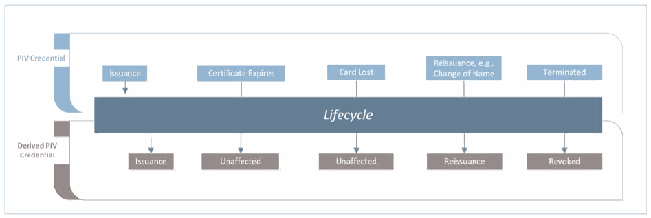
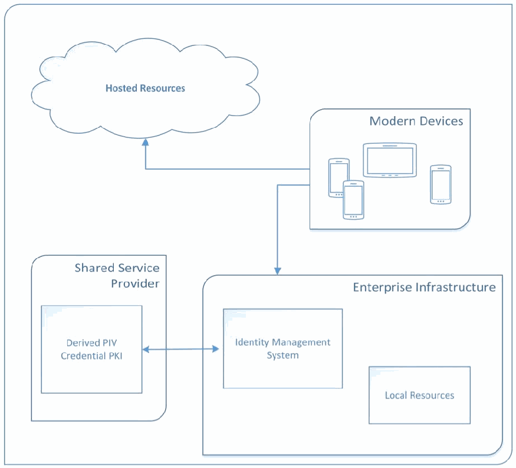
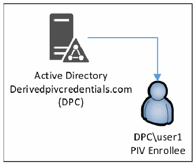
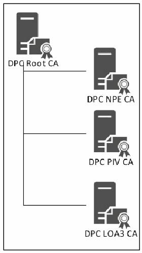

NIST IR 8055 日本語訳
英語タイトル : Derived Personal Identity Verification (PIV) Credentials (DPC) Proof of Concept Research日本語タイトル : 派生個人識別検証（PIV）認証情報（DPC）の概念実証研究
公開日 : 2016-01-20
原文URL : https://csrc.nist.gov/pubs/ir/8055/final
翻訳編集 : 自動生成（有志による非公式の日本語訳）, 原文取得日 : 2026-10-31, 訳文 : 741 / 813 ブロック
[要約] NIST IR 8055 は、派生個人識別検証（PIV）認証情報（DPC）の概念実証研究を記録した報告書で、NIST の研究所にある市販の既製（COTS）ハードウェアとソフトウェアを用いた実験的研究を示します。スマートカード方式の PIV カードは、スマートフォンやタブレットなど、ほとんどのモバイルデバイスでは容易に使用できませんが、DPC を使えばこれらのデバイスを PIV に対応させ、多要素認証を提供できるとしています。本書は、DPC に関する既存の要件を整理し、それを支えるアーキテクチャを提案したうえで、その実装と運用の例を示します。DPC の初回発行、保守、終了、DPC を介したクラウドベースサービスの利用や、次のステップも扱います。
NISTIR 8055
NISTIR 8055
Derived Personal Identity Verification (PIV) Credentials (DPC) Proof of Concept Research
派生個人識別検証（PIV）認証情報（DPC）の概念実証研究
Michael Bartock
Jeffrey Cichonski
Murugiah Souppaya
Paul Fox
Mike Miller
Ryan Holley
Karen Scarfone
Michael Bartock
Jeffrey Cichonski
Murugiah Souppaya
Paul Fox
Mike Miller
Ryan Holley
Karen Scarfone
This publication is available free of charge from: http://dx.doi.org/10.6028/NIST.IR.8055
本刊行物は以下から無料で入手できます: http://dx.doi.org/10.6028/NIST.IR.8055
［NIST のロゴ。公的な標章のため、この非公式サイトには掲載していません。原本 PDF を参照してください。］
NISTIR 8055
NISTIR 8055
Derived Personal Identity Verification (PIV) Credentials (DPC) Proof of Concept Research
派生個人識別検証（PIV）認証情報（DPC）の概念実証研究
Michael Bartock
Murugiah Souppaya
Computer Security Division
Information Technology Laboratory
Michael Bartock
Murugiah Souppaya
コンピュータセキュリティ部門
情報技術研究所
Paul Fox
Mike Miller
Microsoft Corporation
Redmond, Washington
Paul Fox
Mike Miller
Microsoft Corporation
ワシントン州レドモンド
Jeffrey Cichonski
Applied Cybersecurity Division
Information Technology Laboratory
Jeffrey Cichonski
応用サイバーセキュリティ部門
情報技術研究所
Ryan Holley
Intercede
Reston, Virginia
Ryan Holley
Intercede
バージニア州レストン
Karen Scarfone
Scarfone Cybersecurity
Clifton, Virginia
Karen Scarfone
Scarfone Cybersecurity
バージニア州クリフトン
This publication is available free of charge from: http://dx.doi.org/10.6028/NIST.IR.8055
本刊行物は以下から無料で入手できます: http://dx.doi.org/10.6028/NIST.IR.8055
January 2016
2016年1月
U.S. Department of Commerce
Penny Pritzker, Secretary
米国商務省
Penny Pritzker 長官
National Institute of Standards and Technology
国立標準技術研究所
Willie May, Under Secretary of Commerce for Standards and Technology and Director
Willie May、NIST 所長兼商務次官（標準・技術担当）
National Institute of Standards and Technology Internal Report 8055
105 pages (January 2016)
国立標準技術研究所 内部報告書 8055
105ページ（2016年1月）
This publication is available free of charge from: http://dx.doi.org/10.6028/NIST.IR.8055
本刊行物は以下から無料で入手できます: http://dx.doi.org/10.6028/NIST.IR.8055
Certain commercial entities, equipment, or materials may be identified in this document in order to describe an experimental procedure or concept adequately. Such identification is not intended to imply recommendation or endorsement by NIST, nor is it intended to imply that the entities, materials, or equipment are necessarily the best available for the purpose.
本文書では、実験的な手順や概念を適切に説明するために、特定の商業団体、機器、または資材を挙げている場合があります。そのような記載は、NIST による推奨または推薦を意味するものではなく、当該の団体、資材、または機器がその目的に対して必ずしも最良であることを意味するものでもありません。
There may be references in this publication to other publications currently under development by NIST in accordance with its assigned statutory responsibilities. The information in this publication, including concepts and methodologies, may be used by federal agencies even before the completion of such companion publications. Thus, until each publication is completed, current requirements, guidelines, and procedures, where they exist, remain operative. For planning and transition purposes, federal agencies may wish to closely follow the development of these new publications by NIST.
本刊行物には、NIST が法令で定められた責務に従って現在策定中の他の刊行物への言及が含まれる場合があります。本刊行物の情報（概念や方法論を含む）は、そうした関連刊行物の完成前であっても、連邦機関が利用してもよいです。したがって、各刊行物が完成するまでは、現行の要件、ガイドライン、手順が存在する場合は、それらが引き続き適用されます。計画および移行のため、連邦機関は、NIST によるこれらの新しい刊行物の策定状況を注意深く追うことを検討してもよいです。
Organizations are encouraged to review all draft publications during public comment periods and provide feedback to NIST. Many NIST cybersecurity publications, other than the ones noted above, are available at http://csrc.nist.gov/publications.
組織には、パブリックコメント期間中にすべての草案刊行物をレビューし、NIST にフィードバックを提供することが推奨されます。上記以外にも、多くの NIST サイバーセキュリティ刊行物が http://csrc.nist.gov/publications で入手できます。
Comments on this publication may be submitted to:
本刊行物に関するコメントの送付先:
National Institute of Standards and Technology
Attn: Computer Security Division, Information Technology Laboratory
100 Bureau Drive (Mail Stop 8930) Gaithersburg, MD 20899-8930
National Institute of Standards and Technology
Attn: Computer Security Division, Information Technology Laboratory
100 Bureau Drive (Mail Stop 8930) Gaithersburg, MD 20899-8930
Reports on Computer Systems Technology
コンピュータシステム技術に関する報告書
The Information Technology Laboratory (ITL) at the National Institute of Standards and Technology (NIST) promotes the U.S. economy and public welfare by providing technical leadership for the Nation’s measurement and standards infrastructure. ITL develops tests, test methods, reference data, proof of concept implementations, and technical analyses to advance the development and productive use of information technology. ITL’s responsibilities include the development of management, administrative, technical, and physical standards and guidelines for the cost-effective security and privacy of other than national security-related information in federal information systems.
国立標準技術研究所（NIST）の情報技術研究所（ITL）は、国の計測・標準インフラストラクチャに対する技術的なリーダーシップを提供することで、米国の経済と公共の福祉を促進します。ITL は、情報技術の発展と生産的な利用を推進するため、テスト、テスト方法、参照データ、概念実証の実装、技術分析を開発しています。ITL の責務には、連邦情報システムにおける国家安全保障に関するもの以外の情報について、そのセキュリティとプライバシーを費用対効果の高い形で確保するための、管理上、運用上、技術上および物理上の標準とガイドラインの策定が含まれます。
Abstract
要旨
This report documents proof of concept research for Derived Personal Identity Verification (PIV) Credentials. Smart card-based PIV Cards cannot be readily used with most mobile devices, such as smartphones and tablets, but Derived PIV Credentials (DPCs) can be used instead to PIV-enable these devices and provide multi-factor authentication for mobile device users. This report captures existing requirements related to DPCs, proposes an architecture that supports these requirements, and then demonstrates how such an architecture could be implemented and operated.
本報告書は、派生個人識別検証（PIV）認証情報の概念実証研究を記録したものです。スマートカード方式の PIV カードは、スマートフォンやタブレットなど、ほとんどのモバイルデバイスでは容易に使用できませんが、代わりに派生 PIV 認証情報（DPC）を使用すれば、これらのデバイスを PIV に対応させ、モバイルデバイスのユーザーに多要素認証を提供できます。本報告書は、DPC に関する既存の要件を整理し、それらの要件を支えるアーキテクチャを提案したうえで、そのようなアーキテクチャをどのように実装・運用できるかを示します。
Keywords
キーワード
authentication; credentials; derived credentials; Derived PIV Credential (DPC); electronic authentication; electronic credentials; mobile devices; Personal Identity Verification (PIV); smart cards
認証、認証情報、派生認証情報、派生 PIV 認証情報（DPC）、電子認証、電子的な認証情報、モバイルデバイス、個人識別検証（PIV）、スマートカード
Acknowledgements
謝辞
The authors wish to thank their colleagues, in particular David Cooper and Hildy Ferraiolo from NIST, Aman Arneja, Shweta Vaidya, Himanshu Soni, and Nelly Porter from Microsoft, and Andrew Atyeo and Chris Edwards from Intercede who reviewed drafts of this report and contributed to its technical content.
著者は、本報告書の草案をレビューし、その技術的内容に貢献してくれた同僚、特に NIST の David Cooper 氏と Hildy Ferraiolo 氏、Microsoft の Aman Arneja 氏、Shweta Vaidya 氏、Himanshu Soni 氏、Nelly Porter 氏、Intercede の Andrew Atyeo 氏と Chris Edwards 氏に感謝します。
Audience
対象読者
The intended audience for this report is individuals who have responsibilities for implementing NIST standards and guidelines to develop cybersecurity solutions. This includes technical subject matter experts in Identity Management Systems (IDMS) and PIV technology, engineers, integrators, product vendors, and security professionals. These individuals should already have general knowledge of enterprise information technology (IT) infrastructure services, PIV Cards, IDMS, Public Key Infrastructure (PKI) technology, mobile devices, and authentication and authorization technologies.
本報告書の想定読者は、サイバーセキュリティソリューションを開発するために NIST の標準とガイドラインを実装する責務を持つ人々です。これには、アイデンティティ管理システム（IDMS）と PIV 技術の技術的な専門家、エンジニア、インテグレーター、製品ベンダー、セキュリティ専門家が含まれます。これらの人々は、エンタープライズの情報技術（IT）インフラストラクチャサービス、PIV カード、IDMS、公開鍵基盤（PKI）技術、モバイルデバイス、認証・認可技術について、すでに一般的な知識を持っているべきです。
Trademark Information
商標情報
All registered trademarks or trademarks belong to their respective organizations.
登録商標または商標はすべて、それぞれの組織に帰属します。
Table of Contents
目次
List of Appendices
付録の一覧
List of Figures
図の一覧
List of Tables
表の一覧
1 Introduction
1 はじめに
1.1 Purpose and Scope
1.1 目的と適用範囲
The purpose of this report is to document Derived Personal Identity Verification (PIV) Credentials proof of concept research using commercial-off-the-shelf hardware and software found in NIST’s research laboratories. It represents the experimental research NIST has performed to develop an example of an implementation of Derived PIV Credentials (DPCs) based on NIST Special Publication (SP) 800-157, Guidelines for Derived Personal Identity Verification (PIV) Credentials.1
本報告書の目的は、NIST の研究所にある市販の既製（COTS）ハードウェアとソフトウェアを使用した、派生個人識別検証（PIV）認証情報の概念実証研究を記録することです。本報告書は、NIST 特別刊行物（SP）800-157『Guidelines for Derived Personal Identity Verification (PIV) Credentials』に基づく派生 PIV 認証情報（DPC）の実装例を開発するために NIST が行った実験的研究を示します。1
Other types of derived credentials are out of the scope of this report.
その他の種類の派生認証情報は、本報告書の適用範囲外です。
Background information on PIV Cards, DPCs, and electronic authentication is not provided in this report. For more information on these topics, see NIST SP 800-157; Federal Information Processing Standard (FIPS) Publication 201-2, Personal Identity Verification (PIV) of Federal Employees and Contractors2; and NIST SP 800-63-2, Electronic Authentication Guideline3.
PIV カード、DPC、電子認証に関する背景情報は、本報告書では提供しません。これらの話題の詳細については、NIST SP 800-157、連邦情報処理標準（FIPS）刊行物 201-2『Personal Identity Verification (PIV) of Federal Employees and Contractors』2、および NIST SP 800-63-2『Electronic Authentication Guideline』3を参照してください。
1.2 Report Structure
1.2 報告書の構成
The remainder of this report is organized into the following sections and appendices:
本報告書の残りの部分は、次の節と付録で構成されています。
•Section 2 provides a summary of the business opportunities for using DPCs with modern mobile client devices.
•第 2 節では、最新のモバイルクライアントデバイスで DPC を使用するビジネス機会をまとめます。
•Section 3 describes usage scenarios for issuing PIV credentials and associated DPCs.
•第 3 節では、PIV 認証情報と関連する DPC を発行する利用シナリオを説明します。
•Section 4 explains the application of Microsoft and Intercede technologies in accordance with NIST SP 800-157 to support the organization-provisioned PIV credentials usage scenario.
•第 4 節では、組織がプロビジョニングする PIV 認証情報の利用シナリオを支えるために、NIST SP 800-157 に従って Microsoft と Intercede の技術を適用する方法を説明します。
•The following sections discuss DPC-related activities:
•次の節では、DPC に関連する活動を論じます。
•Section 5: Initial issuance
•第 5 節: 初回発行
•Section 6: Maintenance
•第 6 節: 保守
•Section 7: Termination
•第 7 節: 終了
•Section 8: Usage
•第 8 節: 利用
•Section 9 briefly looks at next steps for research in the area of DPCs.
•第 9 節では、DPC の分野における研究の次のステップを簡潔に検討します。
•Appendix A provides mappings between the DPC requirements from this report and requirements from other federal government standards and guidelines.
•付録 A では、本報告書の DPC 要件と、連邦政府の他の標準およびガイドラインの要件との間のマッピングを示します。
•Appendix B— defines acronyms and abbreviations used in the report.
•付録 B では、本報告書で使用する略語を定義します。
•Appendix C— provides a bibliography for the report.
•付録 C では、本報告書の参考文献を示します。
2 Business Opportunities for Using DPCs with Mobile Client Devices
2 モバイルクライアントデバイスで DPC を使用するビジネス機会
This section provides a summary of the business opportunities for using Derived PIV Credentials (DPCs) with modern mobile client devices based on NIST SP 800-157 recommendations. First, the section introduces the challenges with using PIV Cards with mobile devices. Then the section describes an overview of the proposed DPC solution. The section ends with a summary of the requirements related to DPCs as described in NIST SP 800-157.
本節では、NIST SP 800-157 の推奨事項に基づき、最新のモバイルクライアントデバイスで派生 PIV 認証情報（DPC）を使用するビジネス機会をまとめます。まず、モバイルデバイスで PIV カードを使用する際の課題を紹介します。次に、提案する DPC ソリューションの概要を説明します。本節の最後に、NIST SP 800-157 に記載された DPC に関する要件をまとめます。
2.1 Challenges with Using PIV Cards on Mobile Devices
2.1 モバイルデバイスで PIV カードを使用する際の課題
Organizations protect their information systems, in part, by “granting users only those accesses they need to perform their official duties.”4 This principle of “least privilege” requires both authentication and authorization processes. FIPS 201-2 recommends using X.509 smart cards with user data in conjunction with passwords/personal identification numbers (PINs) to provide two-factor authentication to federal information systems.
組織は、情報システムを保護する手段の一つとして、「ユーザーに、公務の遂行に必要なアクセスのみを許可」します。4この「最小権限」の原則には、認証と認可の両方のプロセスが必要です。FIPS 201-2 は、連邦情報システムに二要素認証を提供するため、パスワードまたは個人識別番号（PIN）と組み合わせて、ユーザーデータを持つ X.509 スマートカードを使用することを推奨しています。
While many desktop and laptop computers have built-in card readers, enterprises today rely heavily on the productivity of mobile devices (e.g., smartphones and tablets) that do not easily accommodate card readers. Organizations reliant on smart card and password two-factor authentication need to authenticate users of mobile devices in a way that is more tamper-resistant than a password and as easy to use as a smart card. However, it is challenging to use smart cards on mobile devices due to their form factor. Attaching or tethering a separate external smart card reader to smartphones or tablets creates usability and portability challenges that make the card an impractical authentication token.
多くのデスクトップ PC やノート PC にはカードリーダーが内蔵されていますが、今日の企業は、カードリーダーを容易に接続できないモバイルデバイス（スマートフォンやタブレットなど）の生産性に大きく依存しています。スマートカードとパスワードによる二要素認証に依存する組織は、パスワードよりも改ざん耐性が高く、スマートカードと同じくらい使いやすい方法で、モバイルデバイスのユーザーを認証する必要があります。しかし、フォームファクターのため、モバイルデバイスでスマートカードを使用することは困難です。別個の外付けスマートカードリーダーをスマートフォンやタブレットに取り付けたり接続したりすると、使いやすさと携帯性に課題が生じ、その結果、カードは実用的な認証トークンではなくなります。
2.2 Proposed Solution: DPCs
2.2 提案する解決策: DPC
NIST SP 800-157 defines the use of a DPC as one possible solution to PIV-enable a mobile device. NIST SP 800-157 specifies the use of cryptographic tokens on mobile devices in which DPCs and their corresponding private keys may be used. The use of tokens with alternative form factors greatly improves the usability of electronic authentication from mobile devices to remote IT resources, while maintaining the goals of Homeland Security Presidential Directive 12 (HSPD-12)5 for common identification that is secure, reliable, and interoperable government-wide.
NIST SP 800-157 は、モバイルデバイスを PIV に対応させるための一つの解決策として、DPC の使用を定めています。NIST SP 800-157 は、DPC とそれに対応する秘密鍵を使用してもよい、モバイルデバイス上の暗号トークンの使用を規定しています。代替のフォームファクターを持つトークンを使用することで、モバイルデバイスからリモートの IT リソースへの電子認証の使いやすさが大きく向上すると同時に、政府全体で安全で信頼でき相互運用可能な共通の身元確認を行うという国土安全保障大統領指令 12（HSPD-12）5の目標も維持されます。
This solution leverages a public key infrastructure (PKI) with credentials derived from a PIV Card. The X.509-based DPCs will be used for logical access to remote resources hosted within an on-premises data center or in the public cloud. The corresponding derived private key will be stored in a cryptographic module with an alternative form factor such as embedded hardware or software in a mobile device, or a removable token such as a Secure Digital (SD) card, Universal Integrated Circuit Card (UICC, the new generation of Subscriber Identity Module (SIM) cards), or Universal Serial Bus (USB) token.
このソリューションは、PIV カードから派生した認証情報を持つ公開鍵基盤（PKI）を活用します。X.509 ベースの DPC は、オンプレミスのデータセンターまたはパブリッククラウドでホストされるリモートリソースへの論理アクセスに使用されます。対応する派生秘密鍵は、モバイルデバイスに組み込まれたハードウェアやソフトウェア、あるいは Secure Digital（SD）カード、Universal Integrated Circuit Card（UICC、Subscriber Identity Module（SIM）カードの新世代）、Universal Serial Bus（USB）トークンなどの取り外し可能なトークンといった、代替のフォームファクターを持つ暗号モジュールに格納されます。
2.3 DPC Requirements
2.3 DPC の要件
This section summarizes requirements throughout the primary lifecycle activities for the DPC as described in NIST SP 800-157. To achieve interoperability with the PIV infrastructure and its applications, the solution uses PKI technology as the basis for the DPC. An X.509 public key certificate that has been issued by the Identity Management System (IDMS) in accordance with the requirements of NIST SP 800-157 and the X.509 Certificate Policy for the U.S. Federal PKI Common Policy Framework6 serves as the Derived PIV Authentication certificate.
本節では、NIST SP 800-157 に記載された DPC の主要なライフサイクル活動全体にわたる要件をまとめます。PIV インフラストラクチャおよびそのアプリケーションとの相互運用性を実現するため、このソリューションでは PKI 技術を DPC の基盤として使用します。NIST SP 800-157 と『X.509 Certificate Policy for the U.S. Federal PKI Common Policy Framework』6の要件に従ってアイデンティティ管理システム（IDMS）が発行した X.509 公開鍵証明書が、派生 PIV 認証証明書となります。
2.3.1 General Requirements
2.3.1 一般要件
2.3.1.1.A DPC is issued for which the corresponding private key is stored in a cryptographic module that is an alternative form factor to the PIV Card.
2.3.1.1.DPC が発行され、対応する秘密鍵は、PIV カードとは異なるフォームファクターの暗号モジュールに格納されます。
2.3.1.2.Tokens with alternative form factors to the PIV Card that may be inserted into mobile devices, such as microSD tokens, USB tokens, UICCs, or that are embedded in the mobile or computing device, are used.
2.3.1.2.PIV カードとは異なるフォームファクターを持つトークンのうち、モバイルデバイスに挿入できるもの（microSD トークン、USB トークン、UICC など）、またはモバイルデバイスやコンピューティングデバイスに組み込まれたものを使用します。
2.3.1.3.The PKI-based DPCs specified in this document are issued at levels of assurance (LOA) 3 and 4.
2.3.1.3.本書で規定する PKI ベースの DPC は、保証レベル（LOA）3 および 4 で発行されます。
2.3.1.4.DPCs are based on the general concept of a derived credential in NIST SP 800-63-2, which leverages identity proofing and vetting results of current and valid credentials.
2.3.1.4.DPC は、NIST SP 800-63-2 の派生認証情報という一般的な概念に基づいており、この概念は、現行かつ有効な認証情報の本人確認と審査の結果を活用します。
2.3.1.5.Applicant’s proof of possession of a valid PIV Card is required to receive a DPC.
2.3.1.5.DPC を受け取るには、申請者が有効な PIV カードを所有していることの証明が必要です。
2.3.1.6.The Derived PIV Authentication certificate is an X.509 public key certificate issued in accordance with the requirements of NIST SP 800-157 and the X.509 Certificate Policy for the U.S. Federal PKI Common Policy Framework.
2.3.1.6.派生 PIV 認証証明書は、NIST SP 800-157 と『X.509 Certificate Policy for the U.S. Federal PKI Common Policy Framework』の要件に従って発行される X.509 公開鍵証明書です。
2.3.1.7.The digital signature and key management keys can be included on the mobile devices.
2.3.1.7.デジタル署名用の鍵と鍵管理用の鍵を、モバイルデバイスに含めることができます。
2.3.2 Initial Issuance Requirements
2.3.2 初回発行の要件
2.3.2.1.A DPC shall be issued following verification of the Applicant’s identity using the PIV Authentication key on his or her existing PIV Card by demonstrating possession and control of the related PIV Card via the PKI-AUTH authentication mechanism as per Section 6.2.3.1 of FIPS 201-2.
2.3.2.1.DPC は、FIPS 201-2 の 6.2.3.1 項に従い、PKI-AUTH 認証メカニズムによって関連する PIV カードの所有と管理を示すことで、申請者の既存の PIV カード上の PIV 認証鍵を用いて申請者の身元を確認した後に発行しなければなりません。
2.3.2.2.The revocation status of the Applicant’s PIV Authentication certificate should be rechecked seven calendar days following issuance of the DPC.
2.3.2.2.申請者の PIV 認証証明書の失効状況は、DPC の発行から暦日で 7 日後に再確認すべきです。
2.3.2.3.A DPC can be issued at identity assurance level three or four (LOA-3 or LOA-4).
2.3.2.3.DPC は、ID 保証レベル 3 または 4（LOA-3 または LOA-4）で発行できます。
2.3.2.4.An LOA-3 DPC may be issued remotely or in person, while an LOA-4 DPC is issued in-person in accordance with NIST SP 800-63-2.
2.3.2.4.NIST SP 800-63-2 に従い、LOA-3 の DPC はリモートまたは対面で発行できますが、LOA-4 の DPC は対面で発行します。
2.3.2.5.If the credential is issued remotely, all communications shall be authenticated and protected from modification (e.g., using Transport Layer Security (TLS)), and encryption shall be used to protect the confidentiality of any private or secret data.
2.3.2.5.認証情報をリモートで発行する場合、すべての通信を認証し、改変から保護しなければなりません（たとえば Transport Layer Security（TLS）を使用します）。また、あらゆる秘密データまたはシークレットデータの機密性を保護するために暗号化を使用しなければなりません。
2.3.2.6.If the issuance process involves two or more electronic transactions for an LOA-3 DPC, the Applicant must identify himself/herself in each new encounter by presenting a temporary secret that was issued in a previous transaction, as described in Section 5.3.1 of NIST SP 800-63-2.
2.3.2.6.LOA-3 の DPC の発行プロセスに 2 回以上の電子的なトランザクションが含まれる場合、申請者は、NIST SP 800-63-2 の 5.3.1 項に記載されているとおり、新たな各手続きにおいて、前のトランザクションで発行された一時的なシークレットを提示して、自身を特定しなければなりません。
2.3.2.7.The Applicant shall identify himself/herself using a biometric sample that can be verified against the Applicant’s PIV Card when enrolling for an LOA-4 DPC.
2.3.2.7.LOA-4 の DPC の登録時には、申請者は、申請者の PIV カードと照合して検証できる生体サンプルを使用して、自分自身を特定しなければなりません。
2.3.2.8.If there are two or more transactions during the issuance process, the Applicant shall identify himself/herself using a biometric sample that can be verified either against the PIV Card or against a biometric that was recorded in a previous transaction when issuing an LOA-4 DPC.
2.3.2.8.発行プロセスに 2 回以上のトランザクションがある場合、LOA-4 の DPC の発行時には、申請者は、PIV カードと照合するか、前のトランザクションで記録された生体情報と照合して検証できる生体サンプルを使用して、自分自身を特定しなければなりません。
2.3.2.9.If an LOA-4 credential has been issued, the issuer shall retain for future reference the biometric sample used to validate the Applicant.
2.3.2.9.LOA-4 の認証情報を発行した場合、発行者は、申請者の検証に使用した生体サンプルを、将来の参照のために保持しなければなりません。
2.3.2.10.NIST SP 800-157 does not preclude the issuance of multiple DPCs to the same Applicant on the basis of the same PIV Card.
2.3.2.10.NIST SP 800-157 は、同じ PIV カードに基づいて同一の申請者に複数の DPC を発行することを妨げていません。
2.3.3 Maintenance Requirements
2.3.3 保守の要件
2.3.3.1.When certificate re-key or modification is performed remotely for an LOA-4 DPC, communication between the issuer and the cryptographic module in which the PIV derived authentication private key is stored shall occur only over mutually authenticated secure sessions between tested and validated cryptographic modules.
2.3.3.1.LOA-4 の DPC について証明書の鍵の再生成または変更をリモートで行う場合、発行者と、PIV 派生認証秘密鍵を格納している暗号モジュールとの間の通信は、テスト済みで検証済みの暗号モジュール間の、相互に認証されたセキュアセッションのみを介して行わなければなりません。
2.3.3.2.When certificate re-key or modification is performed remotely for an LOA-4 DPC, data transmitted between the issuer and the cryptographic module in which the PIV derived authentication private key is stored shall be encrypted and contain data integrity checks.
2.3.3.2.LOA-4 の DPC について証明書の鍵の再生成または変更をリモートで行う場合、発行者と、PIV 派生認証秘密鍵を格納している暗号モジュールとの間で送信されるデータは、暗号化し、データ完全性チェックを含めなければなりません。
2.3.3.3.The initial issuance process shall be followed for re-key of an expired or compromised DPC.
2.3.3.3.有効期限が切れた DPC または危殆化した DPC の鍵の再生成には、初回発行のプロセスに従わなければなりません。
2.3.3.4.The initial issuance process shall be followed for re-key of a DPC at LOA-4 to a new hardware token.
2.3.3.4.LOA-4 の DPC の鍵を新しいハードウェアトークンに更新する場合は、初回発行のプロセスに従わなければなりません。
2.3.3.5.The Derived PIV Authentication certificate shall be revoked or the token containing the corresponding private key shall be either zeroized or destroyed when any of these circumstances occurs:
2.3.3.5.次のいずれかの状況が生じたときは、派生 PIV 認証証明書を失効させるか、対応する秘密鍵を含むトークンをゼロ化または破壊しなければなりません。
2.3.3.5.1.The token containing the private key corresponding to the DPC is lost, stolen, damaged, or compromised.
2.3.3.5.1.DPC に対応する秘密鍵を含むトークンが、紛失、盗難、損傷、または危殆化した場合。
2.3.3.5.2.The token containing the private key corresponding to the DPC is transferred to another individual, including when a mobile device with an embedded cryptographic module is transferred to another individual.
2.3.3.5.2.DPC に対応する秘密鍵を含むトークンが別の個人に譲渡された場合。暗号モジュールが組み込まれたモバイルデバイスが別の個人に譲渡された場合を含みます。
2.3.3.5.3.The department or agency that issued the credential determines that the Subscriber is no longer eligible to have a PIV Card (i.e., PIV Card is terminated).
2.3.3.5.3.認証情報を発行した省庁または機関が、加入者はもはや PIV カードを持つ資格がないと判断した場合（すなわち、PIV カードが終了された場合）。
2.3.3.5.4.The department or agency that issued the credential determines that the Subscriber no longer requires a DPC, even if the Subscriber’s PIV Card is not being terminated. This may happen, for example, when the Subscriber’s role in the agency changes such that he/she no longer has the need to access agency resources from a mobile device using a DPC.
2.3.3.5.4.認証情報を発行した省庁または機関が、加入者の PIV カードが終了されない場合でも、加入者はもはや DPC を必要としないと判断した場合。これは、たとえば、加入者の機関内での役割が変わり、DPC を使用してモバイルデバイスから機関のリソースにアクセスする必要がなくなった場合に起こり得ます。
2.3.3.6.If the Subscriber’s PIV Card is reissued as a result of the Subscriber’s name changing and the Subscriber’s name appears in the Derived PIV Authentication certificate, a new Derived PIV Authentication certificate with the new name will also need to be issued.
2.3.3.6.加入者の氏名変更により加入者の PIV カードが再発行され、かつ加入者の氏名が派生 PIV 認証証明書に含まれている場合は、新しい氏名を含む新しい派生 PIV 認証証明書も発行する必要があります。
2.3.4 Linkage with PIV Card Requirements
2.3.4 PIV カードとの関連付けの要件
2.3.4.1.A DPC issuer shall only issue a DPC to an Applicant if the DPC issuer has access to information about the Applicant’s PIV Card from the issuer of the PIV Card.
2.3.4.1.DPC の発行者は、PIV カードの発行者から申請者の PIV カードに関する情報にアクセスできる場合にのみ、申請者に DPC を発行しなければなりません。
2.3.4.2.The DPC issuer shall have a mechanism to periodically check with the PIV Card issuer to determine if the PIV Card has been terminated or if information about the individual that will appear in the DPC (e.g., name) has changed, as these would require revocation or modification of the DPC.
2.3.4.2.DPC の発行者は、PIV カードが終了されたかどうか、または DPC に含まれる個人に関する情報（氏名など）が変更されたかどうかを判断するために、PIV カードの発行者に定期的に確認する仕組みを備えなければなりません。これらの場合には DPC の失効または変更が必要になるためです。
2.3.4.3.The DPC issuer should check every 18 hours on the termination status. The periodic checking requirement can also be met if:
2.3.4.3.DPC の発行者は、終了状況を 18 時間ごとに確認すべきです。定期的な確認の要件は、次の場合にも満たすことができます。
2.3.4.3.1.A notification mechanism is in place between the PIV Card issuer and the DPC issuer, or
2.3.4.3.1.PIV カードの発行者と DPC の発行者の間に通知の仕組みがある場合、または
2.3.4.3.2.The PIV Card record and the DPC record are stored in the same system and termination of the PIV Card automatically triggers termination of the DPC.
2.3.4.3.2.PIV カードの記録と DPC の記録が同じシステムに格納され、PIV カードが終了すると DPC も自動的に終了します。
2.3.4.4.The issuer of the DPC shall not solely rely on tracking the revocation status of the PIV Authentication certificate as a means of tracking the termination status of the PIV Card.
2.3.4.4.DPC の発行者は、PIV カードの終了状況を追跡する手段として、PIV 認証証明書の失効状況の追跡のみに頼ってはなりません。
2.3.4.5.Additional methods must be employed for obtaining information about the PIV Card from the PIV Card issuer such as:
2.3.4.5.PIV カードの発行者から PIV カードに関する情報を得るために、次のような追加の方法を用いなければなりません。
2.3.4.5.1.If the DPC is issued by the same agency or issuer that issued the Subscriber’s PIV Card, then the DPC issuer may have direct access to the IDMS database implemented by the issuing agency that contains the relevant information about the Subscriber.
2.3.4.5.1.DPC が、加入者の PIV カードを発行したものと同じ機関または発行者によって発行される場合、DPC の発行者は、加入者に関する該当情報を含む、発行機関が実装した IDMS データベースに直接アクセスできる場合があります。
2.3.4.5.2.When the issuer of the DPC is different from the PIV Card Issuer, the following mechanisms may be applied:
2.3.4.5.2.DPC の発行者が PIV カードの発行者と異なる場合は、次の仕組みを適用してもよいです。
2.3.4.5.2.1.The Backend Attribute Exchange (BAE) can be queried for the termination status of the PIV Card, if an attribute providing this information is defined and the issuer of the PIV Card maintains this attribute for the Subscriber. The BAE can also be queried for other attributes about the Subscriber (e.g., name) that may appear in the Derived PIV Authentication certificate.
2.3.4.5.2.1.PIV カードの終了状況を提供する属性が定義され、PIV カードの発行者が加入者についてその属性を維持している場合は、Backend Attribute Exchange（BAE）に PIV カードの終了状況を照会できます。BAE には、派生 PIV 認証証明書に含まれる場合がある加入者に関するその他の属性（氏名など）も照会できます。
2.3.4.5.2.2.The issuer of the DPC notifies the original PIV issuer when a DPC is created. The issuer of the PIV Card maintains a list of corresponding DPC issuers and sends notification to the latter set when the PIV Card is terminated or when attributes about the cardholder change. Such notification should provide evidence of receipt and the integrity of the message.
2.3.4.5.2.2.DPC の発行者は、DPC が作成されたときに、元の PIV の発行者に通知します。PIV カードの発行者は、対応する DPC の発行者の一覧を維持し、PIV カードが終了されたとき、またはカード保持者に関する属性が変更されたときに、後者の発行者群に通知を送ります。この通知は、メッセージの受領と完全性の証拠を提供すべきです。
2.3.4.5.2.3.If a Uniform Reliability and Revocation Service (URRS) is implemented in accordance with Section 3.7 of NIST Interagency Report (IR) 78177, the issuer of a DPC may obtain termination status of the Subscriber’s PIV Card through the URRS.
2.3.4.5.2.3.NIST Interagency Report（IR）78177の 3.7 節に従って Uniform Reliability and Revocation Service（URRS）が実装されている場合、DPC の発行者は、URRS を通じて加入者の PIV カードの終了状況を取得できます。
2.3.5 Technical Requirements
2.3.5 技術要件
2.3.5.1.Certificate Policies
2.3.5.1.証明書ポリシー
2.3.5.1.1.Derived PIV Authentication certificates shall be issued under either the id-fpki-common-pivAuth-derived-hardware (LOA-4) or the id-fpki-common-pivAuth-derived (LOA-3) policy of the X.509 Certificate Policy for the U.S. Federal PKI Common Policy Framework.
2.3.5.1.1.派生 PIV 認証証明書は、『X.509 Certificate Policy for the U.S. Federal PKI Common Policy Framework』の id-fpki-common-pivAuth-derived-hardware（LOA-4）または id-fpki-common-pivAuth-derived（LOA-3）のいずれかのポリシーの下で発行しなければなりません。
2.3.5.1.2.The Derived PIV Authentication certificate shall comply with Worksheet 10: Derived PIV Authentication Certificate Profile found in X.509 Certificate and Certificate Revocation List (CRL) Extensions Profile for the Shared Service Providers (SSP) Program.8
2.3.5.1.2.派生 PIV 認証証明書は、『X.509 Certificate and Certificate Revocation List (CRL) Extensions Profile for the Shared Service Providers (SSP) Program』にある Worksheet 10: Derived PIV Authentication Certificate Profile に準拠しなければなりません。8
2.3.5.1.3.The expiration date of the Derived PIV Authentication certificate is based on the certificate policy of the issuer. There is no requirement to align the expiration date of the Derived PIV Authentication certificate with the expiration date of the PIV Authentication certificate or the expiration of the PIV Card; however, in many cases aligning the expiration dates will simplify lifecycle management.
2.3.5.1.3.派生 PIV 認証証明書の有効期限は、発行者の証明書ポリシーに基づきます。派生 PIV 認証証明書の有効期限を、PIV 認証証明書の有効期限や PIV カードの有効期限に合わせる要件はありません。ただし、多くの場合、有効期限を合わせるとライフサイクル管理が簡素化されます。
2.3.5.2.Cryptographic Specifications
2.3.5.2.暗号仕様
2.3.5.2.1.The cryptographic algorithm and key size requirements for the Derived PIV Authentication certificate and private key are the same as the requirements for the PIV Authentication certificate and private key, as specified in NIST SP 800-78-4.9
2.3.5.2.1.派生 PIV 認証証明書と秘密鍵に対する暗号アルゴリズムと鍵長の要件は、NIST SP 800-78-49に規定された PIV 認証証明書と秘密鍵の要件と同じです。
2.3.5.2.2.For Derived PIV Authentication certificates issued under id-fpki-common-pivAuth-derived-hardware (LOA-4), the Derived PIV Authentication key pair shall be generated within a hardware cryptographic module that has been validated to FIPS 140-210 Level 2 or higher that provides Level 3 physical security to protect the Derived PIV Authentication private key while in storage and that does not permit exportation of the private key.
2.3.5.2.2.id-fpki-common-pivAuth-derived-hardware（LOA-4）の下で発行される派生 PIV 認証証明書については、派生 PIV 認証鍵ペアを、FIPS 140-210のレベル 2 以上で検証されたハードウェア暗号モジュールの内部で生成しなければなりません。このモジュールは、保管中の派生 PIV 認証秘密鍵を保護するためにレベル 3 の物理的セキュリティを備え、秘密鍵のエクスポートを許可しないものとします。
2.3.5.2.3.For Derived PIV Authentication certificates issued under id-fpki-common-pivAuth-derived (LOA-3), the Derived PIV Authentication key pair shall be generated within a cryptographic module that has been validated to FIPS 140-2 Level 1 or higher.
2.3.5.2.3.id-fpki-common-pivAuth-derived（LOA-3）の下で発行される派生 PIV 認証証明書については、派生 PIV 認証鍵ペアを、FIPS 140-2 のレベル 1 以上で検証された暗号モジュールの内部で生成しなければなりません。
2.3.5.3.Cryptographic Token Types
2.3.5.3.暗号トークンの種類
2.3.5.3.1.Removable (Non-Embedded) Hardware Cryptographic Tokens
2.3.5.3.1.取り外し可能（非組込み）なハードウェア暗号トークン
2.3.5.3.1.1.A Derived PIV Application shall be installed on the hardware cryptographic token. The use of this data model and its interface supports interoperability and ensures the DPC interface is aligned with the interface of the PIV Card.
2.3.5.3.1.1.ハードウェア暗号トークンには、派生 PIV アプリケーションをインストールしなければなりません。このデータモデルとそのインターフェースを使用することで、相互運用性が支えられ、DPC のインターフェースが PIV カードのインターフェースと確実に整合します。
2.3.5.3.1.2.The form factor supports a secure element (SE), a tamper-resistant cryptographic component that provides security and confidentiality.
2.3.5.3.1.2.このフォームファクターは、セキュリティと機密性を提供する耐タンパー性の暗号コンポーネントであるセキュアエレメント（SE）をサポートします。
2.3.5.3.1.3.The Application Protocol Data Units (APDUs) for the Derived PIV Application command interface specified in Appendix B of NIST SP 800-157 are transported to the secure element within each form factor over a transport protocol appropriate for that form factor.
2.3.5.3.1.3.NIST SP 800-157 の付録 B に規定された、派生 PIV アプリケーションのコマンドインターフェース用の Application Protocol Data Unit（APDU）は、各フォームファクターに適したトランスポートプロトコルを介して、そのフォームファクター内のセキュアエレメントへ転送されます。
2.3.5.3.1.4.As described in Appendix B of NIST SP 800-157, the Derived PIV Application may include digital signature and key management private keys and their corresponding certificates in addition to the Derived PIV Authentication private key and its corresponding certificate.
2.3.5.3.1.4.NIST SP 800-157 の付録 B に記載されているとおり、派生 PIV アプリケーションには、派生 PIV 認証秘密鍵とそれに対応する証明書に加えて、デジタル署名用秘密鍵と鍵管理用秘密鍵、およびそれらに対応する証明書を含めてもよいです。
2.3.5.3.1.5.SD Card with Cryptographic Module
2.3.5.3.1.5.暗号モジュールを備えた SD カード
2.3.5.3.1.5.1.A Derived PIV Application may reside on an SD Card implementation that includes an on-board secure element or security system.
2.3.5.3.1.5.1.派生 PIV アプリケーションは、オンボードのセキュアエレメントまたはセキュリティシステムを含む SD カード実装上に存在してもよいです。
2.3.5.3.1.5.2.The secure element used for the Derived PIV Application shall support an interface with the card commands specified in Appendix B of NIST SP 800-157.
2.3.5.3.1.5.2.派生 PIV アプリケーションに使用するセキュアエレメントは、NIST SP 800-157 の付録 B に規定されたカードコマンドとのインターフェースをサポートしなければなりません。
2.3.5.3.1.6.Removable UICC with Cryptographic Module
2.3.5.3.1.6.暗号モジュールを備えた取り外し可能な UICC
2.3.5.3.1.6.1.The Derived PIV Application shall be installed in a security domain that is separate from other security domains, dedicated to the DPC, and under the explicit control of the issuing agency.
2.3.5.3.1.6.1.派生 PIV アプリケーションは、他のセキュリティドメインから分離され、DPC 専用で、発行機関の明示的な管理下にあるセキュリティドメインにインストールしなければなりません。
2.3.5.3.1.6.2.The APDUs as specified in Appendix B of NIST SP 800-157 shall be used with this secure element containing the PIV Derived Application.
2.3.5.3.1.6.2.NIST SP 800-157 の付録 B に規定された APDU を、PIV 派生アプリケーションを含むこのセキュアエレメントで使用しなければなりません。
2.3.5.3.1.6.3.A UICC used to host a DPC shall implement the GlobalPlatform Card Secure Element Configuration v1.0.11
2.3.5.3.1.6.3.DPC をホストするために使用する UICC は、GlobalPlatform Card Secure Element Configuration v1.0 を実装しなければなりません。11
2.3.5.3.1.7.USB Token with Cryptographic Module
2.3.5.3.1.7.暗号モジュールを備えた USB トークン
2.3.5.3.1.7.1.USB token implementations called USB Integrated Circuit(s) Card Devices (ICCDs) that contain an integrated secure element (an Integrated Circuit Card or ICC) are suitable for issuance of DPCs and comply with the Universal Serial Bus Device Class: Smart Card ICCD Specification for USB Integrated Circuit(s) Card Devices.12
2.3.5.3.1.7.1.USB Integrated Circuit(s) Card Devices（ICCD）と呼ばれる、統合されたセキュアエレメント（Integrated Circuit Card、すなわち ICC）を含む USB トークンの実装は、DPC の発行に適しており、『Universal Serial Bus Device Class: Smart Card ICCD Specification for USB Integrated Circuit(s) Card Devices』に準拠します。12
2.3.5.3.1.7.2.The APDUs for the Derived PIV Application as specified in Appendix B of NIST SP 800-157 shall be transported to the secure element using the Bulk-Out command pipe, and the responses shall be received from the secure element using the Bulk-In command pipe.
2.3.5.3.1.7.2.NIST SP 800-157 の付録 B に規定された派生 PIV アプリケーション用の APDU は、Bulk-Out コマンドパイプを使用してセキュアエレメントへ転送しなければならず、応答は Bulk-In コマンドパイプを使用してセキュアエレメントから受信しなければなりません。
2.3.5.3.1.7.3.USB tokens with cryptographic modules that support a Derived PIV Application shall also be compliant with the specifications in NIST SP 800-9613 for APDU support for contact card readers.
2.3.5.3.1.7.3.派生 PIV アプリケーションをサポートする暗号モジュールを備えた USB トークンは、接触型カードリーダーでの APDU サポートに関する NIST SP 800-9613の仕様にも準拠しなければなりません。
2.3.5.3.2.Embedded Cryptographic Tokens
2.3.5.3.2.組込み暗号トークン
2.3.5.3.2.1.A DPC and its associated private key may be used in cryptographic modules that are embedded within mobile devices which may either be in the form of a hardware cryptographic module that is a component of the mobile device or in the form of a software cryptographic module that runs on the device.
2.3.5.3.2.1.DPC とそれに関連する秘密鍵は、モバイルデバイスに組み込まれた暗号モジュールで使用してもよいです。この暗号モジュールは、モバイルデバイスの構成要素であるハードウェア暗号モジュールの形態でも、デバイス上で動作するソフトウェア暗号モジュールの形態でもかまいません。
2.3.5.3.2.2.Software-based DPCs cannot be issued at LOA-4.
2.3.5.3.2.2.ソフトウェアベースの DPC は、LOA-4 では発行できません。
2.3.5.3.2.3.A hybrid approach where the key is stored in hardware, but a software cryptographic module uses the key during an authentication operation, constitutes an LOA-3 solution.
2.3.5.3.2.3.鍵をハードウェアに格納しつつ、認証操作の際にソフトウェア暗号モジュールがその鍵を使用するハイブリッド方式は、LOA-3 のソリューションとなります。
2.3.5.3.2.4.The cryptographic module shall satisfy the requirements for certificates issued under either id-fpki-common-pivAuth-derived-hardware or id-fpki-common-pivAuth-derived.
2.3.5.3.2.4.暗号モジュールは、id-fpki-common-pivAuth-derived-hardware または id-fpki-common-pivAuth-derived のいずれかの下で発行される証明書の要件を満たさなければなりません。
2.3.5.3.2.5.These same cryptographic modules may also hold other keys, such as digital signature and key management private keys and their corresponding certificates.
2.3.5.3.2.5.これらと同じ暗号モジュールは、デジタル署名用秘密鍵や鍵管理用秘密鍵、およびそれらに対応する証明書など、他の鍵も保持してもよいです。
2.3.5.4.Activation Data
2.3.5.4.アクティベーションデータ
2.3.5.4.1.Use of the Derived PIV Authentication private key, or access to the plaintext or wrapped private key, shall be blocked prior to password-based Subscriber authentication.
2.3.5.4.1.派生 PIV 認証用秘密鍵の使用、または平文もしくはラップされた秘密鍵へのアクセスは、パスワードによる加入者認証の前にブロックしなければなりません。
2.3.5.4.2.The password should not be easily guessable or otherwise individually identifiable in nature (e.g., part of a Social Security Number, phone number).
2.3.5.4.2.パスワードは、容易に推測できるものであったり、その他の点で個人を特定できる性質のものであったりすべきではありません（社会保障番号や電話番号の一部など）。
2.3.5.4.3.The required password length shall be a minimum of six characters.
2.3.5.4.3.必要なパスワードの長さは、最低 6 文字でなければなりません。
2.3.5.4.4.There shall be a mechanism to block use of the Derived PIV Authentication private key after a number of consecutive failed activation attempts as stipulated by the department or agency.
2.3.5.4.4.省庁または機関が定める回数だけ連続してアクティベーションに失敗した後は、派生 PIV 認証用秘密鍵の使用をブロックする仕組みを備えなければなりません。
2.3.5.4.5.Throttling mechanisms may be used to limit the number of attempts that may be performed over a given period of time.
2.3.5.4.5.一定期間内に行える試行回数を制限するために、スロットリングの仕組みを使用してもよいです。
2.3.5.4.6.For embedded tokens at LOA-3, the authentication mechanism may be implemented by hardware or software mechanisms outside the boundary of the cryptographic module, provided that the strength of the authentication mechanism meets the requirements specified above.
2.3.5.4.6.LOA-3 の組込みトークンでは、認証メカニズムの強度が上記の要件を満たす限り、暗号モジュールの境界の外にあるハードウェアまたはソフトウェアの仕組みで認証メカニズムを実装してもよいです。
2.3.5.4.7.For removable tokens, or embedded tokens at LOA-4, the authentication mechanism shall be implemented and enforced by the cryptographic module itself.
2.3.5.4.7.取り外し可能なトークン、または LOA-4 の組込みトークンでは、認証メカニズムを暗号モジュール自体が実装し、強制しなければなりません。
2.3.5.4.8.When password reset is performed in-person at the issuer's facility, or at an unattended kiosk operated by the issuer, it shall be implemented through one of the following processes:
2.3.5.4.8.パスワードのリセットを、発行者の施設での対面、または発行者が運用する無人キオスクで行う場合は、次のいずれかのプロセスで実施しなければなりません。
2.3.5.4.8.1.The Subscriber’s PIV Card shall be used to authenticate the Subscriber (via PKI-AUTH mechanism as per Section 6.2.3.1 of FIPS 201-2) prior to password reset. The issuer shall verify that the DPC is for the same Subscriber that authenticated using the PIV Card.
2.3.5.4.8.1.パスワードのリセットの前に、加入者の PIV カードを使用して（FIPS 201-2 の 6.2.3.1 項に従う PKI-AUTH メカニズムにより）加入者を認証しなければなりません。発行者は、その DPC が、PIV カードを使用して認証した加入者のものであることを検証しなければなりません。
2.3.5.4.8.2.A 1:1 biometric match shall be performed against the biometric sample retained during initial issuance of the DPC, a stored biometric on the PIV Card, or biometric data stored in the chain-of-trust as specified in FIPS 201-2. The issuer shall verify that the DPC is for the same Subscriber for whom the biometric match was completed.
2.3.5.4.8.2.DPC の初回発行時に保持された生体サンプル、PIV カードに格納されている生体情報、または FIPS 201-2 に規定された信頼の連鎖に格納されている生体データに対して、1 対 1 の生体照合を行わなければなりません。発行者は、その DPC が、生体照合を完了した加入者のものであることを検証しなければなりません。
2.3.5.4.9.When password reset is performed remotely, it shall follow the following processes:
2.3.5.4.9.パスワードのリセットをリモートで行う場合は、次のプロセスに従わなければなりません。
2.3.5.4.9.1.The Subscriber’s PIV Card shall be used to authenticate the Subscriber (via PKI-AUTH authentication mechanism as per Section 6.2.3.1 of FIPS 201-2) prior to password reset.
2.3.5.4.9.1.パスワードのリセットの前に、加入者の PIV カードを使用して（FIPS 201-2 の 6.2.3.1 項に従う PKI-AUTH 認証メカニズムにより）加入者を認証しなければなりません。
2.3.5.4.9.2.If the reset occurs over a session that is separate from the session over which the PKI-AUTH authentication mechanism was completed, strong linkage (e.g., using a temporary secret) must be established between the two sessions.
2.3.5.4.9.2.リセットが、PKI-AUTH 認証メカニズムを完了したセッションとは別のセッションで行われる場合は、2 つのセッションの間に強い関連付け（たとえば一時的な秘密情報の使用）を確立しなければなりません。
2.3.5.4.9.3.The issuer shall verify that the DPC is for the same Subscriber that authenticated using the PIV Card.
2.3.5.4.9.3.発行者は、その DPC が、PIV カードを使用して認証した加入者のものであることを検証しなければなりません。
2.3.5.4.9.4.The remote password reset shall be completed over a protected session (e.g., using TLS).
2.3.5.4.9.4.リモートでのパスワードのリセットは、保護されたセッション（たとえば TLS）を介して完了しなければなりません。
2.3.5.4.10.Removable hardware tokens shall support the password reset functionality as per Appendix B of NIST SP 800-157 and support for password reset is not required at LOA-3, and implementations may instead choose to issue a new certificate following the initial issuance process if the password is forgotten.
2.3.5.4.10.取り外し可能なハードウェアトークンは、NIST SP 800-157 の付録 B に従ってパスワードリセット機能をサポートしなければなりません。LOA-3 ではパスワードリセットのサポートは必須ではなく、実装によっては、パスワードを忘れた場合に、初回発行のプロセスに従って新しい証明書を発行することを選択してもよいです。
3 Usage Scenarios
3 利用シナリオ
A usage scenario is the practical way in which users interact with components of a system and how they function together. This section describes two usage scenarios. These scenarios provide the same functions from a user interaction perspective; the differentiator is where the originating PIV credential is issued. In the first usage scenario, both the PIV credential and the DPC are issued from the same internal enterprise IDMS and medium assurance PKI. In the second usage scenario, the PIV credential is issued from an external trusted shared service provider and the DPC is issued from a disparate IDMS and PKI.
利用シナリオとは、ユーザーがシステムの構成要素とどのようにやり取りし、それらがどのように連携して機能するかを示す、実用的な方法です。本節では、2 つの利用シナリオを説明します。これらのシナリオは、ユーザーとのやり取りの観点では同じ機能を提供します。違いは、元となる PIV 認証情報がどこで発行されるかにあります。1 つ目の利用シナリオでは、PIV 認証情報と DPC の両方が、同じ組織内のエンタープライズ IDMS と中保証レベルの PKI から発行されます。2 つ目の利用シナリオでは、PIV 認証情報は外部の信頼できる共有サービスプロバイダから発行され、DPC は別の IDMS と PKI から発行されます。
The rest of this section describes the following usage scenarios:
本節の残りの部分では、次の利用シナリオを説明します。
•Organization-provisioned PIV credentials and associated DPCs are issued using an enterprise IDMS and PKI (Section 3.1)
•組織がプロビジョニングする PIV 認証情報と関連する DPC を、エンタープライズ IDMS と PKI を使用して発行する場合（3.1 節）
•Shared Service Provider-provisioned PIV credentials and associated DPCs are issued using a different IDMS and PKI (Section 3.2)
•共有サービスプロバイダがプロビジョニングする PIV 認証情報と関連する DPC を、別の IDMS と PKI を使用して発行する場合（3.2 節）
3.1 Organization-Provisioned PIV Credentials Usage Scenario
3.1 組織がプロビジョニングする PIV 認証情報の利用シナリオ
Traditionally, organizations provision PIV credentials to their employees, contractors, and other logical access users based upon the Applicant’s corresponding identity record within an enterprise IDMS and PKI. In this scenario, the organization is deploying modern client devices such as smartphones, tablets, and ultra-lightweight general purpose computing devices that do not have built-in or contactless PIV Card readers. However, these devices provide an embedded hardware token or software token that supports DPCs. In addition, the enterprise IDMS and medium assurance PKI are capable of supporting the issuance, use, maintenance, and termination of X.509-based DPCs. The DPCs are used to authenticate and access remote resources hosted within an on-premises data center or in a public cloud, as well as to sign and encrypt email on the client device.
従来、組織は、エンタープライズ IDMS と PKI 内にある申請者の対応するアイデンティティレコードに基づいて、従業員、請負業者、その他の論理アクセスユーザーに PIV 認証情報をプロビジョニングしてきました。このシナリオでは、組織は、スマートフォン、タブレット、超軽量の汎用コンピューティングデバイスなど、内蔵または非接触式の PIV カードリーダーを持たない最新のクライアントデバイスを導入しています。ただし、これらのデバイスは、DPC をサポートする組込みハードウェアトークンまたはソフトウェアトークンを提供します。さらに、エンタープライズ IDMS と中保証レベルの PKI は、X.509 ベースの DPC の発行、使用、保守、終了をサポートできます。DPC は、オンプレミスのデータセンターまたはパブリッククラウドでホストされるリモートリソースへの認証とアクセスに使用されるほか、クライアントデバイス上での電子メールの署名と暗号化にも使用されます。
3.1.1 Workflow
3.1.1 ワークフロー
An employee who has been through the PIV identity proofing process and possesses a valid PIV credential is eligible for a DPC. The employee requires a mobile device for work. The mobile device with a cryptographic module is ordered and a request for the issuance of a DPC is submitted to the agency’s approval authority. Multiple DPCs can be issued to the same employee on the basis of the same PIV Card. Once the employee has received the device and the request has been approved, the employee starts the issuance process.
PIV の本人確認プロセスを経て有効な PIV 認証情報を所持している従業員は、DPC を受ける資格があります。その従業員は、業務のためにモバイルデバイスを必要とします。暗号モジュールを備えたモバイルデバイスを発注し、DPC の発行申請を機関の承認権限者に提出します。同じ PIV カードに基づいて、同じ従業員に複数の DPC を発行できます。従業員がデバイスを受け取り、申請が承認されると、従業員は発行プロセスを開始します。
If the credential being issued is at an LOA-4, the issuance process must occur in person and include a biometric match to the employee’s PIV credential. The biometric sample used for verification must be retained for future reference. The issuance process of an LOA-3 credential may happen remotely and does not require a biometric match. LOA-3 issuance may be initiated remotely by an entity operated by a Registration Authority (RA) associated with the Certificate Authority (CA) that will issue the DPC. The process of enrollment requires protected communications between all required components. The Applicant must show proof of possession of the PIV Client Authentication certificate by entering the PIN for his or her PIV Card. Since the employee cannot use the PIV Card with the mobile device, the employee performs this step from a known and trusted computer.
発行する認証情報が LOA-4 の場合、発行プロセスは対面で行わなければならず、従業員の PIV 認証情報に対する生体照合を含めなければなりません。検証に使用した生体サンプルは、将来の参照のために保持しなければなりません。LOA-3 の認証情報の発行プロセスは、リモートで行ってもよく、生体照合は必要ありません。LOA-3 の発行は、DPC を発行する認証局（CA）に関連付けられた、登録局（RA）が運用する主体によってリモートで開始してもよいです。登録のプロセスでは、必要なすべての構成要素の間で保護された通信が必要です。申請者は、自分の PIV カードの PIN を入力することで、PIV クライアント認証証明書を所持していることを示さなければなりません。従業員はモバイルデバイスで PIV カードを使用できないため、この手順は、既知で信頼できるコンピュータから行います。
By requiring the use of the PIV Client Authentication certificate when connecting to the Credential Management System (CMS), the server not only authenticates the Applicant, but also verifies that the Applicant is still eligible to possess a PIV credential. The revocation status of the employee’s PIV authentication certificate must also be checked seven calendar days following issuance of the DPC. This check prevents the issuance of DPCs from a stolen or compromised PIV credential.
認証情報管理システム（CMS）に接続する際に PIV クライアント認証証明書の使用を求めることで、サーバーは申請者を認証するだけでなく、申請者がなお PIV 認証情報を所持する資格を有していることも検証します。従業員の PIV 認証証明書の失効状況は、DPC の発行から暦日で 7 日後にも確認しなければなりません。この確認により、盗難された、または危殆化した PIV 認証情報から DPC が発行されることを防ぎます。
After proving PIV eligibility, the DPC issuance process is initiated. The CMS communicates with the PKI’s DPC CA to request the X.509 Derived PIV Client Authentication certificate and the optional signing and encryption certificates. The CA issues the requested certificates and the CMS provisions the certificate(s) to the device that is requesting the credential. The specific workflow for credential collection will differ depending on the organization’s specific technology choices, policies, and processes. The employee might need to visit a self-collection station, browse to a TLS-enabled mobile website, or possibly use a mobile application to collect the DPC.
PIV の資格を証明した後、DPC の発行プロセスが開始されます。CMS は、PKI の DPC CA と通信し、X.509 派生 PIV クライアント認証証明書と、任意の署名用・暗号化用証明書を要求します。CA は要求された証明書を発行し、CMS は、認証情報を要求しているデバイスに証明書をプロビジョニングします。認証情報を受け取る具体的なワークフローは、組織の具体的な技術選択、ポリシー、プロセスによって異なります。従業員は、セルフ受取ステーションを訪れる、TLS 対応のモバイルウェブサイトにアクセスする、あるいはモバイルアプリケーションを使用して DPC を受け取る必要がある場合があります。
If the collection process requires more than two interactive sessions, a job-associating identifier is required. The identifier is dependent upon the level of assurance the DPC will assert.
受取プロセスに 3 回以上の対話型セッションが必要な場合は、ジョブを関連付ける識別子が必要です。この識別子は、DPC が表明する保証レベルによって異なります。
Figure 1 depicts a notional DPC enrollment and issuance workflow.
図 1 は、想定される DPC の登録・発行ワークフローを示しています。
![A workflow diagram. A box "Personal Identity Verification (PIV) Issuance Process" contains "Step 1: User and biometric information provided to registrar Information Is added to CMS" (icons labeled Org\User1 and Registrar) and "Step 2: CMS imports the computer and user information from directory service" (a cylinder labeled Directory Service). A box "Relying Party Process" contains "Step 3: CMS maps the PIV credential to a user record" (icons Org\User1 and Org\Device1). Both connect by arrows to a central hexagon "Identity Management System (IDMS)". Around it: "Step 4: Enrollee validation – user visits kiosk or registrar, presents physical card and performs: • Real-time Card Validation" (icons Kiosk or Registrar and Org\User1 holding a card); "Step 5: Registrar approves and queues user1/Device1 Derived PIV Credential" (icon Registrar); and "Step 6: User self collects Derived PIV Credential" (icons Org\User1 and Org\Device1).](assets/ir-8055/p0020-figure-01.png)
発行の流れを示す図です。「Personal Identity Verification (PIV) Issuance Process」の枠の中に、「Step 1: ユーザーと生体情報が登録担当者に提供され、情報が CMS に追加される」（Org\User1 と Registrar のアイコン）と「Step 2: CMS がディレクトリサービスからコンピューターとユーザーの情報をインポートする」（Directory Service と書かれた円柱）があります。「Relying Party Process」の枠には「Step 3: CMS が PIV 認証情報をユーザーレコードに対応付ける」（Org\User1 と Org\Device1 のアイコン）があります。これらは中央の六角形「Identity Management System (IDMS)」に矢印でつながっています。その周りに「Step 4: 登録者の検証 – ユーザーがキオスクまたは登録担当者を訪れ、物理カードを提示して実行する: • リアルタイムのカード検証」（Kiosk or Registrar と、カードを持つ Org\User1 のアイコン）、「Step 5: 登録担当者が user1/Device1 の派生 PIV 認証情報を承認し、キューに入れる」（Registrar のアイコン）、「Step 6: ユーザーが派生 PIV 認証情報を自分で収集する」（Org\User1 と Org\Device1 のアイコン）が配置されています。
Figure 1: Enrollment and Issuance Workflow
図 1: 登録・発行ワークフロー
3.1.2 Lifecycle Management
3.1.2 ライフサイクル管理
The DPC is a separate credential from the PIV Card but only remains valid if the PIV Card it was based upon remains un-terminated. Like any other credential used for authentication and authorization, it requires maintenance and lifecycle management functions. Throughout the lifetime of a Subscriber’s DPC a number of events may occur that will trigger a lifecycle management function to take place. The events that can cause these can range from a Subscriber’s name change to the compromise of a DPC. Table 1 describes events that occur during the life of a DPC and the corresponding actions required to address these events.
DPC は PIV カードとは別の認証情報ですが、その基となった PIV カードが終了されないままである間のみ有効です。認証と認可に使用される他の認証情報と同様に、保守とライフサイクル管理の機能が必要です。加入者の DPC の存続期間を通じて、ライフサイクル管理機能の実行を引き起こす事象が複数発生する場合があります。これらを引き起こす事象は、加入者の氏名変更から DPC の危殆化まで、さまざまです。表 1 は、DPC の存続期間中に発生する事象と、それらに対処するために必要な対応を示しています。
Table 1: Lifecycle Management Functions
表 1: ライフサイクル管理機能
| Event | Action Required |
|---|---|
| Cardholder name change and reissued PIV credential | Reissue DPC certificates |
| Credential is compromised | Issuance process |
| Credential expired / re-key | Issuance process |
| Token containing private key is lost | Zeroized/ |
| Token containing private key is issued to different employee | Zeroized/ |
| Subscriber no longer eligible to have PIV Card | Zeroized/ |
| Subscriber no longer requires DPC | Zeroized/ |
| 事象 | 必要な対応 |
|---|---|
| カード保持者の氏名変更と PIV 認証情報の再発行 | DPC 証明書の再発行 |
| 認証情報の危殆化 | 発行プロセス |
| 認証情報の有効期限切れ／鍵の再生成 | 発行プロセス |
| 秘密鍵を含むトークンの紛失 | ゼロ化／破壊／失効 |
| 秘密鍵を含むトークンが別の従業員に発行された場合 | ゼロ化／破壊／失効 |
| 加入者が PIV カードを持つ資格を失った場合 | ゼロ化／破壊／失効 |
| 加入者が DPC をもはや必要としない場合 | ゼロ化／破壊／失効 |
Figure 2 shows the relationship between the lifecycle for PIV and DPC, and in particular there is only direct linkage for the reissuance and termination of the PIV card.
図 2 は、PIV と DPC のライフサイクルの関係を示しています。特に、PIV カードの再発行と終了についてのみ、直接の関連付けがあります。

中央に「Lifecycle」と書かれた帯がある図です。上側の「PIV Credential」の行には「Issuance」「Certificate Expires」「Card Lost」「Reissuance, e.g., Change of Name」「Terminated」の出来事が並びます。下側の「Derived PIV Credential」の行には、それぞれに対応する DPC への影響として「Issuance」「Unaffected」「Unaffected」「Reissuance」「Revoked」が並びます。
Figure 2: PIV and DPC Lifecycle
図 2: PIV と DPC のライフサイクル
3.1.3 Proposed Architecture
3.1.3 提案アーキテクチャ
The use of DPCs requires enterprise infrastructure to support issuance, usage, maintenance, and termination activities. This usage scenario makes the following assumptions:
DPC を使用するには、発行、利用、保守、終了の各活動を支えるエンタープライズインフラストラクチャが必要です。この利用シナリオは、次の前提に立っています。
•Organization is using an enterprise IDMS;
•組織はエンタープライズ IDMS を使用しています。
•Organization has a medium assurance PKI that is allowed to issued DPCs; and
•組織は、DPC を発行することが許可された中保証レベルの PKI を持っています。
•The resources are hosted in the cloud and the enterprise data center.
•リソースは、クラウドとエンタープライズのデータセンターでホストされています。
The organization’s internal PIV IDMS is capable of issuing and maintaining DPCs to modern devices with form factors that do not support the use of a physical PIV Card. The enterprise PKI needs to be expanded upon to include additional subordinate CAs. These new CAs will support the issuance of DPCs at different LOAs in accordance with NIST SP 800-63-2. Additional infrastructure will be required to support the self-collection of DPCs. Specific resources may differ depending on the organization’s technology choices, policies, and processes, but could include additional application servers, mobile applications, physical self-collection stations, etc. Figure 3 summarizes the components that are required to support the usage scenario.
組織内部の PIV IDMS は、物理的な PIV カードの使用をサポートしないフォームファクターの最新デバイスに対して、DPC を発行し保守できます。エンタープライズ PKI は、追加の下位 CA を含むように拡張する必要があります。これらの新しい CA は、NIST SP 800-63-2 に従って、さまざまな LOA で DPC を発行することを支えます。DPC のセルフ受取を支えるために、追加のインフラストラクチャが必要になります。具体的なリソースは、組織の技術選択、ポリシー、プロセスによって異なる場合がありますが、追加のアプリケーションサーバー、モバイルアプリケーション、物理的なセルフ受取ステーションなどが含まれる可能性があります。図 3 は、この利用シナリオを支えるために必要な構成要素をまとめたものです。

構成図です。「Hosted Resources」と書かれた雲と、スマートフォンとタブレットを描いた「Modern Devices」の枠があります。Modern Devices から Hosted Resources と、下の「Enterprise Infrastructure」へ矢印が出ています。Enterprise Infrastructure の中には「Identity Management System」と「Local Resources」があります。「Shared Service Provider」の枠の中の「Derived PIV Credential PKI」が、双方向の矢印で Identity Management System とつながっています。
Figure 3: Scenario 1 Proposed Architecture
図 3: シナリオ 1 の提案アーキテクチャ
3.2 Shared Service Provider-Provisioned PIV Credentials Usage Scenario
3.2 共有サービスプロバイダがプロビジョニングする PIV 認証情報の利用シナリオ
In this scenario, an organization wants to leverage Shared Service Provider (SSP) provisioned PIV credentials to generate DPCs to be used on various computing devices. A local CMS system and PKI support the issuance, use, maintenance, and termination of the X.509-based DPCs. Before the issuance of the DPCs can occur, the local IDMS needs to verify the validity of the employee’s PIV credential. The requirement to verify the validity of an Applicant’s PIV Card introduces the need for the local IDMS to have a communication channel to the shared provider. This communication between local IDMS and service provider must also provide a way to notify the local IDMS of a PIV credential event such as PIV termination.
このシナリオでは、組織は、共有サービスプロバイダ（SSP）がプロビジョニングした PIV 認証情報を活用して、さまざまなコンピューティングデバイスで使用する DPC を生成したいと考えています。ローカルの CMS システムと PKI が、X.509 ベースの DPC の発行、使用、保守、終了を支えます。DPC を発行する前に、ローカルの IDMS は、従業員の PIV 認証情報の有効性を検証する必要があります。申請者の PIV カードの有効性を検証する要件により、ローカルの IDMS から共有プロバイダへの通信チャネルが必要になります。ローカルの IDMS とサービスプロバイダの間のこの通信は、PIV の終了などの PIV 認証情報に関する事象をローカルの IDMS に通知する手段も提供しなければなりません。
In this usage scenario, there is a secure channel of communication between the enterprise IDMS and the SSP’s IDMS. Figure 4 illustrates the additional infrastructure required for issuing DPCs based on an SSP-issued PIV.
この利用シナリオでは、エンタープライズ IDMS と SSP の IDMS の間に、安全な通信チャネルがあります。図 4 は、SSP が発行した PIV に基づいて DPC を発行するために必要な追加のインフラストラクチャを示しています。
![An architecture diagram like Figure 3. A cloud "Hosted Resources" and a box "Modern Devices" (phones and a tablet); Modern Devices have arrows to Hosted Resources and to "Enterprise Infrastructure", which contains "Identity Management System" and "Local Resources". A box "Shared Service Provider - Derived" containing "Derived PIV Credential PKI" has a two-way arrow to the Identity Management System. Below, a box "Shared Service Provider - PIV" containing "PIV Credential PKI" and "Credential Management System" has a two-way arrow to Enterprise Infrastructure.](assets/ir-8055/p0023-figure-01.png)
図3と同様の構成図です。「Hosted Resources」の雲と、スマートフォンとタブレットを描いた「Modern Devices」の枠があり、Modern Devices から Hosted Resources と「Enterprise Infrastructure」へ矢印が出ています。Enterprise Infrastructure には「Identity Management System」と「Local Resources」があります。「Shared Service Provider - Derived」の枠の「Derived PIV Credential PKI」が双方向の矢印で Identity Management System とつながり、下の「Shared Service Provider - PIV」の枠（「PIV Credential PKI」と「Credential Management System」を含む）が双方向の矢印で Enterprise Infrastructure とつながっています。
Figure 4: Scenario 2 Proposed Architecture
図 4: シナリオ 2 の提案アーキテクチャ
4 Proof of Concept Research for Organization-Provisioned PIV Credentials
4 組織がプロビジョニングする PIV 認証情報の概念実証研究
This section explains the application of Microsoft and Intercede technologies in accordance with NIST SP 800-157 to support the organization-provisioned PIV credentials usage scenario. Microsoft technologies provide the identity store, mobile devices, supporting infrastructure, and applications. Intercede MyID, which is a FIPS 201-compliant identity and credential management system that adheres to the NIST SP 800-157 specifications, is used as a CMS. The Intercede MyID Credential Management System is part of the overall IDMS referred to in NIST SP 800-157. This section focuses on the issuance, usage, maintenance, and termination of LOA-3 credentials based upon the guidance of NIST SPs 800-157 and 800-63-2, as well as industry-available technologies. Both hardware and software cryptographic modules are used to protect the private key of the DPC.
本節では、組織がプロビジョニングする PIV 認証情報の利用シナリオを支えるために、NIST SP 800-157 に従って Microsoft と Intercede の技術を適用する方法を説明します。Microsoft の技術は、アイデンティティストア、モバイルデバイス、支援インフラストラクチャ、アプリケーションを提供します。NIST SP 800-157 の仕様に準拠した、FIPS 201 準拠のアイデンティティ・認証情報管理システムである Intercede MyID を、CMS として使用します。Intercede MyID 認証情報管理システムは、NIST SP 800-157 で言及されている IDMS 全体の一部です。本節は、NIST SP 800-157 と 800-63-2 のガイダンス、および業界で利用可能な技術に基づく、LOA-3 の認証情報の発行、利用、保守、終了に焦点を当てます。DPC の秘密鍵の保護には、ハードウェアとソフトウェアの両方の暗号モジュールを使用します。
4.1 Enterprise Infrastructure
4.1 エンタープライズインフラストラクチャ
A cloud-based prototypical environment was developed for the purpose of verifying technology interoperability for this research. The instantiation of this environment has been configured as a tenant within the Microsoft Azure Government (MAG) Infrastructure as a Service (IaaS)14. The use of cloud-based infrastructure was chosen for its highly available, collaborative environment. This environment can be deployed in other cloud-based IaaS environments.
本研究では、技術の相互運用性を検証する目的で、クラウドベースのプロトタイプ環境を開発しました。この環境のインスタンスは、Microsoft Azure Government（MAG）Infrastructure as a Service（IaaS）14内のテナントとして構成されています。クラウドベースのインフラストラクチャは、可用性が高く、共同作業が可能な環境であることから選択しました。この環境は、他のクラウドベースの IaaS 環境にも展開できます。
The cloud-based infrastructure serves as the identity domain for the users that are issued PIV credentials and DPCs. These users are within the DerivedPIVCredentials.com domain name space (e.g., user1@DerivedPIVCredentials.com). The applications that the users will access are the cloud-based Microsoft Office 365 Enterprise E3 services.15 Users will be provisioned DPCs to their mobile devices. The user authenticates to the DerivedPIVCredentials.com Active Directory (AD) domain using his or her X.509-based DPC. Figure 5 describes the core components of the IaaS architecture.
クラウドベースのインフラストラクチャは、PIV 認証情報と DPC が発行されるユーザーのアイデンティティドメインとして機能します。これらのユーザーは、DerivedPIVCredentials.com のドメイン名前空間内にいます（たとえば user1@DerivedPIVCredentials.com）。ユーザーがアクセスするアプリケーションは、クラウドベースの Microsoft Office 365 Enterprise E3 サービスです。15ユーザーには、モバイルデバイスに DPC がプロビジョニングされます。ユーザーは、X.509 ベースの DPC を使用して、DerivedPIVCredentials.com の Active Directory（AD）ドメインに対して認証を行います。図 5 は、IaaS アーキテクチャの中核コンポーネントを説明しています。
![A network diagram. At the top, "Microsoft Office 365" (cloud icon with the Office logo) connects by a dashed line to a cloud labeled "Internet", which connects to "Windows Server 2012r2 Web Application Proxy". A line separates "Internet" from the region "Microsoft Azure for Government - Infrastructure as a Service", which contains: a CA hierarchy "DPC Root CA" with subordinate "DPC NPE CA", "DPC PIV CA" and "DPC LOA3 CA"; "Intercede" (with the MyID logo); "Active Directory Derivedpivcredentials.com (DPC)"; "Azure AD Sync"; "External DNS"; the Web Application Proxy; "Web Server http://www http://pki https://claimapp"; "AD Federation Services"; and "Azure IaaS Point to Site VPN".](assets/ir-8055/p0025-figure-01.png)
ネットワーク構成図です。上部の「Microsoft Office 365」（Office のロゴ付きの雲のアイコン）が破線で「Internet」の雲とつながり、そこから「Windows Server 2012r2 Web Application Proxy」につながっています。線で「Internet」と区切られた「Microsoft Azure for Government - Infrastructure as a Service」の領域には、CA の階層（「DPC Root CA」と、その下位の「DPC NPE CA」「DPC PIV CA」「DPC LOA3 CA」）、「Intercede」（MyID のロゴ付き）、「Active Directory Derivedpivcredentials.com (DPC)」、「Azure AD Sync」、「External DNS」、Web Application Proxy、「Web Server http://www http://pki https://claimapp」、「AD Federation Services」、「Azure IaaS Point to Site VPN」があります。
Figure 5: Architecture Core Components
図 5: アーキテクチャの中核コンポーネント
4.2 DerivedPIVCredentials.com Identities
4.2 DerivedPIVCredentials.com のアイデンティティ
Figure 6 depicts the user identity store (AD) used in this research.
図 6 は、本研究で使用したユーザーアイデンティティストア（AD）を示しています。

「Active Directory Derivedpivcredentials.com (DPC)」と書かれたサーバーのアイコンから、「DPC\user1 PIV Enrollee」と書かれた利用者のアイコンへ矢印が出ている図です。
Figure 6: Active Directory User Identities
図 6: Active Directory のユーザーアイデンティティ
Microsoft Windows Server 2012R2 Active Directory Domain Services (ADDS) serves as the central user identity store and is the Key Distribution Center (KDC) for the DerivedPIVCredentials.com domain’s Kerberos realm. Kerberos communication is enabled between all the servers within the same Azure IaaS Virtual Network (VNet)16. This network is not exposed to the Internet. The PIV and Derived PIV Subscribers must have user accounts within this AD domain. The AD domain controller performs the X.509 chaining and validation of the PIV and Derived PIV Client Authentication certificate used for Kerberos authentication.17 The ADDS role is enabled on two MAG virtual machines running within a single Azure IaaS Cloud Service.18 This provides high availability for the AD service.
Microsoft Windows Server 2012R2 Active Directory Domain Services（ADDS）は、中央のユーザーアイデンティティストアとして機能し、DerivedPIVCredentials.com ドメインの Kerberos レルムにおける Key Distribution Center（KDC）でもあります。Kerberos 通信は、同じ Azure IaaS Virtual Network（VNet）16内のすべてのサーバー間で有効になっています。このネットワークはインターネットに公開されていません。PIV および派生 PIV の加入者は、この AD ドメイン内にユーザーアカウントを持たなければなりません。AD ドメインコントローラは、Kerberos 認証に使用される PIV および派生 PIV クライアント認証証明書の X.509 チェーンの構築と検証を行います。17 ADDS ロールは、1 つの Azure IaaS Cloud Service 内で動作する 2 台の MAG 仮想マシンで有効にされています。18これにより、AD サービスの高可用性が実現します。
The users’ identities are synchronized to the associated Azure AD tenant using the Azure Active Directory Synchronization19 engine. The users’ passwords are not synchronized to Azure AD and are explained further in the following sections. Office 365 uses these identities to assign services (e.g., email, OneDrive, SharePoint Online, Skype for Business) to users. Only the Office 365-required attributes20 are synchronized to the associated Azure AD tenant. Figure 7 depicts the identity synchronization with Office 365.
ユーザーのアイデンティティは、Azure Active Directory Synchronization19エンジンを使用して、関連する Azure AD テナントに同期されます。ユーザーのパスワードは Azure AD に同期されません。これについては、以降の節でさらに説明します。Office 365 は、これらのアイデンティティを使用して、サービス（電子メール、OneDrive、SharePoint Online、Skype for Business など）をユーザーに割り当てます。Office 365 に必要な属性20のみが、関連する Azure AD テナントに同期されます。図 7 は、Office 365 とのアイデンティティ同期を示しています。

図です。左上に Office 365 の雲のアイコンとメールボックスがあり、「user1@derivedpivcredentials.com Office 365 mailbox」と書かれています。サーバー「Azure AD Sync」から「Internet」の雲のそばを通ってメールボックスへ破線の矢印が出ており、その横の枠に「Azure AD Synchronization One way synchronization of user identity. No password synchronization」と書かれています。「Active Directory Derivedpivcredentials.com (DPC)」は Azure AD Sync と、利用者のアイコン「DPC\user1 PIV Enrollee」につながっています。
Figure 7: Office 365 Identity Synchronization
図 7: Office 365 のアイデンティティ同期
4.3 Remote Services and Federation
4.3 リモートサービスとフェデレーション
Figure 8 represents the remote service and federation architecture. Microsoft Office 365, relying party, will provide the services, which the mobile users will access using their PIV and DPC X.509-based credentials. NIST SP 800-157 states, “The scope of the Derived PIV Credential is to provide PIV-enabled authentication services on the mobile device to authenticate the credential holder to remote systems.” Authentication (validation of X.509 credential and account mapping) occurs within the IaaS-based DerivedPIVCredentials.com AD domain. The DerivedPIVCredentials.com Office 365 tenant will be federated with the IaaS-based Active Directory Federation Services (ADFS) serving as the Identity Provider (IdP) for the DerivedPIVCredentials.com domain. The Azure AD Synchronization service is configured not to synchronize the users’ AD passwords. DerivedPIVCredentials.com is registered as a federated, custom domain. All user authentication occurs at the IaaS-based DerivedPIVCredentials.com AD domain via ADFS.
図 8 は、リモートサービスとフェデレーションのアーキテクチャを示しています。依拠当事者である Microsoft Office 365 が、モバイルユーザーが PIV および DPC の X.509 ベースの認証情報を使用してアクセスするサービスを提供します。NIST SP 800-157 は、「派生 PIV 認証情報の適用範囲は、モバイルデバイス上で PIV に対応した認証サービスを提供し、認証情報の保持者をリモートシステムに対して認証することである」と述べています。認証（X.509 認証情報の検証とアカウントのマッピング）は、IaaS ベースの DerivedPIVCredentials.com AD ドメイン内で行われます。DerivedPIVCredentials.com の Office 365 テナントは、IaaS ベースの Active Directory Federation Services（ADFS）を DerivedPIVCredentials.com ドメインのアイデンティティプロバイダ（IdP）として、フェデレーションされます。Azure AD Synchronization サービスは、ユーザーの AD パスワードを同期しないように構成されています。DerivedPIVCredentials.com は、フェデレーションされたカスタムドメインとして登録されています。すべてのユーザー認証は、ADFS を介して、IaaS ベースの DerivedPIVCredentials.com AD ドメインで行われます。
![A federation diagram. "user1@derivedpivcredentials.com Office 365 mailbox" (Office 365 icon) is linked through a cloud "Internet", with the label "Federation with DerivedPIVCredentials.com", to "Windows Server 2012r2 Web Application Proxy". "AD Federation Services" connects to the Web Application Proxy (label "O365 Relying Party"), to "Active Directory Derivedpivcredentials.com (DPC)" (label "Identity Provider"), and to "Web Server http://www http://pki https://claimapp" (label "ClaimApp Relying Party"). "External DNS" is also shown.](assets/ir-8055/p0028-figure-01.png)
フェデレーションの構成図です。「user1@derivedpivcredentials.com Office 365 mailbox」（Office 365 のアイコン）が「Internet」の雲を経由して「Windows Server 2012r2 Web Application Proxy」とつながり、その線に「Federation with DerivedPIVCredentials.com」と書かれています。「AD Federation Services」は、Web Application Proxy（「O365 Relying Party」）、「Active Directory Derivedpivcredentials.com (DPC)」（「Identity Provider」）、「Web Server http://www http://pki https://claimapp」（「ClaimApp Relying Party」）とつながっています。「External DNS」もあります。
Figure 8: Federation Architecture
図 8: フェデレーションアーキテクチャ
The ADFS service is provided by two Windows Server 2012R2 virtual machines with the ADFS role enabled within an Azure IaaS cloud service. These virtual machines are connected to the same VNet as the DerivedPIVCredentials.com domain controllers since Kerberos communication is required between the ADFS and ADDS servers. External communication to the ADFS service is provided by two Windows Server 2012R2 virtual machines in a single Azure IaaS cloud service running the Routing and Remote Access Service (RRAS), Web Application Proxy (WAP) role. These virtual machines are not domain joined and are attached to a separate VNet. X.509 authentication to the ADFS/WAP IdP service uses the TLS Client Key Exchange / CertificateVerify21 method.
ADFS サービスは、Azure IaaS クラウドサービス内で ADFS ロールを有効にした 2 台の Windows Server 2012R2 仮想マシンによって提供されます。ADFS サーバーと ADDS サーバーの間では Kerberos 通信が必要なため、これらの仮想マシンは DerivedPIVCredentials.com のドメインコントローラと同じ VNet に接続されています。ADFS サービスへの外部との通信は、単一の Azure IaaS クラウドサービス内で Routing and Remote Access Service（RRAS）、Web Application Proxy（WAP）ロールを実行する 2 台の Windows Server 2012R2 仮想マシンによって提供されます。これらの仮想マシンはドメインに参加しておらず、別の VNet に接続されています。ADFS/WAP の IdP サービスに対する X.509 認証には、TLS の Client Key Exchange / CertificateVerify21方式を使用します。
The DerivedPIVCredentials.com Domain Name System (DNS) is configured as a “split DNS.” External name queries are sent to the external DNS server and internal DNS queries are handled by the ADDS-integrated DNS servers. Split DNS is a common technique employed to be able to represent a single namespace as different source IP addresses (internal versus external) for client requests that redirect to the federation endpoint for authentication.
DerivedPIVCredentials.com の Domain Name System（DNS）は、「スプリット DNS」として構成されています。外部への名前問い合わせは外部の DNS サーバーに送られ、内部の DNS 問い合わせは ADDS 統合の DNS サーバーが処理します。スプリット DNS は、認証のためにフェデレーションエンドポイントへリダイレクトされるクライアントの要求に対して、単一の名前空間を異なる送信元 IP アドレス（内部と外部）として表現できるようにするために使われる、一般的な手法です。
A sample federation claims application22 is configured on the “web server” (Internet Information Services, IIS 8) to render the claims that are generated by the ADFS service. This ASP.NET application is associated with the ADFS server as a relying party and displays the Security Assertion Markup Language (SAML) token created by the ADFS service to the user’s web page. This application will be used to demonstrate the ability to determine which credential the user authenticated with and provide a level of authentication assurance.
ADFS サービスが生成するクレームを表示するために、「ウェブサーバー」（Internet Information Services、IIS 8）上にフェデレーションクレームのサンプルアプリケーション22を構成しています。この ASP.NET アプリケーションは、依拠当事者として ADFS サーバーに関連付けられており、ADFS サービスが作成した Security Assertion Markup Language（SAML）トークンを、ユーザーのウェブページに表示します。このアプリケーションは、ユーザーがどの認証情報で認証したかを判別し、認証保証のレベルを提供できることを示すために使用します。
4.4 PKI
4.4 PKI
The PKI used to support the DerivedPIVCredentials.com environment, as shown in Figure 9, is based upon the Windows Server 2012R2 Active Directory Certificate Services (ADCS) role. Three issuing CAs are used to issue PIV, Derived PIV, and non-person entity (NPE) certificates. These issuing CAs are subordinate to the DPC Root CA. The CRLs and certificates required for chain building and validation are publicly available.23 The DPC NPE CA is used to issue non-person end entity certificates to support the DerivedPIVCredentials.com environment (e.g., domain controller certificates). The DPC PIV CA issues the PIV Cards’ certificates. The DPC LOA-3 CA issues the DPC’s certificates for the users’ mobile device DPCs. This report only focuses on the issuance, usage, and maintenance of an LOA-3 DPC. The test Object Identity (OID), 2.16.840.1.101.3.2.1.48.17324, is the id-fpki-common-pivAuth-derived identifier within the certificate’s CertificatePolicy extension to identify the Derived PIV Authentication certificate. Since this is a demonstration environment, these certificates do not chain to the Federal Common Policy CA as would a valid DPC certificate.
DerivedPIVCredentials.com 環境を支える PKI は、図 9 に示すとおり、Windows Server 2012R2 Active Directory Certificate Services（ADCS）ロールに基づいています。PIV 証明書、派生 PIV 証明書、非人間エンティティ（NPE）証明書を発行するために、3 つの発行 CA を使用します。これらの発行 CA は、DPC ルート CA の下位にあります。チェーンの構築と検証に必要な CRL と証明書は、公開されています。23 DPC NPE CA は、DerivedPIVCredentials.com 環境を支える非人間の末端エンティティ証明書（たとえばドメインコントローラ証明書）を発行するために使用します。DPC PIV CA は、PIV カードの証明書を発行します。DPC LOA-3 CA は、ユーザーのモバイルデバイスの DPC 向けに、DPC の証明書を発行します。本報告書は、LOA-3 の DPC の発行、利用、保守のみに焦点を当てます。テスト用の Object Identity（OID）である 2.16.840.1.101.3.2.1.48.17324は、派生 PIV 認証証明書を識別するために証明書の CertificatePolicy 拡張に含まれる、id-fpki-common-pivAuth-derived 識別子です。これはデモ環境であるため、これらの証明書は、有効な DPC 証明書のようには Federal Common Policy CA にチェーンしません。

CA の階層図です。「DPC Root CA」の下に、「DPC NPE CA」「DPC PIV CA」「DPC LOA3 CA」の三つの下位 CA があります。
Figure 9: Public Key Infrastructure
図 9: 公開鍵基盤
NIST SP 800-157 does not specify the operational architecture of the supporting PKI. For this report, the issuance of the id-fpki-common-pivAuth-derived and id-fpki-common-common-authentication certificates is performed by separate issuing CAs. It is likely that HSPD-12 SSPs will stand up new CAs for the issuance of DPCs to avoid certificate reissuance of existing SSP CAs to include the id-fpki-common-pivAuth-derived and id-fpki-common-pivAuth-derived-hardware OIDs, and to minimize the potential growth of the CRLs due to NIST SP 800-157 termination requirements.
NIST SP 800-157 は、支える PKI の運用アーキテクチャを規定していません。本報告書では、id-fpki-common-pivAuth-derived と id-fpki-common-common-authentication の証明書の発行は、別々の発行 CA によって行われます。HSPD-12 の SSP は、既存の SSP の CA に id-fpki-common-pivAuth-derived および id-fpki-common-pivAuth-derived-hardware の OID を含めるための証明書の再発行を避け、NIST SP 800-157 の終了要件によって CRL が増大する可能性を最小限に抑えるために、DPC の発行用に新しい CA を立ち上げる可能性が高いと考えられます。
The End Entity Signature certificate (i.e., digital signature) will be issued for DPC LOA-3 CA to demonstrate Secure/Multipurpose Internet Mail Extensions (S/MIME) capabilities with the Office 365 email system. Refer to X.509 Certificate and Certificate Revocation List (CRL) Extensions Profile for the Shared Service Providers (SSP) Program for the certificate formats.
Office 365 の電子メールシステムで Secure/Multipurpose Internet Mail Extensions（S/MIME）の機能を示すため、DPC LOA-3 CA に対して末端エンティティ署名証明書（すなわちデジタル署名）を発行します。証明書の形式については、『X.509 Certificate and Certificate Revocation List (CRL) Extensions Profile for the Shared Service Providers (SSP) Program』を参照してください。
4.5 Intercede MyID FIPS 201 CMS
4.5 Intercede MyID FIPS 201 CMS
Intercede MyID CMS, as shown in Figure 10, is a commercially available product that comes out of the box configured to be FIPS 201 compliant. As the FIPS 201 standard evolves, MyID’s functionality has been enhanced to include issuance of DPCs to a range of mobile device platforms. In this scenario, MyID performs the entire lifecycle of the PIV credential, including PIV identity verification, credential issuance, and lifecycle management and termination workflows. The MyID self-service kiosk guides Applicants through the DPC issuance processes. Within the DerivedPIVCredential.com domain, MyID issues the Applicant’s PIV Card, so the CMS already has a vetted identity record on which to base the request for the DPC. NIST SP 800-157 Section 2.4 discusses associating a DPC issued by an agency that is linked to a PIV identity from another agency. This capability is available with MyID but will not be included within this research.
Intercede MyID CMS は、図 10 に示すとおり、市販の製品であり、標準の状態で FIPS 201 に準拠するように構成されています。FIPS 201 標準の進化に合わせて、MyID の機能は、さまざまなモバイルデバイスプラットフォームへの DPC の発行を含むように強化されています。このシナリオでは、MyID は、PIV の身元確認、認証情報の発行、ライフサイクル管理と終了のワークフローを含む、PIV 認証情報のライフサイクル全体を実行します。MyID のセルフサービスキオスクは、DPC の発行プロセスを通じて申請者を案内します。DerivedPIVCredential.com ドメイン内では、MyID が申請者の PIV カードを発行するため、CMS には、DPC の要求の基となる審査済みのアイデンティティレコードがすでにあります。NIST SP 800-157 の 2.4 節では、ある機関が発行した DPC を、別の機関の PIV アイデンティティに関連付ける場合を論じています。この機能は MyID で利用できますが、本研究には含めません。
［人物の写真。人物が写っているため、この非公式サイトには掲載していません。原本 PDF を参照してください。］
Figure 10: Intercede MyID CMS
図 10: Intercede MyID CMS
4.6 Mobile Devices
4.6 モバイルデバイス
Figure 11 represents the various mobile devices used in the research. Starting with Windows 8, Microsoft introduced the Virtual Smart Card25 (VSC) technology to emulate the functionality of traditional X.509-based smart cards. The Microsoft VSC platform utilizes the Trusted Platform Module26 (TPM) chip embedded on most modern computers. Windows 10 includes the VSC technology and supports all the features described in this document. Microsoft, a Fido Alliance partner, is investing in technologies (e.g., Hello and Passport[2]) that eliminate username and password-based authentication. These technologies will supplement the VSC technology in future releases of Windows.
図 11 は、本研究で使用するさまざまなモバイルデバイスを示しています。Windows 8 以降、Microsoft は、従来の X.509 ベースのスマートカードの機能をエミュレートするために、Virtual Smart Card25（VSC）技術を導入しました。Microsoft VSC プラットフォームは、最新のコンピュータの多くに組み込まれている Trusted Platform Module26（TPM）チップを利用します。Windows 10 には VSC 技術が含まれ、本書に記載するすべての機能をサポートします。Fido Alliance のパートナーである Microsoft は、ユーザー名とパスワードによる認証をなくす技術（Hello や Passport[2] など）に投資しています。これらの技術は、将来の Windows のリリースで VSC 技術を補完します。
The DPCs used within this research will be Virtual Smart Cards on the Windows 8.1 and Windows Phone 8.1 platforms. A tablet computer running the Windows 8.1 operating system (OS) is joined to the DerivedPIVCredentials.com domain. The domain-joined Windows 8.1 tablet communicates to the DerivedPIVCredentials.com AD domain via the Azure IaaS Point to Site Virtual Private Network (VPN).27 MyID will perform VSC issuance via this VPN tunnel for domain-joined devices. An established VPN will demonstrate the usage of a DPC internal to the organizational IT boundaries (e.g., desktop logon). When the tablet is not connected via VPN to DerivedPIVCredentials.com, authentication and access will be provided via the ADFS/WAP federation service. When the workstation is unable to perform Kerberos-based communication with the DerivedPIVCredentials.com AD domain, the VSC desktop logon access utilizes the cached credentials Windows feature.
本研究で使用する DPC は、Windows 8.1 と Windows Phone 8.1 のプラットフォーム上の Virtual Smart Card です。Windows 8.1 オペレーティングシステム（OS）を実行するタブレットコンピュータは、DerivedPIVCredentials.com ドメインに参加しています。ドメインに参加した Windows 8.1 タブレットは、Azure IaaS の Point to Site Virtual Private Network（VPN）27を介して DerivedPIVCredentials.com AD ドメインと通信します。MyID は、ドメインに参加したデバイスに対して、この VPN トンネルを介して VSC の発行を行います。確立された VPN により、組織の IT 境界の内部（たとえばデスクトップへのログオン）での DPC の利用を示します。タブレットが VPN 経由で DerivedPIVCredentials.com に接続されていない場合は、ADFS/WAP フェデレーションサービスを介して認証とアクセスが提供されます。ワークステーションが DerivedPIVCredentials.com AD ドメインと Kerberos ベースの通信を行えない場合、VSC によるデスクトップログオンのアクセスは、Windows のキャッシュされた認証情報の機能を利用します。

モバイル端末の構成図です。「WP8.1」「Android」「iOS」のスマートフォン（Android と iOS の画面には MyID のロゴ）、利用者のアイコン「DPC\user1」、タブレット「Windows 8.1 DPC\tablet1」があります。スマートフォンは「HTTPS TLS Cert Auth w/ ADFS IdP」と書かれた双方向の矢印で「Windows Server 2012r2 Web Application Proxy」とつながります。タブレットも Web Application Proxy とつながり、さらに「VPN Tunnel Kerberos Communication (device VSC enrollment)」と書かれた双方向の矢印で「Azure IaaS Point to Site VPN」とつながります。
Figure 11: Mobile Devices
図 11: モバイルデバイス
The Microsoft Windows Phone 8.1 includes the TPM and the Windows 8 VSC technology. The Windows Phone is a DPC container to be used for VPN authentication, ADFS X.509 authentication (TLS CertificateVerify), and digital signature S/MIME. The Windows Phone 8.1 used in this research is a Nokia Lumia 920 running Windows 8.1 (OS version 8.10.14219341). The Intercede MyID Windows Phone applet is required for the enrollment, maintenance, and termination of the phone-based credential. The Intercede MyID Identity Agent application is available in the Windows Phone Store. Once the DPC is issued to the Windows Phone 8.1 device, the Virtual Smart Card behaves similarly to the Windows 8.1 VSC and physical smart card.
Microsoft Windows Phone 8.1 には、TPM と Windows 8 の VSC 技術が含まれています。Windows Phone は、VPN 認証、ADFS の X.509 認証（TLS CertificateVerify）、デジタル署名 S/MIME に使用する DPC のコンテナです。本研究で使用する Windows Phone 8.1 は、Windows 8.1（OS バージョン 8.10.14219341）を実行する Nokia Lumia 920 です。電話ベースの認証情報の登録、保守、終了には、Intercede MyID の Windows Phone アプレットが必要です。Intercede MyID Identity Agent アプリケーションは、Windows Phone Store で入手できます。DPC が Windows Phone 8.1 デバイスに発行されると、Virtual Smart Card は、Windows 8.1 の VSC や物理的なスマートカードと同様に動作します。
The Android v4.4.2 and iOS v7.x and above mobile devices use the MyID Identity Agent to provide the cryptographic module that generates and protects the DPC.
Android v4.4.2 と iOS v7.x 以上のモバイルデバイスでは、DPC を生成して保護する暗号モジュールを提供するために、MyID Identity Agent を使用します。
The most current version of the MyID Identity Agent should be installed from the platform-respective official App Store or Market Place.
MyID Identity Agent の最新バージョンは、各プラットフォームの公式の App Store または Market Place からインストールすべきです。
4.7 DerivedPIVCredentials.com Environment
4.7 DerivedPIVCredentials.com の環境
Figure 12 depicts all the components of the test environment previously described:
図 12 は、これまでに説明したテスト環境のすべての構成要素を示しています。
•Identity store – AD
•アイデンティティストア – AD
•DPC issuance – MyID
•DPC の発行 – MyID
•PKI – ADCS
•PKI – ADCS
•Mobile devices – Windows, iOS, and Android
•モバイルデバイス – Windows、iOS、Android
•Cloud-based resources – Office 365
•クラウドベースのリソース – Office 365
•Federation – ADFS
•フェデレーション – ADFS
［人物の写真。人物が写っているため、この非公式サイトには掲載していません。原本 PDF を参照してください。］
Figure 12: Complete Architecture of the research
図 12: 本研究の完全なアーキテクチャ
4.8 Implementation Capabilities
4.8 実装機能
This section describes the technical controls that comprise the demonstrated solution.
本節では、実証されたソリューションを構成する技術的な管理策を説明します。
4.8.1 NIST SP 800-63-2 LOA
4.8.1 NIST SP 800-63-2 の LOA
NIST SP 800-157 defines certificate issuance policies based upon the NIST SP 800-63-2 LOAs the credential can assert. DPCs can assert LOA-3 (id-fpki-common-pivAuth-derived, 2.16.840.1.101.3.2.1.3.40) and LOA-4 (id-fpki-common-pivAuth-derived-hardware, 2.16.840.1.101.3.2.1.3.41). NIST SP 800-63-2 recommends that agencies select appropriate e-authentication technologies after completing a risk assessment and mapping the identified risks to the required assurance level based upon Office of Management and Budget (OMB) M-04-04, E-Authentication Guidance for Federal Agencies.28 The guidance states specific technical requirements for each of the four levels of assurance.
NIST SP 800-157 は、認証情報が表明できる NIST SP 800-63-2 の LOA に基づいて、証明書の発行ポリシーを定めています。DPC は、LOA-3（id-fpki-common-pivAuth-derived、2.16.840.1.101.3.2.1.3.40）と LOA-4（id-fpki-common-pivAuth-derived-hardware、2.16.840.1.101.3.2.1.3.41）を表明できます。NIST SP 800-63-2 は、機関が、リスク評価を完了し、特定したリスクを Office of Management and Budget（OMB）M-04-04『E-Authentication Guidance for Federal Agencies』28に基づいて必要な保証レベルにマッピングした後に、適切な電子認証技術を選択することを推奨しています。このガイダンスは、4 つの保証レベルのそれぞれについて、具体的な技術要件を示しています。
4.8.2 X.509 Certificate and CRL Extensions Profile for the SSP Program
4.8.2 SSP プログラム向け X.509 証明書および CRL 拡張プロファイル
The Federal Public Key Infrastructure Policy Authority's Derived PIV Authentication Certificate Profile (Worksheet 11: Derived PIV Authentication Certificate Profile) is followed for the creation of the DPC authentication certificate profile. The deviations from the certificate profile are:
DPC 認証証明書プロファイルの作成には、Federal Public Key Infrastructure Policy Authority の派生 PIV 認証証明書プロファイル（Worksheet 11: Derived PIV Authentication Certificate Profile）に従っています。この証明書プロファイルからの相違点は次のとおりです。
•The test OID 2.16.840.1.101.3.2.1.48.173 is used for the policyIdentifier extension to signify id-fpki-common-pivAuth-derived (LOA-3).
•テスト用の OID 2.16.840.1.101.3.2.1.48.173 を、id-fpki-common-pivAuth-derived（LOA-3）を示す policyIdentifier 拡張に使用しています。
•The Subscriber’s DerivedPIVCredentials.com AD UserPrincipalName is added as an otherName within the subjectAltName extension.
•加入者の DerivedPIVCredentials.com AD UserPrincipalName を、subjectAltName 拡張内の otherName として追加しています。
The End Entity Signature Certificate Profile is followed for the creation of the DPC End Entity Signature certificate profile. The deviation from the certificate profile is:
DPC 末端エンティティ署名証明書プロファイルの作成には、末端エンティティ署名証明書プロファイルに従っています。この証明書プロファイルからの相違点は次のとおりです。
•The Secure Email OID 1.3.6.1.5.5.7.3.4 was added to the extKeyUsage to support Outlook Web Access S/MIME digital signature.
•Outlook Web Access の S/MIME デジタル署名をサポートするために、Secure Email OID 1.3.6.1.5.5.7.3.4 を extKeyUsage に追加しました。
4.8.3 Identity Proofing
4.8.3 本人確認
NIST SP 800-157 states that the identity proofing and registration used for issuance of the Applicant’s PIV Card can be applied to the issuance of the Applicant’s DPC as to not repeat the identity vetting process. The Applicant must demonstrate possession and control of the PIV Card by performing authentication with the PIV Authentication certificate credential. How the Applicant enrolls for the DPC is one factor in determining the credential’s level of assurance. The MyID CMS can perform both LOA-4 (in-person, biometric match) and LOA-3 (remote) enrollments. This research demonstrates LOA-3 enrollments.
NIST SP 800-157 は、本人確認プロセスを繰り返さずに済むよう、申請者の PIV カードの発行に使用した本人確認と登録を、申請者の DPC の発行に適用できると述べています。申請者は、PIV 認証証明書を用いて認証を行うことにより、PIV カードの所持と制御を示さなければなりません。申請者が DPC を登録する方法は、認証情報の保証レベルを決定する要素の一つです。MyID CMS は、LOA-4（対面、生体照合）と LOA-3（リモート）の両方の登録を実行できます。本研究では、LOA-3 の登録を実証します。
4.8.4 Tokens
4.8.4 トークン
NIST SP 800-63-2 defines the following tokens and their associated assurance levels:
NIST SP 800-63-2 は、次のトークンと、それに関連する保証レベルを定義しています。
Level 4 Multi-Factor Hardware Cryptographic Token: Cryptographic module shall be FIPS 140-2 validated, Level 2 or higher; with physical security at FIPS 140-2 Level 3 or higher. It shall require the entry of a password, PIN, or biometric to activate the authentication key. It shall not allow the export of authentication keys.
レベル 4 の多要素ハードウェア暗号トークン: 暗号モジュールは FIPS 140-2 のレベル 2 以上で検証されていなければならず、物理的セキュリティは FIPS 140-2 のレベル 3 以上でなければなりません。認証鍵を有効にするために、パスワード、PIN、または生体情報の入力を要求しなければなりません。認証鍵のエクスポートを許可してはなりません。
Level 3 Multi-Factor Software Cryptographic Token: The cryptographic module shall be validated at FIPS 140-2 Level 1 or higher. Each authentication shall require entry of the password or other activation data and the unencrypted copy of the authentication key shall be erased after each authentication.
レベル 3 の多要素ソフトウェア暗号トークン: 暗号モジュールは FIPS 140-2 のレベル 1 以上で検証されていなければなりません。認証のたびにパスワードまたはその他のアクティベーションデータの入力を要求しなければならず、認証鍵の暗号化されていないコピーは、認証のたびに消去しなければなりません。
Table 2: NIST SP 800-63-2 LOA Mappings
表 2: NIST SP 800-63-2 の LOA マッピング
| NIST SP 800-63-2 Assurance Level | PIV Derived Authentication Certificate Policy | Cryptographic Token FIPS 140-2 Validation Level | Enrollment Requirements |
|---|---|---|---|
| LOA-3 | id-fpki-common-pivAuth-derived | FIPS 140-2 Level 1 | Remote enrollment allowed |
| LOA-4 | id-fpki-common-pivAuth-derived-hardware | FIPS 140-2 Level 2 / Level 3 physical security | In-person enrollment required |
| NIST SP 800-63-2 の保証レベル | PIV 派生認証証明書ポリシー | 暗号トークンの FIPS 140-2 検証レベル | 登録要件 |
|---|---|---|---|
| LOA-3 | id-fpki-common-pivAuth-derived | FIPS 140-2 レベル 1 | リモート登録を許可 |
| LOA-4 | id-fpki-common-pivAuth-derived-hardware | FIPS 140-2 レベル 2 / レベル 3 の物理的セキュリティ | 対面での登録が必須 |
Only LOA-3 hardware and software cryptographic tokens are implemented.
LOA-3 のハードウェア暗号トークンとソフトウェア暗号トークンのみを実装しています。
4.8.5 Microsoft VSC Technology
4.8.5 Microsoft VSC 技術
The Microsoft Windows 8.1 VSC is a multi-factor X.509-based cryptographic device.29 The system’s TPM protects the DPC’s cryptographic key that is activated through a second authentication factor (e.g., PIN). Authentication is accomplished by proving possession of the device and control of the key. All private key cryptographic functions occur within the TPM. Cryptographic message digests occur within the OS’s Cryptographic Service Provider (CSP). VSCs utilizing a TPM support three main security principles:
Microsoft Windows 8.1 VSC は、多要素の X.509 ベースの暗号デバイスです。29システムの TPM は、第 2 の認証要素（たとえば PIN）で有効になる DPC の暗号鍵を保護します。認証は、デバイスの所持と鍵の制御を証明することで行われます。秘密鍵を用いるすべての暗号機能は、TPM 内で行われます。暗号メッセージダイジェストの処理は、OS の Cryptographic Service Provider（CSP）内で行われます。TPM を利用する VSC は、3 つの主要なセキュリティ原則をサポートします。
•Non-exportability: Since all private information on the VSC is encrypted by using the host machine’s TPM, it cannot be used on a different machine with a different TPM. Additionally, TPMs are designed to be tamper-resistant and non-exportable themselves, so an adversary cannot reverse engineer an identical TPM or install the same one on a different machine.
•エクスポート不能性: VSC 上のすべての秘密情報は、ホストマシンの TPM を使用して暗号化されているため、異なる TPM を持つ別のマシンでは使用できません。さらに、TPM 自体が耐タンパー性を持ち、エクスポートできないように設計されているため、攻撃者が同一の TPM をリバースエンジニアリングしたり、同じものを別のマシンに取り付けたりすることはできません。
•Isolated cryptography: TPMs provide the same properties of isolated cryptography offered by conventional smart cards, and this is utilized by VSCs. When used, unencrypted copies of private keys are loaded only within the TPM and never into memory accessible by the OS. All cryptographic operations with these private keys occur inside the TPM.
•分離された暗号処理: TPM は、従来のスマートカードが提供する分離された暗号処理と同じ特性を備えており、VSC はこれを利用します。使用時には、秘密鍵の暗号化されていないコピーは TPM 内にのみ読み込まれ、OS がアクセスできるメモリには決して読み込まれません。これらの秘密鍵を用いるすべての暗号操作は、TPM 内で行われます。
•Anti-hammering: If a user enters a PIN incorrectly, the VSC responds by using the anti-hammering logic of the TPM, which rejects further attempts for a period of time instead of blocking the card. This is also known as lockout.
•アンチハンマリング: ユーザーが PIN を誤って入力すると、VSC は、カードをブロックする代わりに、一定の期間それ以上の試行を拒否する TPM のアンチハンマリングロジックを使用して応答します。これはロックアウトとも呼ばれます。
ADCS supports TPM attestation,30 which provides the ability for the issuing CA to confirm that the key in the certificate request is protected by a known TPM. There are three methods of TPM attestation:
ADCS は TPM のアテステーション30をサポートしており、これにより、発行 CA は、証明書要求内の鍵が既知の TPM によって保護されていることを確認できます。TPM のアテステーションには 3 つの方法があります。
•User credential: The CA trusts the user-provided EKPub (the public key of the TPM endorsement key) as part of the certificate request, and no validation is performed other than the requester's domain credentials.
•ユーザー認証情報: CA は、証明書要求の一部としてユーザーが提供した EKPub（TPM の保証鍵の公開鍵）を信頼し、要求者のドメイン認証情報以外の検証は行いません。
•EKCert: The CA validates the EKCert (the certificate associated with the TPM EKPub key) chain that is provided as part of the certificate request and is a member of a list of allowed EKCert chains.
•EKCert: CA は、証明書要求の一部として提供された EKCert（TPM の EKPub 鍵に関連付けられた証明書）のチェーンを検証します。そのチェーンは、許可された EKCert チェーンの一覧に含まれています。
•EKPub: The CA validates that the EKPub provided as part of the certificate request is a member of a list of allowed EKPubs.
•EKPub: CA は、証明書要求の一部として提供された EKPub が、許可された EKPub の一覧のメンバーであることを検証します。
TPMs implement anti-hammering functionality to reduce the threat of brute force PIN guessing attacks. The VSC relies upon this functionality to further secure the credential. The VSC will implement a TPM lockout31 after five failed PIN attempts. The TPM lockout period will expire but the VSC will remain blocked. The TPM lockout period is dependent upon the manufacturer’s implementation of the feature. On mobile devices that are domain joined, the MyID Operator can reset the VSC lockout by performing a challenge/response passphrase exchange. TPM lockout will affect all services that leverage the TPM. Other services that utilize the TPM, for example Bitlocker, use a different PIN to enable access to the TPM-protected keys. Therefore, the VSC and Bitlocker PINs should have different values.
TPM は、ブルートフォースによる PIN の推測攻撃の脅威を減らすために、アンチハンマリング機能を実装しています。VSC は、認証情報をさらに安全に保つために、この機能に依拠します。VSC は、PIN の入力に 5 回失敗した後に、TPM ロックアウト31を実施します。TPM ロックアウトの期間は終了しますが、VSC はブロックされたままです。TPM ロックアウトの期間は、製造者によるこの機能の実装に依存します。ドメインに参加したモバイルデバイスでは、MyID オペレーターが、チャレンジ／レスポンスのパスフレーズ交換を行うことで、VSC のロックアウトをリセットできます。TPM ロックアウトは、TPM を利用するすべてのサービスに影響します。TPM を利用する他のサービス（たとえば Bitlocker）は、TPM で保護された鍵へのアクセスを有効にするために、別の PIN を使用します。そのため、VSC の PIN と Bitlocker の PIN は、異なる値にすべきです。
At the time of this report’s publication, there are only two TPM manufacturers32 that produce TPMs that are validated to FIPS 140-2 Level 1. The Windows 8, Windows RT, Windows Server 2012, Windows Storage Server 2012, and Windows Phone 8 Enhanced Cryptographic Provider is a FIPS 140 2 Level 1 compliant, software based cryptographic service provider. The cryptographic boundary is defined by the enclosure of the computer system in which the VSC resides.33 Windows ADCS supports TPM attestation. DPC issuers can use this functionality to ensure credentials are issued only to known TPM-based secure elements. This research effort will not perform TPM attestation during issuance. The Windows devices that DPCs are issued to are deemed valid FIPS 140-2 Level 1 cryptographic tokens if the TPM embedded in the device is FIPS 140-2 Level 1 validated.
本報告書の公開時点で、FIPS 140-2 のレベル 1 で検証された TPM を製造している TPM 製造者32は 2 社しかありません。Windows 8、Windows RT、Windows Server 2012、Windows Storage Server 2012、および Windows Phone 8 の Enhanced Cryptographic Provider は、FIPS 140 2 のレベル 1 に準拠したソフトウェアベースの暗号サービスプロバイダです。暗号境界は、VSC が存在するコンピュータシステムの筐体によって定義されます。33 Windows ADCS は TPM のアテステーションをサポートしています。DPC の発行者は、この機能を使用して、既知の TPM ベースのセキュアエレメントにのみ認証情報が発行されるようにできます。本研究では、発行時に TPM のアテステーションは行いません。DPC の発行先となる Windows デバイスは、デバイスに組み込まれた TPM が FIPS 140-2 のレベル 1 で検証されている場合、有効な FIPS 140-2 レベル 1 の暗号トークンとみなされます。
The Microsoft CSP layer presents the VSC in the same manner as a physical smart card. This allows X.509-aware applications (e.g., Outlook, Internet Explorer) to use the VSC without any additional drivers or software. Both the Windows and Windows Phone OSs use the same CSP. Therefore the VSC experience on Windows and Windows Phone is the same.
Microsoft の CSP 層は、VSC を物理的なスマートカードと同じ方法で提示します。これにより、X.509 に対応したアプリケーション（たとえば Outlook、Internet Explorer）は、追加のドライバーやソフトウェアなしで VSC を使用できます。Windows と Windows Phone の OS は、どちらも同じ CSP を使用します。そのため、Windows と Windows Phone における VSC の利用体験は同じです。
4.8.6 Android and iOS Device Tokens
4.8.6 Android および iOS のデバイストークン
The MyID Identity Agent provides the cryptographic module that generates, protects, and interacts with the DPC. The MyID Mobile Software Development Kit (SDK) is embedded within the MyID Identity Agent app. RSA private keys for DPCs are generated inside a FIPS 140-2 Level 1 software cryptographic module (OpenSSL FIPS Object Module34), which ships embedded in the MyID Identity Agent app. As such only LOA-3 (software) derived credentials are currently available for Android/iOS.
MyID Identity Agent は、DPC を生成し、保護し、DPC とやり取りする暗号モジュールを提供します。MyID Mobile Software Development Kit（SDK）は、MyID Identity Agent アプリに組み込まれています。DPC 用の RSA 秘密鍵は、MyID Identity Agent アプリに組み込まれて出荷される FIPS 140-2 レベル 1 のソフトウェア暗号モジュール（OpenSSL FIPS Object Module34）の内部で生成されます。そのため、現在 Android/iOS で利用できるのは、LOA-3（ソフトウェア）の派生認証情報のみです。
The private key data is persisted for storage by the MyID Identity Agent app such that only apps signed by the same code-signing certificate can access the data. Access to the private key shall go via the MyID Mobile SDK. Data is encrypted at rest.
秘密鍵データは、同じコード署名証明書で署名されたアプリのみがそのデータにアクセスできるよう、MyID Identity Agent アプリによって永続化されます。秘密鍵へのアクセスは、MyID Mobile SDK を経由しなければなりません。データは保存時に暗号化されます。
The MyID Mobile SDK allows the private keys to be used (e.g., for authentication). The MyID Mobile SDK is built into applications that are “derived credential enabled” – such as MyID Browser iOS, MyID Browser Android, MyID Mail iOS, and MyID Mail Android. These apps are signed by the corresponding code-signing certificate to enable them to access the derived credential data. If third parties wish to leverage the derived credentials, the SDK can be made available to the third party following the relevant commercial agreement.
MyID Mobile SDK により、秘密鍵を使用できます（たとえば認証のため）。MyID Mobile SDK は、MyID Browser iOS、MyID Browser Android、MyID Mail iOS、MyID Mail Android など、「派生認証情報に対応した」アプリに組み込まれています。これらのアプリは、派生認証情報のデータにアクセスできるように、対応するコード署名証明書で署名されています。第三者が派生認証情報を活用したい場合は、関連する商用契約に従って、その第三者に SDK を提供できます。
The MyID Mobile SDK implements password/PIN verification, enforcing verification of the password prior to activation of the Derived PIV Authentication private key. After a number of consecutive failed verification attempts, the password and private key will become blocked. For LOA-3 software RSA key pairs on iOS/Android, this password protection exists outside of the cryptographic module and is implemented in the MyID Mobile SDK.
MyID Mobile SDK は、パスワード／PIN の検証を実装しており、派生 PIV 認証秘密鍵のアクティベーションの前に、パスワードの検証を強制します。検証に連続して一定回数失敗すると、パスワードと秘密鍵はブロックされます。iOS/Android 上の LOA-3 のソフトウェア RSA 鍵ペアについては、このパスワード保護は暗号モジュールの外部に存在し、MyID Mobile SDK に実装されています。
5 DPC Initial Issuance
5 DPC の初回発行
The MyID CMS includes the ability to issue additional X.509 credentials based upon the existing Applicant’s PIV enrollment information. For this research, PIV cardholders’ smart cards have already been provisioned from MyID. The PIV cardholders’ records within MyID will be used as the DPC Applicants’ authoritative identity records.
MyID CMS には、申請者の既存の PIV 登録情報に基づいて、追加の X.509 認証情報を発行する機能があります。本研究では、PIV カード保持者のスマートカードは、すでに MyID からプロビジョニングされています。MyID 内の PIV カード保持者の記録を、DPC の申請者の正式なアイデンティティレコードとして使用します。
5.1 Issuance
5.1 発行
The issuance requirements for a DPC are dependent upon the LOA the credential asserts. The MyID CMS is a workflow-based system that can issue both LOA-4 and LOA-3 DPCs. This research will demonstrate the issuance of LOA-3 credentials. The issuance of a LOA-3 credential allows for remote issuance to a mobile device. LOA-3 enrollment can be performed by either the MyID self-service kiosk or email notification, which uses out-of-band one-time passwords. Only client authentication and S/MIME digital signature usage will be demonstrated. The key management (encryption) keys/certificate can be recovered from MyID and provisioned to the mobile device, but it will not be implemented in the test environment.
DPC の発行要件は、その認証情報が表明する LOA によって異なります。MyID CMS は、ワークフローベースのシステムであり、LOA-4 と LOA-3 の両方の DPC を発行できます。本研究では、LOA-3 の認証情報の発行を実証します。LOA-3 の認証情報の発行では、モバイルデバイスへのリモート発行が可能です。LOA-3 の登録は、MyID のセルフサービスキオスクか、帯域外のワンタイムパスワードを使用する電子メール通知のいずれかで行えます。実証するのは、クライアント認証と S/MIME デジタル署名の用途のみです。鍵管理（暗号化）用の鍵と証明書は、MyID から回復してモバイルデバイスにプロビジョニングできますが、それらはテスト環境では実装しません。
5.2 MyID LOA-3 Self-Service Kiosk Issuance
5.2 MyID LOA-3 セルフサービスキオスクによる発行
MyID provides multiple enrollment models for issuance of DPCs in order to be flexible as it fits into the business processes of the organization. An example of how an Applicant could receive their DPCs is by using the MyID self-service kiosk. The kiosk provides the ability for the user to securely perform a NIST SP 800-157 self-enrollment for a DPC. The kiosk resides on a Windows 7 or Windows 8 OS running the MyID self-service kiosk application. The kiosk will perform all the tasks required for issuance in accordance with the guidance provided by NIST SP 800-157 as well as ensuring all communications between the MyID self-service kiosk and the MyID CMS occur over TLS 1.2 provided by Microsoft IIS. All communications with the MyID CMS occur over the TLS-protected transport.
MyID は、組織の業務プロセスに柔軟に適合できるよう、DPC を発行するための複数の登録モデルを提供しています。申請者が DPC を受け取る方法の一例は、MyID のセルフサービスキオスクを使用することです。このキオスクにより、ユーザーは NIST SP 800-157 に基づく DPC のセルフ登録を安全に行えます。キオスクは、MyID セルフサービスキオスクアプリケーションを実行する Windows 7 または Windows 8 の OS 上にあります。キオスクは、NIST SP 800-157 が示すガイダンスに従って発行に必要なすべてのタスクを実行するとともに、MyID セルフサービスキオスクと MyID CMS の間のすべての通信が、Microsoft IIS が提供する TLS 1.2 を介して行われるようにします。MyID CMS とのすべての通信は、TLS で保護されたトランスポートを介して行われます。
The mobile device on which the DPC will be generated and reside must have the MyID Identity Agent installed. The Identity Agent communicates with the MyID server in order to securely issue the DPC on the mobile device. This mobile app is available from the respective mobile device app stores or marketplaces. MyID works with several of the major enterprise mobility management systems, including Mobile Device Management (MDM) solutions, so that this application can be distributed via non-public methods.
DPC を生成して格納するモバイルデバイスには、MyID Identity Agent がインストールされていなければなりません。Identity Agent は、モバイルデバイス上で DPC を安全に発行するために、MyID サーバーと通信します。このモバイルアプリは、各モバイルデバイスのアプリストアまたはマーケットプレイスから入手できます。MyID は、モバイルデバイス管理（MDM）ソリューションを含む、主要なエンタープライズモビリティ管理システムの複数と連携するため、このアプリケーションを非公開の方法で配布できます。
The Applicant begins the issuance process by inserting his or her PIV smart card in the kiosk’s smart card reader as depicted in Figure 13.
申請者は、図 13 に示すように、PIV スマートカードをキオスクのスマートカードリーダーに挿入して、発行プロセスを開始します。
［第三者の画像。第三者の著作物のため、この非公式サイトには掲載していません。原本 PDF を参照してください。］
Figure 13: MyID Self-Service Kiosk Initial Screen
図 13: MyID セルフサービスキオスクの初期画面
When a user presents a PIV to MyID, the Card Holder Unique Identifier (CHUID) and PIV Authentication certificate containers are read from the PIV card. These containers are validated on the MyID CMS server. It is verified that the Federal Agency Smart Credential Number (FASC-N) in the CHUID matches the FASC-N in the PIV authentication certificate. The CHUID is then examined to determine whether the presented PIV card is from an agency (and/or site within an agency) that may obtain derived credentials from this system. This aspect is configurable per MyID CMS installation.
ユーザーが PIV を MyID に提示すると、PIV カードから Card Holder Unique Identifier（CHUID）と PIV 認証証明書のコンテナが読み取られます。これらのコンテナは、MyID CMS サーバーで検証されます。CHUID 内の Federal Agency Smart Credential Number（FASC-N）が、PIV 認証証明書内の FASC-N と一致することが検証されます。次に、提示された PIV カードが、このシステムから派生認証情報を取得できる機関（または機関内の拠点）のものかどうかを判断するために、CHUID が調べられます。この点は、MyID CMS のインストールごとに設定できます。
If these tests are passed, the user is prompted to enter his or her PIN as shown in Figure 14, which enables additional access to the PIV Card.
これらのテストに合格すると、図 14 に示すように、ユーザーは PIN の入力を求められ、これにより PIV カードへの追加のアクセスが可能になります。
［第三者の画像。第三者の著作物のため、この非公式サイトには掲載していません。原本 PDF を参照してください。］
Figure 14: MyID Self-Service Kiosk PKI-AUTH
図 14: MyID セルフサービスキオスクの PKI-AUTH
The MyID CMS validates the user’s PIV Client Authentication certificate, checking revocation status for the certificate chain, ensuring the certificate is issued within the Federal Common Policy CA hierarchy, and asserts the correct OID for id-fpki-common-authentication. If validation fails, the kiosk will not proceed.
MyID CMS は、ユーザーの PIV クライアント認証証明書を検証します。その際、証明書チェーンの失効状況を確認し、証明書が Federal Common Policy CA の階層内で発行されていることを確かめ、id-fpki-common-authentication の正しい OID が表明されていることを確認します。検証に失敗した場合、キオスクは先に進みません。
If validated, MyID CMS then schedules the seven-day certificate revocation check task for the user’s PIV Client Authentication certificate.
検証に成功すると、MyID CMS は、ユーザーの PIV クライアント認証証明書について、7 日後の証明書失効確認タスクをスケジュールします。
A server-generated challenge is sent to the kiosk, and the kiosk communicates with the PIV Card to sign the challenge using the private key associated with the PIV Authentication certificate. The MyID CMS server verifies that the returned signature has been performed by the PIV Authentication certificate validated as described above. This concludes the PKI-AUTH check demonstrating possession of a valid PIV Card by the cardholder.
サーバーが生成したチャレンジがキオスクに送られ、キオスクは PIV カードと通信して、PIV 認証証明書に関連付けられた秘密鍵でそのチャレンジに署名します。MyID CMS サーバーは、返された署名が、前述のように検証された PIV 認証証明書によって行われたものであることを検証します。これで、カード保持者が有効な PIV カードを所持していることを示す PKI-AUTH の確認が完了します。
Once the user has been validated, a Quick Response (QR) code appears on the screen in front of the user as shown in Figure 15. The QR code contains the required elements for the Identity Agent to communicate with the MyID CMS and its associated enrollment record. These elements are the web service endpoint URL, a unique job number, a global unique identifier for this task, and a one-time passcode. All of these elements are what allows MyID to ensure the Applicant is collecting the intended job. At this stage, the user starts the MyID Identity Agent on the mobile device and selects Scan QR Code as shown in Figure 16.
ユーザーの検証が済むと、図 15 に示すように、ユーザーの目の前の画面に Quick Response（QR）コードが表示されます。この QR コードには、Identity Agent が MyID CMS およびそれに関連する登録レコードと通信するために必要な要素が含まれています。これらの要素は、ウェブサービスのエンドポイント URL、固有のジョブ番号、このタスクのグローバル一意識別子、ワンタイムパスコードです。これらの要素はすべて、申請者が意図したジョブを受け取っていることを MyID が確かめるために使われます。この段階で、ユーザーはモバイルデバイスで MyID Identity Agent を起動し、図 16 に示すように Scan QR Code を選択します。
［第三者の画像。第三者の著作物のため、この非公式サイトには掲載していません。原本 PDF を参照してください。］
Figure 15: MyID Self-Service Kiosk QR Code
図 15: MyID セルフサービスキオスクの QR コード
［第三者の画像。第三者の著作物のため、この非公式サイトには掲載していません。原本 PDF を参照してください。］
［第三者の画像。第三者の著作物のため、この非公式サイトには掲載していません。原本 PDF を参照してください。］
Figure 16: MyID Identity Agent QR Code Scan
図 16: MyID Identity Agent による QR コードのスキャン
Once the QR code is scanned, the Identity Agent connects to the MyID CMS web service. The job identifier, the enrollment unique identifier, and an encoded one-time access code are presented to MyID. Once all values are confirmed, the mobile agent communicates to the MyID CMS to collect the DPC as shown in Figure 17.
QR コードがスキャンされると、Identity Agent は MyID CMS のウェブサービスに接続します。ジョブ識別子、登録の一意識別子、エンコードされたワンタイムアクセスコードが MyID に提示されます。すべての値が確認されると、モバイルエージェントは、図 17 に示すように、MyID CMS と通信して DPC を受け取ります。
［第三者の画像。第三者の著作物のため、この非公式サイトには掲載していません。原本 PDF を参照してください。］
Figure 17: MyID Identity Agent Job Collection
図 17: MyID Identity Agent のジョブ収集
Once the communications are established, the kiosk portion of the enrollment process is complete, and the Applicant can remove the PIV Card as shown in Figure 18.
通信が確立されると、登録プロセスのうちキオスクでの部分は完了し、申請者は図 18 に示すように PIV カードを取り外せます。
［第三者の画像。第三者の著作物のため、この非公式サイトには掲載していません。原本 PDF を参照してください。］
Figure 18: MyID Self-Service Kiosk Completion
図 18: MyID セルフサービスキオスクの完了画面
On the mobile device the user is prompted to set the PIN for private key access as shown in Figure 19. The PIN Policy is enforced within the MyID CMS.
モバイルデバイスでは、図 19 に示すように、ユーザーは秘密鍵へのアクセス用の PIN を設定するよう求められます。PIN ポリシーは、MyID CMS 内で強制されます。
［第三者の画像。第三者の著作物のため、この非公式サイトには掲載していません。原本 PDF を参照してください。］
［第三者の画像。第三者の著作物のため、この非公式サイトには掲載していません。原本 PDF を参照してください。］
Figure 19: MyID Identity Agent PIN Creation
図 19: MyID Identity Agent の PIN 作成
The associated key pairs (i.e., client authentication and digital signature) are generated on the mobile device within the cryptographic module. The MyID Identity Agent communicates with the MyID CMS to perform certificate issuance. The newly generated public key is sent back to the MyID server as a Public-Key Cryptography Standard (PKCS) #10. MyID will communicate with the DPC-issuing CA, submitting the PKCS #10 to the CA along with various configurable attributes such as email address and UPN. The CA will return a PKCS #7 and MyID will pass the certificate to the mobile device to be stored securely.
関連する鍵ペア（すなわちクライアント認証用とデジタル署名用）は、モバイルデバイス上の暗号モジュール内で生成されます。MyID Identity Agent は、証明書を発行するために MyID CMS と通信します。新しく生成された公開鍵は、Public-Key Cryptography Standard（PKCS）#10 として MyID サーバーに送り返されます。MyID は DPC を発行する CA と通信し、PKCS #10 を、電子メールアドレスや UPN などの設定可能なさまざまな属性とともに CA に送信します。CA は PKCS #7 を返し、MyID は証明書をモバイルデバイスに渡して安全に格納させます。
The enrollment process completes. MyID Identity Agent provides a graphical representation of the Subscriber’s PIV credential as shown in Figure 20.
登録プロセスが完了します。MyID Identity Agent は、図 20 に示すように、加入者の PIV 認証情報をグラフィカルに表示します。
［第三者の画像。第三者の著作物のため、この非公式サイトには掲載していません。原本 PDF を参照してください。］
［人物の写真。人物が写っているため、この非公式サイトには掲載していません。原本 PDF を参照してください。］
Figure 20: MyID Identity Agent DPC Key Generation and Certificate Issuance
図 20: MyID Identity Agent による DPC の鍵生成と証明書発行
5.2.1 Revocation of Applicant’s PIV Card within Seven Days of DPC Issuance
5.2.1 DPC 発行から 7 日以内の申請者の PIV カードの失効
The revocation status of the Applicant’s PIV Authentication certificate should be rechecked seven calendar days following issuance of the DPC; this step can detect the use of a compromised PIV Card to obtain a DPC. When the MyID CMS system issues the DPC, a job is queued to check the certificate revocation status of the enrollee’s PIV Authentication certificate during the seven days after the DPC issuance. If the Primary PIV credential is revoked any time within the seven-day period for any reason, the newly-issued DPC will be automatically revoked.
申請者の PIV 認証証明書の失効状況は、DPC の発行から暦日で 7 日後に再確認すべきです。この手順により、DPC を取得するために危殆化した PIV カードが使用されたことを検出できます。MyID CMS システムが DPC を発行すると、DPC の発行後 7 日間に、登録者の PIV 認証証明書の失効状況を確認するジョブがキューに入れられます。7 日間の期間内に、理由を問わずプライマリ PIV 認証情報が失効した場合、新しく発行された DPC は自動的に失効します。
To demonstrate this scenario using one of MyID’s several mechanisms to revoke credentials, the primary PIV Card was revoked after the DPC was issued. The PIV certificate was issued on Tuesday, May 26, 2015. The Subscriber’s PIV Authentication certificate’s serial number is shown in Figure 21.
MyID が持つ認証情報を失効させる複数の仕組みの一つを使ってこのシナリオを実証するため、DPC の発行後にプライマリ PIV カードを失効させました。PIV 証明書は、2015 年 5 月 26 日（火）に発行されました。加入者の PIV 認証証明書のシリアル番号は、図 21 に示します。
Figure 21: Subscriber’s PIV Authentication Certificate’s Serial Number
図 21: 加入者の PIV 認証証明書のシリアル番号
The Subscriber’s PIV certificate was revoked on the same day as the issuance of the DPC. The PIV CA CRL contains the serial number of the PIV certificate. The Subscriber’s PIV Authentication certificate serial number within the CRL is shown in Figure 22.
加入者の PIV 証明書は、DPC の発行と同じ日に失効しました。PIV CA の CRL には、その PIV 証明書のシリアル番号が含まれています。CRL 内の加入者の PIV 認証証明書のシリアル番号は、図 22 に示します。
［第三者の画像。第三者の著作物のため、この非公式サイトには掲載していません。原本 PDF を参照してください。］
Figure 22: Subscriber’s PIV Authentication Certificate Serial Number within CRL
図 22: CRL 内の加入者の PIV 認証証明書のシリアル番号
The Subscriber’s DPC certificate was issued on Tuesday, May 26, 2015. The Subscriber’s Derived PIV Authentication certificate serial number is shown in Figure 23.
加入者の DPC 証明書は、2015 年 5 月 26 日（火）に発行されました。加入者の派生 PIV 認証証明書のシリアル番号は、図 23 に示します。
［第三者の画像。第三者の著作物のため、この非公式サイトには掲載していません。原本 PDF を参照してください。］
Figure 23: Subscriber’s Derived PIV Authentication Certificate Serial Number
図 23: 加入者の派生 PIV 認証証明書のシリアル番号
The MyID CMS automatically revokes the issued DPC based upon the revocation of the Subscriber’s corresponding PIV credential within the seven-day period after issuance. The LOA-3 CA CRL contains the serial number of the DPC certificate as shown in Figure 24. The revocation date was two days after the revocation of the Subscriber’s PIV credential.
MyID CMS は、発行後 7 日間の期間内に、加入者の対応する PIV 認証情報が失効したことに基づいて、発行済みの DPC を自動的に失効させます。LOA-3 CA の CRL には、図 24 に示すように、DPC 証明書のシリアル番号が含まれています。失効日は、加入者の PIV 認証情報の失効から 2 日後でした。
［第三者の画像。第三者の著作物のため、この非公式サイトには掲載していません。原本 PDF を参照してください。］
Figure 24: Subscriber’s Derived PIV Authentication Certificate Serial Number within CRL
図 24: CRL 内の加入者の派生 PIV 認証証明書のシリアル番号
5.3 MyID LOA-3 Remote Issuance by the Organization
5.3 組織による MyID LOA-3 リモート発行
In addition to the MyID self-service kiosk, Intercede has developed a mechanism to remotely request a compliant LOA-3 DPC via email enrollment for Applicants who cannot access a self-service kiosk. This workflow is intended to be a complement to the self-service kiosk for those organizations that have business requirements that do not suit the in-person self-service collection. For example, an organization may have employees who are remote from a field office and do not have access to a self-service kiosk. Another use case would be organizations that do not allow mobile devices to use the camera on the phone for the QR scan. The MyID Identity Agent application is also required for this type of issuance, as it was for the self-service kiosk model. This process requires two electronic transactions and based upon the requirement for an LOA-3 DPC, the Applicant must identify himself/herself in each new encounter by presenting a temporary secret that was issued in a previous transaction.
MyID のセルフサービスキオスクに加えて、Intercede は、セルフサービスキオスクを利用できない申請者向けに、電子メールによる登録を介して、準拠した LOA-3 の DPC をリモートで要求する仕組みを開発しました。このワークフローは、対面でのセルフサービスによる受け取りが業務要件に合わない組織向けに、セルフサービスキオスクを補完するものです。たとえば、組織に、現場事務所から離れた場所にいてセルフサービスキオスクを利用できない従業員がいる場合があります。もう一つのユースケースは、QR スキャンのためにモバイルデバイスのカメラを使用することを認めていない組織です。セルフサービスキオスクのモデルと同様に、この種の発行にも MyID Identity Agent アプリケーションが必要です。このプロセスには 2 回の電子的なトランザクションが必要であり、LOA-3 の DPC の要件に基づいて、申請者は、新たな各手続きにおいて、前のトランザクションで発行された一時的なシークレットを提示して、自身を特定しなければなりません。
The Applicant browses to the MyID CMS web site and selects Smart Card Logon, as shown in Figure 25.
申請者は、MyID CMS のウェブサイトにアクセスし、図 25 に示すように Smart Card Logon を選択します。
［第三者の画像。第三者の著作物のため、この非公式サイトには掲載していません。原本 PDF を参照してください。］
Figure 25: MyID Smart Card Logon
図 25: MyID スマートカードログオン
The user enters the PIN to unlock the PIV Client Authentication certificate, proving ownership of the PIV Card and also allowing MyID to validate the user’s PIV Client Authentication certificate as shown in Figure 26.
ユーザーは、図 26 に示すように、PIN を入力して PIV クライアント認証証明書のロックを解除します。これにより、PIV カードの所有を証明するとともに、MyID がユーザーの PIV クライアント認証証明書を検証できるようになります。
［人物の写真。人物が写っているため、この非公式サイトには掲載していません。原本 PDF を参照してください。］
Figure 26: MyID Smart Card Authentication
図 26: MyID スマートカード認証
The MyID CMS is configured based on the user’s role to allow Applicants the ability to initiate remote DPC issuance. The Applicant navigates to Select Mobile Devices → Request My ID as shown in Figure 27. MyID can associate the mobile device with the Applicant through an MDM solution. The MDM can be used to enforce which device can receive a DPC.
MyID CMS は、ユーザーのロールに基づき、申請者がリモートでの DPC 発行を開始できるように構成されています。申請者は、図 27 に示すように、Select Mobile Devices → Request My ID に進みます。MyID は、MDM ソリューションを通じて、モバイルデバイスを申請者に関連付けることができます。MDM は、どのデバイスが DPC を受け取れるかを強制するために使用できます。
［第三者の画像。第三者の著作物のため、この非公式サイトには掲載していません。原本 PDF を参照してください。］
Figure 27: MyID Applicant Console
図 27: MyID 申請者コンソール
The Applicant selects the mobile derived credential profile as shown in Figure 28.
申請者は、図 28 に示すように、モバイル派生認証情報のプロファイルを選択します。
［第三者の画像。第三者の著作物のため、この非公式サイトには掲載していません。原本 PDF を参照してください。］
Figure 28: MyID Mobile Device Profile
図 28: MyID モバイルデバイスプロファイル
A one-time passcode is generated as required for enrollment processes that require more than two or more electronic transactions, as shown in Figure 29. The Applicant will be provided this one-time access code through an out-of-band method. It is not recommended to use the same delivery method for the one-time passcode and the MyID Identity Agent registration message (email or Short Message Service (SMS)).
図 29 に示すように、2 回以上の電子的なトランザクションを必要とする登録プロセスで必要となるワンタイムパスコードが生成されます。申請者には、このワンタイムアクセスコードが帯域外の方法で提供されます。ワンタイムパスコードと MyID Identity Agent の登録メッセージ（電子メールまたは Short Message Service（SMS））には、同じ配信方法を使用しないことが推奨されます。
［第三者の画像。第三者の著作物のため、この非公式サイトには掲載していません。原本 PDF を参照してください。］
Figure 29: MyID Mobile Enrollment One-Time Access Code
図 29: MyID モバイル登録のワンタイムアクセスコード
The Applicant also selects the method by which the issuance notification will be delivered to the device. Options for this are also to deliver via email or SMS as shown in Figure 30.
申請者は、発行通知をデバイスに配信する方法も選択します。図 30 に示すように、この選択肢も電子メールまたは SMS による配信です。
［第三者の画像。第三者の著作物のため、この非公式サイトには掲載していません。原本 PDF を参照してください。］
Figure 30: MyID Mobile Enrollment Notification Selection
図 30: MyID モバイル登録の通知選択
The Applicant receives an email on the mobile device that will be the target for the DPC, as shown in Figure 31.
申請者は、図 31 に示すように、DPC の発行先となるモバイルデバイスで電子メールを受信します。
［第三者の画像。第三者の著作物のため、この非公式サイトには掲載していません。原本 PDF を参照してください。］
Figure 31: MyID Mobile Enrollment Email Notification
図 31: MyID モバイル登録の電子メール通知
Within the email is the link that states, “collect my secure phone or tablet identity.” This links to the MyID Identity Agent, which will initiate the issuance process. The link also contains similar elements as above to uniquely identity the job that is intended for the respective user.
電子メール内には、「collect my secure phone or tablet identity」というリンクがあります。このリンクから MyID Identity Agent が起動し、発行プロセスを開始します。このリンクには、各ユーザーに割り当てられたジョブを一意に識別するための、上記と同様の要素も含まれています。
The Identity Agent connects to the MyID CMS web service over TLS 1.2. The job identifier and enrollment unique identifier are presented to the MyID CMS automatically once the user clicks the link. The Applicant is prompted to enter the one-time passcode for the associated enrollment record, which the Applicant received out of band. Once all values are confirmed, the process continues as shown in Figure 32.
Identity Agent は、TLS 1.2 を介して MyID CMS のウェブサービスに接続します。ユーザーがリンクをクリックすると、ジョブ識別子と登録の一意識別子が自動的に MyID CMS に提示されます。申請者は、関連する登録レコードのワンタイムパスコードの入力を求められます。このパスコードは、申請者が帯域外で受け取ったものです。すべての値が確認されると、図 32 に示すように、プロセスが続行されます。
［第三者の画像。第三者の著作物のため、この非公式サイトには掲載していません。原本 PDF を参照してください。］
［第三者の画像。第三者の著作物のため、この非公式サイトには掲載していません。原本 PDF を参照してください。］
Figure 32: MyID Mobile Agent One-Time Passcode Entry
図 32: MyID Mobile Agent でのワンタイムパスコード入力
On the mobile device the user is prompted to set the PIN for private key access as shown in Figure 33. The PIN Policy is enforced within the MyID CMS.
モバイルデバイスでは、図 33 に示すように、ユーザーは秘密鍵へのアクセス用の PIN を設定するよう求められます。PIN ポリシーは、MyID CMS 内で強制されます。
［第三者の画像。第三者の著作物のため、この非公式サイトには掲載していません。原本 PDF を参照してください。］
［第三者の画像。第三者の著作物のため、この非公式サイトには掲載していません。原本 PDF を参照してください。］
Figure 33: MyID Identity Agent PIN Creation
図 33: MyID Identity Agent の PIN 作成
MyID Identity Agent now communicates with the MyID CMS to perform certificate issuance. The associated key pairs (i.e., client authentication and digital signature) are generated on the mobile device.
MyID Identity Agent は、証明書を発行するために MyID CMS と通信します。関連する鍵ペア（すなわちクライアント認証用とデジタル署名用）は、モバイルデバイス上で生成されます。
The enrollment process completes. MyID Identity Agent provides a graphical representation of the Subscriber’s DPC as shown in Figure 34.
登録プロセスが完了します。MyID Identity Agent は、図 34 に示すように、加入者の DPC をグラフィカルに表示します。
［第三者の画像。第三者の著作物のため、この非公式サイトには掲載していません。原本 PDF を参照してください。］
［人物の写真。人物が写っているため、この非公式サイトには掲載していません。原本 PDF を参照してください。］
Figure 34: MyID Identity Agent DPC Key Generation and Certificate Issuance
図 34: MyID Identity Agent による DPC の鍵生成と証明書発行
5.4 Windows 8.1 Workstation – MyID Self-Service Enrollment
5.4 Windows 8.1 ワークステーション – MyID セルフサービス登録
The MyID CMS can issue Windows 8.1 OS VSCs protected by the TPM. This method of enrollment requires that the MyID CMS and the device to be issued the DPC are joined to the same AD domain. The Azure IaaS Point-to-Site VPN allows for AD Kerberos communications to occur. The device’s TPM must be enabled within the system’s BIOS and ownership taken from within the TPM.MSC snap-in. The MyID service account must have administrative rights to the workstation and able to communicate via the Windows Management Instrumentation (WMI) for the remote issuance of commands to create a VSC. The following Windows Firewall settings must be applied to the workstation to allow remote enrollment as shown in Table 3.
MyID CMS は、TPM で保護された Windows 8.1 OS の VSC を発行できます。この登録方法では、MyID CMS と DPC の発行先のデバイスが、同じ AD ドメインに参加している必要があります。Azure IaaS の Point-to-Site VPN により、AD の Kerberos 通信が可能になります。デバイスの TPM は、システムの BIOS で有効になっており、TPM.MSC スナップイン内で所有権が取得されていなければなりません。MyID のサービスアカウントは、ワークステーションに対する管理者権限を持ち、VSC を作成するコマンドをリモートで発行するために Windows Management Instrumentation（WMI）を介して通信できる必要があります。リモート登録を可能にするため、表 3 に示すように、次の Windows ファイアウォールの設定をワークステーションに適用しなければなりません。
Table 3: Workstation Group Policy Settings
表 3: ワークステーションのグループポリシー設定
| Group Policy Name | Path | State |
|---|---|---|
| Windows Firewall Remote Management (RPC-EPMAP) | Computer Configuration\ Windows Settings\ Security Settings\ Windows Firewall with Advanced Security\ Inbound Rules | Enabled |
| Windows Firewall Remote Management (RPC) | Computer Configuration\ Windows Settings\ Security Settings\ Windows Firewall with Advanced Security\ Inbound Rules | Enabled |
| グループポリシー名 | パス | 状態 |
|---|---|---|
| Windows Firewall Remote Management (RPC-EPMAP) | Computer Configuration\ Windows Settings\ Security Settings\ Windows Firewall with Advanced Security\ Inbound Rules | 有効 |
| Windows Firewall Remote Management (RPC) | Computer Configuration\ Windows Settings\ Security Settings\ Windows Firewall with Advanced Security\ Inbound Rules | 有効 |
There are multiple methods to deploy a VSC to a domain-joined system. In this demonstration the Subscriber will initiate a DPC request on his or her domain-joined Windows 8.1 device. The MyID Self-Service App is required for this process.
ドメインに参加したシステムに VSC を展開する方法は複数あります。このデモでは、加入者は、ドメインに参加した自分の Windows 8.1 デバイスで DPC の要求を開始します。このプロセスには、MyID Self-Service App が必要です。
The Applicant logs on to the Windows 8.1 device using his or her PIV smart card, then establishes the Azure Point to Site VPN session and launches the MyID Self-Service App as shown in Figure 35.
申請者は、PIV スマートカードを使用して Windows 8.1 デバイスにログオンし、Azure の Point to Site VPN セッションを確立してから、図 35 に示すように MyID Self-Service App を起動します。
［第三者の画像。第三者の著作物のため、この非公式サイトには掲載していません。原本 PDF を参照してください。］
Figure 35: Windows 8.1 MyID Self-Service App
図 35: Windows 8.1 の MyID セルフサービスアプリ
The MyID Self-Service App communicates with the Azure IaaS-based MyID CMS and a notification window appears in the task tray as shown in Figure 36.
MyID Self-Service App は、Azure IaaS ベースの MyID CMS と通信します。その後、図 36 に示すように、タスクトレイに通知ウィンドウが表示されます。
［第三者の画像。第三者の著作物のため、この非公式サイトには掲載していません。原本 PDF を参照してください。］
Figure 36: MyID Self-Service App Notification
図 36: MyID セルフサービスアプリの通知
The process initiates. The Applicant is required to provide the answers to two security questions that the Applicant has pre-registered with MyID as shown in Figure 37. The security questions could be imported via the application programming interface (API) when the user account is created. The use of Active Directory Authentication Mechanism Assurance (AMA)35 can restrict the launching of the MyID Self-Service App. AMA can be configured to add users, who have authenticated with a PIV smart card, to a dynamic AD-controlled security group. The user’s Kerberos ticket will contain the AMA group’s identifier, and membership is only valid for the current Kerberos session. The user would have to re-authenticate to AD using his or her PIV smart card to be re-added to the group. The MyID Self-Service App executable can have an access control list applied to only allow members of the AMA group to launch the application, thus proving the user has authenticated using his or her PIV smart card.
プロセスが開始されます。申請者は、図 37 に示すように、MyID に事前登録した 2 つの秘密の質問への回答を入力しなければなりません。秘密の質問は、ユーザーアカウントの作成時にアプリケーションプログラミングインターフェース（API）を介してインポートできます。Active Directory の Authentication Mechanism Assurance（AMA）35を使用すると、MyID Self-Service App の起動を制限できます。AMA は、PIV スマートカードで認証したユーザーを、AD が管理する動的なセキュリティグループに追加するように構成できます。ユーザーの Kerberos チケットには AMA グループの識別子が含まれ、メンバーシップは現在の Kerberos セッションの間のみ有効です。グループに再び追加されるには、ユーザーは PIV スマートカードを使用して AD に再認証する必要があります。MyID Self-Service App の実行ファイルにアクセス制御リストを適用して、AMA グループのメンバーのみがアプリケーションを起動できるようにすることができ、これにより、ユーザーが PIV スマートカードを使用して認証したことが証明されます。
［第三者の画像。第三者の著作物のため、この非公式サイトには掲載していません。原本 PDF を参照してください。］
Figure 37: MyID Applicant Challenge Questions
図 37: MyID 申請者の秘密の質問
The Subscriber enters the PIN for the DPC as shown in Figure 38. The PIN Policy is enforced within the MyID CMS.
加入者は、図 38 に示すように、DPC の PIN を入力します。PIN ポリシーは、MyID CMS 内で強制されます。
［第三者の画像。第三者の著作物のため、この非公式サイトには掲載していません。原本 PDF を参照してください。］
Figure 38: PIN Creation
図 38: PIN の作成
MyID Self-Service App now communicates with the MyID CMS to perform certificate issuance. The associated key pairs (i.e., client authentication and digital signature) are generated by the TPM as shown in Figure 39. The TPM protects the access to the private key that is associated with the certificate. All cryptographic functions occur in the TPM, e.g., key generation. The certificates are stored in the OS key store and protected by the private key.
MyID Self-Service App は、証明書を発行するために MyID CMS と通信します。関連する鍵ペア（すなわちクライアント認証用とデジタル署名用）は、図 39 に示すように、TPM によって生成されます。TPM は、証明書に関連付けられた秘密鍵へのアクセスを保護します。鍵の生成など、すべての暗号機能は TPM 内で行われます。証明書は OS の鍵ストアに格納され、秘密鍵によって保護されます。
［第三者の画像。第三者の著作物のため、この非公式サイトには掲載していません。原本 PDF を参照してください。］
［第三者の画像。第三者の著作物のため、この非公式サイトには掲載していません。原本 PDF を参照してください。］
Figure 39: Key Pair Generation and Certificate Issuance
図 39: 鍵ペアの生成と証明書の発行
6 DPC Maintenance
6 DPC の保守
The MyID CMS supports the maintenance of DPCs. This section addresses two aspects of maintenance: DPC reissuance and PIN unblocking.
MyID CMS は、DPC の保守をサポートします。本節では、保守の 2 つの側面、すなわち DPC の再発行と PIN のブロック解除を取り上げます。
6.1 Reissuance
6.1 再発行
For many of the lifecycle management usage scenarios accounted for in NIST SP 800-157, the outcome is for the credential to be reissued. That is specifically the case for both name changes and the loss of a mobile device. In the event of a Subscriber name change, the existing DPC should be canceled and a new DPC issued to the mobile device. In this scenario, using the MyID CMS, the existing DPC will be submitted to the CA for revocation and a job for the new DPC will be queued. Since the new device that will contain the DPC is still possessed by the Applicant, the MyID Identity Agent will zeroize the old credential and then write the newly-issued DPC.
NIST SP 800-157 が考慮するライフサイクル管理の利用シナリオの多くでは、その結果として認証情報を再発行することになります。氏名の変更とモバイルデバイスの紛失の両方が、特にそれに該当します。加入者の氏名が変更された場合は、既存の DPC を取り消し、モバイルデバイスに新しい DPC を発行すべきです。このシナリオでは、MyID CMS を使用して、既存の DPC を失効のために CA に提出し、新しい DPC のジョブをキューに入れます。DPC を格納する新しいデバイスは申請者がまだ所持しているため、MyID Identity Agent は古い認証情報をゼロ化し、その後、新しく発行された DPC を書き込みます。
In the event of a lost device, the DPC is also required to be reissued, but first MyID must make sure that the lost credential is unusable. Using MyID’s ability to remotely cancel devices, the MyID Operator can login to the system and select a device to be revoked. MyID will post any active certificates associated with that device to the CRL, causing them to be unusable. Once the revocation is completed, either the Applicant can report to the kiosk in order to get a new DPC, or an operator can queue up a job for that user in order to perform a remote DPC issuance.
デバイスを紛失した場合も DPC を再発行する必要がありますが、その前に、MyID は、紛失した認証情報が使用できないことを確かめなければなりません。MyID にはデバイスをリモートで取り消す機能があり、MyID オペレーターは、システムにログインして、失効させるデバイスを選択できます。MyID は、そのデバイスに関連付けられた有効な証明書を CRL に掲載し、使用できないようにします。失効が完了したら、申請者がキオスクに出向いて新しい DPC を取得するか、オペレーターがそのユーザー向けにジョブをキューに入れて、DPC のリモート発行を行います。
6.2 PIN Unlock
6.2 PIN のロック解除
For non-domain-joined devices, reissuance is required when a PIN lockout occurs. For example, the Windows Phone 8.1 VSC will permanently lock after five failed PIN attempts, and the VSC will have to be reissued. The scenario is represented in Figure 40.
ドメインに参加していないデバイスでは、PIN のロックアウトが発生した場合に再発行が必要です。たとえば、Windows Phone 8.1 の VSC は、PIN の入力に 5 回失敗すると恒久的にロックされ、VSC を再発行しなければなりません。このシナリオを図 40 に示します。
［第三者の画像。第三者の著作物のため、この非公式サイトには掲載していません。原本 PDF を参照してください。］
［第三者の画像。第三者の著作物のため、この非公式サイトには掲載していません。原本 PDF を参照してください。］
Figure 40: Windows Phone 8.1 PIN Block
図 40: Windows Phone 8.1 の PIN ブロック
For domain-joined Windows 8.1 devices, Subscribers can unblock their DPCs using their HSPD-12 PIV smart card client authentication certificate (PIV-AUTH). Two group policy settings are applied to the workstation to instruct Subscribers to use their PIV smart cards to unblock the DPC, as shown in Table 4.
ドメインに参加した Windows 8.1 デバイスでは、加入者は、HSPD-12 PIV スマートカードのクライアント認証証明書（PIV-AUTH）を使用して、自分の DPC のブロックを解除できます。表 4 に示すように、加入者に PIV スマートカードを使用して DPC のブロックを解除するよう案内するために、2 つのグループポリシー設定をワークステーションに適用します。
Table 4: Smart Card Group Policy Settings
表 4: スマートカードのグループポリシー設定
| Group Policy Name | Path | State |
|---|---|---|
| Allow integrated unblock screen to be displayed at the time of logon | Computer Configuration\Administrative Templates\ Windows Components\Smart Cards | Enabled |
| Display string when smart card is blocked | Computer Configuration\Administrative Templates\ Windows Components\Smart Cards | Enabled (e.g., “Use your PIV smart card to unblock your Derived PIV Credential”) |
| グループポリシー名 | パス | 状態 |
|---|---|---|
| Allow integrated unblock screen to be displayed at the time of logon | Computer Configuration\Administrative Templates\ Windows Components\Smart Cards | 有効 |
| Display string when smart card is blocked | Computer Configuration\Administrative Templates\ Windows Components\Smart Cards | 有効（例: 「Use your PIV smart card to unblock your Derived PIV Credential」） |
When the Windows 8.1 VSC is blocked, Subscribers will be presented a screen that instructs them to authenticate with their HSPD-12 PIV smart card, similar to what is shown in Figure 41.
Windows 8.1 の VSC がブロックされると、加入者には、図 41 に示すものと同様の、HSPD-12 PIV スマートカードで認証するよう案内する画面が表示されます。
［第三者の画像。第三者の著作物のため、この非公式サイトには掲載していません。原本 PDF を参照してください。］
Figure 41: Windows 8.1 PIN Unblock Screen
図 41: Windows 8.1 の PIN ブロック解除画面
Once the Subscriber has logged on to the desktop, launch the MyID Desktop Application, as depicted in Figure 42.
加入者がデスクトップにログオンしたら、図 42 に示すように、MyID Desktop Application を起動します。
［第三者の画像。第三者の著作物のため、この非公式サイトには掲載していません。原本 PDF を参照してください。］
Figure 42: MyID Desktop Application PIV Logon
図 42: MyID デスクトップアプリケーションの PIV ログオン
Next, authenticate to MyID Desktop Application using the PIV-AUTH certificate and PIN. This is shown in Figure 43.
次に、PIV-AUTH 証明書と PIN を使用して、MyID Desktop Application に認証します。これを図 43 に示します。
［人物の写真。人物が写っているため、この非公式サイトには掲載していません。原本 PDF を参照してください。］
Figure 43: MyID Desktop Application PIV Authentication
図 43: MyID デスクトップアプリケーションの PIV 認証
After authenticating, the Subscriber selects the Auto Unlock My Card option as depicted in Figure 44.
認証後、加入者は、図 44 に示すように、Auto Unlock My Card オプションを選択します。
［第三者の画像。第三者の著作物のため、この非公式サイトには掲載していません。原本 PDF を参照してください。］
Figure 44: MyID Desktop Application Auto Unlock My Card
図 44: MyID デスクトップアプリケーションの Auto Unlock My Card
In the Auto Unlock My Card screen, shown in Figure 45, only the credentials that have been issued to the Subscriber will be selectable. Select the Microsoft Virtual Smart Card.
図 45 に示す Auto Unlock My Card の画面では、加入者に発行された認証情報のみを選択できます。Microsoft Virtual Smart Card を選択します。
［人物の写真。人物が写っているため、この非公式サイトには掲載していません。原本 PDF を参照してください。］
Figure 45: MyID Desktop Application Auto Unlock My Card Credential Selection
図 45: MyID デスクトップアプリケーションの Auto Unlock My Card における認証情報の選択
［第三者の画像。第三者の著作物のため、この非公式サイトには掲載していません。原本 PDF を参照してください。］
Figure 46: MyID Desktop Application Auto Unlock My Card Credential Confirmation
図 46: MyID デスクトップアプリケーションの Auto Unlock My Card における認証情報の確認
Enter the new PIN for the DPC, as shown in Figure 47. The PIN policy that was applied at issuance is enforced.
図 47 に示すように、DPC の新しい PIN を入力します。発行時に適用された PIN ポリシーが強制されます。
［第三者の画像。第三者の著作物のため、この非公式サイトには掲載していません。原本 PDF を参照してください。］
Figure 47: MyID Desktop Application Auto Unlock My Card PIN Entry
図 47: MyID デスクトップアプリケーションの Auto Unlock My Card における PIN 入力
The process completes and the DPC is unlocked, as Figure 48 reflects.
図 48 に示すように、プロセスが完了し、DPC のロックが解除されます。
［第三者の画像。第三者の著作物のため、この非公式サイトには掲載していません。原本 PDF を参照してください。］
Figure 48: MyID Desktop Application Auto Unlock My Card Process Completion
図 48: MyID デスクトップアプリケーションの Auto Unlock My Card のプロセス完了
7 DPC Termination
7 DPC の終了
When a Subscriber is deemed no longer allowed to possess a PIV and DPC, the MyID CMS can terminate the credentials immediately. Since it is unlikely that the MyID Operator will have access to the Subscriber’s mobile device to zeroize the token containing the DPC, MyID will revoke all certificates. In this scenario, using one of MyID’s several mechanisms to revoke credentials, an operator can use the Remove Person workflow. The Remove Person workflow will revoke all active credentials and associated certificates immediately.
加入者が PIV と DPC を所持することをもはや許可されないと判断された場合、MyID CMS は、認証情報を直ちに終了できます。MyID オペレーターが、DPC を含むトークンをゼロ化するために加入者のモバイルデバイスにアクセスできる可能性は低いため、MyID はすべての証明書を失効させます。このシナリオでは、MyID が持つ認証情報を失効させる複数の仕組みの一つとして、オペレーターは Remove Person ワークフローを使用できます。Remove Person ワークフローは、有効なすべての認証情報と関連する証明書を直ちに失効させます。
The MyID Operator removes a Subscriber by using the People → Remove Person workflow as shown in Figure 49.
MyID オペレーターは、図 49 に示すように、People → Remove Person ワークフローを使用して加入者を削除します。
［人物の写真。人物が写っているため、この非公式サイトには掲載していません。原本 PDF を参照してください。］
Figure 49: MyID Remove Person
図 49: MyID の Remove Person
The MyID Operator selects the reason for termination as shown in Figure 50.
MyID オペレーターは、図 50 に示すように、終了の理由を選択します。
［人物の写真。人物が写っているため、この非公式サイトには掲載していません。原本 PDF を参照してください。］
Figure 50: MyID Remove Person Reason Selection
図 50: MyID の Remove Person における理由の選択
The MyID CMS will revoke all certificates associated with the Subscriber’s record. The serial numbers of the certificates will appear in the next DPC PIV CA and DPC LOA-3 CA CRL publications as shown in Figures 51 and 52.
MyID CMS は、加入者のレコードに関連付けられたすべての証明書を失効させます。図 51 と図 52 に示すように、それらの証明書のシリアル番号は、次回の DPC PIV CA と DPC LOA-3 CA の CRL の発行時に掲載されます。
［第三者の画像。第三者の著作物のため、この非公式サイトには掲載していません。原本 PDF を参照してください。］
［第三者の画像。第三者の著作物のため、この非公式サイトには掲載していません。原本 PDF を参照してください。］
Figure 51: Subscriber’s PIV Authentication Certificate and CRL Entry
図 51: 加入者の PIV 認証証明書と CRL のエントリ
［第三者の画像。第三者の著作物のため、この非公式サイトには掲載していません。原本 PDF を参照してください。］
［第三者の画像。第三者の著作物のため、この非公式サイトには掲載していません。原本 PDF を参照してください。］
Figure 52: Subscriber’s Derived PIV Authentication Certificate and CRL Entry
図 52: 加入者の派生 PIV 認証証明書と CRL のエントリ
8 Usage of Cloud-Based Services Via DPCs
8 DPC を介したクラウドベースサービスの利用
Section 4.3 of this report describes the services that the user will be accessing using their DPCs. Microsoft Office 365 “single sign-on” allows customers to use their organization credentials to access Office 365 services. This capability is provided through ADFS or third-party single sign-on providers.36
本報告書の 4.3 節では、ユーザーが DPC を使用してアクセスするサービスを説明しています。Microsoft Office 365 の「シングルサインオン」により、顧客は、組織の認証情報を使用して Office 365 サービスにアクセスできます。この機能は、ADFS またはサードパーティのシングルサインオンプロバイダを通じて提供されます。36
At the time of this report’s publication, the various Office 365 services use different protocols. For the user to be prompted for his or her X.509-based credential at time of authentication, the Web Services Federation (WS-Federation) passive requester profile37 is used. Office 365 Outlook Web Access, SharePoint, and OneDrive use WS-Federation.
本報告書の公開時点では、Office 365 のさまざまなサービスが異なるプロトコルを使用しています。認証時にユーザーに X.509 ベースの認証情報を求めるために、Web Services Federation（WS-Federation）のパッシブリクエスタープロファイル37を使用します。Office 365 の Outlook Web Access、SharePoint、OneDrive は、WS-Federation を使用します。
The ADFS Identity Provider Security Token Service (IdP STS) authenticates the user to AD and generates a SAML token asserting the user’s identity. Within this token is the authenticating user’s AD UserPrincipalName (UPN) and ObjectGUID, a unique AD object. These values must match the associated Azure AD user object’s UPN and ImmutableID, a unique identifier in Azure AD. These values are synchronized to Azure AD using the Azure AD Synchronization tool described in Section 4.2 of this report. ADFS supports X.509-based authentication. The authenticating user’s DerivedPIVCredential.com UPN must match the id-fpki-common-pivAuth-derived certificate’s Subject Alternate Name, PrincipalName value as shown in Figure 53.
ADFS の Identity Provider Security Token Service（IdP STS）は、ユーザーを AD に対して認証し、ユーザーのアイデンティティをアサートする SAML トークンを生成します。このトークンには、認証したユーザーの AD UserPrincipalName（UPN）と、AD の一意のオブジェクトである ObjectGUID が含まれています。これらの値は、関連する Azure AD ユーザーオブジェクトの UPN、および Azure AD の一意の識別子である ImmutableID と一致しなければなりません。これらの値は、本報告書の 4.2 節で説明した Azure AD Synchronization ツールを使用して、Azure AD に同期されます。ADFS は X.509 ベースの認証をサポートしています。認証するユーザーの DerivedPIVCredential.com の UPN は、図 53 に示すように、id-fpki-common-pivAuth-derived 証明書の Subject Alternate Name の PrincipalName 値と一致しなければなりません。
［第三者の画像。第三者の著作物のため、この非公式サイトには掲載していません。原本 PDF を参照してください。］
［第三者の画像。第三者の著作物のため、この非公式サイトには掲載していません。原本 PDF を参照してください。］
Figure 53: AD UPN to Certificate SubjectAlternativeName PrincipalName Values
図 53: AD の UPN から証明書の SubjectAlternativeName PrincipalName 値へ
It is recommended that the UPN contain a unique, Internet-routable domain suffix (e.g., @derivedpivcredentials.com). The domain suffix is registered as a federated, custom domain with Azure AD. When a user attempts to access an Office 365 resource, the Azure federation endpoint, “EvoSTS,” determines the URL for the user’s IdP STS. This is known as the home realm discovery process. The user’s browser is redirected to the organization’s IdP STS and is prompted for authentication. This is where the user is prompted for his or her X.509 credential. The user PINs the DPC, and ADFS validates the certificate and authenticates the user to AD. ADFS then generates a SAML access token, which is returned to the user’s browser with a redirection to the Office 365 service endpoint. The user is given an access token in the form of an Office 365 access session-based non-persistent cookie to access his or her Office 365 resource.
UPN には、インターネットでルーティング可能な一意のドメインサフィックス（たとえば @derivedpivcredentials.com）を含めることが推奨されます。このドメインサフィックスは、フェデレーションされたカスタムドメインとして Azure AD に登録されます。ユーザーが Office 365 のリソースにアクセスしようとすると、Azure のフェデレーションエンドポイントである「EvoSTS」が、ユーザーの IdP STS の URL を判断します。これはホームレルム検出プロセスと呼ばれます。ユーザーのブラウザーは組織の IdP STS にリダイレクトされ、認証を求められます。ここで、ユーザーは X.509 認証情報を求められます。ユーザーが DPC の PIN を入力すると、ADFS が証明書を検証し、ユーザーを AD に対して認証します。続いて ADFS は SAML アクセストークンを生成し、Office 365 のサービスエンドポイントへのリダイレクトとともに、ユーザーのブラウザーに返します。ユーザーには、Office 365 のリソースにアクセスするためのアクセストークンが、Office 365 のアクセスセッションに基づく非永続的な Cookie の形式で与えられます。
8.1 Office 365 Outlook Web Access (OWA)
8.1 Office 365 Outlook Web Access（OWA）
Office 365 Outlook Web Access (OWA) uses claims-based authentication for mailbox access. The WS-Federation passive workflow for X.509-based authentication to an Office 365 OWA mailbox is shown in Figure 54.
Office 365 Outlook Web Access（OWA）は、メールボックスへのアクセスにクレームベース認証を使用します。Office 365 OWA のメールボックスに対する X.509 ベース認証の WS-Federation パッシブワークフローを、図 54 に示します。
![Sequence diagram with lifelines "User", "Browser", "O365 OWA", "Azure EvoSTS" and "ADFS IdP". Messages in order: User to Browser "Opens browser"; Browser to O365 OWA "Go to O365 OWA"; O365 OWA to Browser "401: need token"; Browser and Azure EvoSTS "Get [authURL] / 200: show login page"; User to Azure EvoSTS "(enter UPN/email)"; Azure EvoSTS to Browser "302: (go to on-prem IdP STS)"; Browser and ADFS IdP "Get [on-prem authURL] / 200: show login page"; User to ADFS IdP "(TLS Client Key Exchange – X.509 authentication)"; ADFS IdP to Browser "302: (go to Azure EvoSTS with SAML token)", with a self-loop at ADFS IdP noted "TLS CertificateVerify - validate certificate", "authenticate to Active Directory", "create SAML token"; Browser to Azure EvoSTS "Post [SAML Token]"; Azure EvoSTS to Browser "200: (return OWA access token)"; Browser to O365 OWA "Request mailbox (access token)"; O365 OWA to Browser "200: access granted".](assets/ir-8055/p0074-drawing-01.png)
「User」「Browser」「O365 OWA」「Azure EvoSTS」「ADFS IdP」を縦線とするシーケンス図です。メッセージは順に、UserからBrowserへ「Opens browser」（ブラウザを開く）、BrowserからO365 OWAへ「Go to O365 OWA」、O365 OWAからBrowserへ「401: need token」（トークンが必要）、BrowserとAzure EvoSTSの間で「Get [authURL] / 200: show login page」（ログインページの表示）、UserからAzure EvoSTSへ「(enter UPN/email)」（UPN・メールアドレスの入力）、Azure EvoSTSからBrowserへ「302: (go to on-prem IdP STS)」（オンプレミスのIdP STSへ）、BrowserとADFS IdPの間で「Get [on-prem authURL] / 200: show login page」（ログインページの表示）、UserからADFS IdPへ「(TLS Client Key Exchange – X.509 authentication)」（TLS Client Key ExchangeによるX.509認証）です。ADFS IdPには自分自身へ戻る矢印があり、「TLS CertificateVerify - validate certificate」（証明書の検証）、「authenticate to Active Directory」（Active Directoryに対する認証）、「create SAML token」（SAMLトークンの作成）と注記されています。続いてADFS IdPからBrowserへ「302: (go to Azure EvoSTS with SAML token)」（SAMLトークンを伴ってAzure EvoSTSへ）、BrowserからAzure EvoSTSへ「Post [SAML Token]」、Azure EvoSTSからBrowserへ「200: (return OWA access token)」（OWAのアクセストークンを返す）、BrowserからO365 OWAへ「Request mailbox (access token)」（アクセストークンを使ったメールボックスの要求）、O365 OWAからBrowserへ「200: access granted」（アクセス許可）です。
Figure 54: Office 365 OWA WS-Federation Workflow
図 54: Office 365 OWA の WS-Federation ワークフロー
The user opens his or her browser and enters the https://outlook.office365.com URL. The Azure EvoSTS renders a logon screen. The user enters his or her UPN into the first text box as shown in Figure 55.
ユーザーはブラウザーを開き、https://outlook.office365.com の URL を入力します。Azure EvoSTS はログオン画面を表示します。ユーザーは、図 55 に示すように、最初のテキストボックスに UPN を入力します。
［第三者の画像。第三者の著作物のため、この非公式サイトには掲載していません。原本 PDF を参照してください。］
Figure 55: EvoSTS Authentication Page
図 55: EvoSTS 認証ページ
The Azure EvoSTS performs home realm discovery on the supplied UPN (@derivedpivcredentials.com). Azure EvoSTS determines that this domain is federated and redirects the user’s browser to the registered on-premises federation IdP STS (https://adfs.derivedpivcredentials.com/adfs/ls). The logon name field is populated with the value that was entered at the Azure EvoSTS as shown in Figure 56.
Azure EvoSTS は、入力された UPN（@derivedpivcredentials.com）に対してホームレルム検出を行います。Azure EvoSTS は、このドメインがフェデレーションされていると判断し、ユーザーのブラウザーを、登録済みのオンプレミスのフェデレーション IdP STS（https://adfs.derivedpivcredentials.com/adfs/ls）にリダイレクトします。ログオン名のフィールドには、図 56 に示すように、Azure EvoSTS で入力された値が入力済みになります。
［第三者の画像。第三者の著作物のため、この非公式サイトには掲載していません。原本 PDF を参照してください。］
Figure 56: DerivedPIVCredentials.com ADFS Authentication Page
図 56: DerivedPIVCredentials.com の ADFS 認証ページ
The user then selects “Authentication with your PIV or Derived PIV Credential” as shown in Figure 56.
次に、ユーザーは、図 56 に示すように「Authentication with your PIV or Derived PIV Credential」を選択します。
Next, the user selects the Derived PIV Authentication certificate, as shown in Figure 57, to perform the TLS Client Key Exchange process, which starts after the user enters the PIN as shown in Figure 58.
続いて、ユーザーは、図 57 に示すように派生 PIV 認証証明書を選択して TLS Client Key Exchange プロセスを実行します。このプロセスは、図 58 に示すようにユーザーが PIN を入力すると開始されます。
［第三者の画像。第三者の著作物のため、この非公式サイトには掲載していません。原本 PDF を参照してください。］
Figure 57: Certificate Selection
図 57: 証明書の選択
［第三者の画像。第三者の著作物のため、この非公式サイトには掲載していません。原本 PDF を参照してください。］
Figure 58: Derived PIV Authentication PIN
図 58: 派生 PIV 認証の PIN
The DerivedPIVCredentials.com ADFS validates the DPC certificate (TLS CertificateVerify) and authenticates the user to the DerivedPIVCredentials.com AD domain. A SAML token is returned to the Azure EvoSTS. The EvoSTS returns an OWA access token to the user’s browser and it is presented to the Office 365 OWA endpoint. The user is now authenticated into his or her Office 365 mailbox as shown in Figure 59.
DerivedPIVCredentials.com の ADFS は、DPC 証明書（TLS CertificateVerify）を検証し、ユーザーを DerivedPIVCredentials.com AD ドメインに対して認証します。SAML トークンが Azure EvoSTS に返されます。EvoSTS は OWA アクセストークンをユーザーのブラウザーに返し、それが Office 365 OWA のエンドポイントに提示されます。これで、図 59 に示すように、ユーザーは Office 365 のメールボックスに認証されます。
［第三者の画像。第三者の著作物のため、この非公式サイトには掲載していません。原本 PDF を参照してください。］
Figure 59: Office 365 Mailbox Outlook Web Access
図 59: Office 365 メールボックスの Outlook Web Access
The user can now use his or her Derived PIV End Entity Signature Certificate for S/MIME digital signature as shown in Figures 60 through 63. OWA S/MIME38 requires the use of Internet Explorer 9 or higher, installation of the owasmime.msi ActiveX control available from outlook.office365.com, and the Derived PIV End Entity Signature Certificate described in Section 4.8.2 of this report.
これで、ユーザーは、図 60 から図 63 に示すように、S/MIME のデジタル署名に派生 PIV 末端エンティティ署名証明書を使用できます。OWA の S/MIME38には、Internet Explorer 9 以上の使用、outlook.office365.com から入手できる owasmime.msi ActiveX コントロールのインストール、および本報告書の 4.8.2 節で説明した派生 PIV 末端エンティティ署名証明書が必要です。
［第三者の画像。第三者の著作物のため、この非公式サイトには掲載していません。原本 PDF を参照してください。］
Figure 60: OWA S/MIME
図 60: OWA の S/MIME
［第三者の画像。第三者の著作物のため、この非公式サイトには掲載していません。原本 PDF を参照してください。］
Figure 61: OWA S/MIME Digital Signature
図 61: OWA の S/MIME デジタル署名
［第三者の画像。第三者の著作物のため、この非公式サイトには掲載していません。原本 PDF を参照してください。］
Figure 62: Digitally Signed Message
図 62: デジタル署名されたメッセージ
The recipient validates the signed message as shown in Figure 63.
受信者は、図 63 に示すように、署名されたメッセージを検証します。
［第三者の画像。第三者の著作物のため、この非公式サイトには掲載していません。原本 PDF を参照してください。］
Figure 63: Validated Digitally Signed Message
図 63: 検証済みのデジタル署名されたメッセージ
8.2 Office 2013 Modern Authentication
8.2 Office 2013 Modern Authentication
Modern authentication39 is Microsoft’s implementation of the SAML 2.0 and OAuth 2.0 protocols for rich applications (non-browser-based) using the Microsoft Azure Active Directory Authentication Library (ADAL). ADAL is available on different platforms and allows client application developers to authenticate users to both on-premises AD and cloud-based resources.40 ADAL is provided as an open source implementation.41 The OAuth-based authentication stack used by new Office applications includes cross-platform support (e.g., iOS, Mac OS X, Android, Windows). The March 2015 update to Office 2013 includes production-ready ADAL functionality. With this update, Outlook 2013 can perform X.509 authentication to its Office 365 mailbox. At the time of this report, the associated Office 365 Exchange tenant must be enabled42 for modern authentication, and the Outlook client must be configured to use modern authentication protocols.43 The Outlook 2013 authentication workflow to an Office 365 mailbox is represented in Figure 64.
Modern authentication39は、Microsoft Azure Active Directory Authentication Library（ADAL）を使用する、リッチアプリケーション（非ブラウザーベース）向けの SAML 2.0 および OAuth 2.0 プロトコルに関する Microsoft の実装です。ADAL は複数のプラットフォームで利用でき、クライアントアプリケーションの開発者は、オンプレミスの AD とクラウドベースのリソースの両方に対してユーザーを認証できます。40 ADAL は、オープンソースの実装として提供されています。41 新しい Office アプリケーションが使用する OAuth ベースの認証スタックは、クロスプラットフォームをサポートしています（たとえば iOS、Mac OS X、Android、Windows）。2015 年 3 月の Office 2013 の更新プログラムには、実運用に対応した ADAL の機能が含まれています。この更新により、Outlook 2013 は Office 365 のメールボックスに対して X.509 認証を実行できます。本報告書の時点では、関連する Office 365 Exchange テナントでモダン認証を有効にし42、Outlook クライアントはモダン認証プロトコルを使用するように構成されていなければなりません。43 Outlook 2013 の Office 365 メールボックスに対する認証ワークフローを図 64 に示します。
![Sequence diagram with lifelines "User", "Outlook", "Exchange Online", "Azure EvoSTS" and "ADFS IdP". Messages in order: User to Outlook "Opens Outlook"; Outlook to Exchange Online "Request access (no token)"; Exchange Online to Outlook "401: need token"; Outlook to Azure EvoSTS "Get [authURL]"; Azure EvoSTS to Outlook "302: (go to on-prem IdP STS)"; Outlook and ADFS IdP "Get [on-prem authURL] / 200: show login page"; User to ADFS IdP "(TLS Client Key Exchange – X.509 authentication)"; ADFS IdP to Outlook "302: (go to Azure EvoSTS with SAML token)", with a self-loop at ADFS IdP noted "TLS CertificateVerify - validate certificate", "authenticate to Active Directory", "create SAML token"; Outlook to Azure EvoSTS "Post [SAML Token]"; Azure EvoSTS to Outlook "200: (return OAuth access/refresh token)"; Outlook to Exchange Online "Request mailbox (OAuth token)"; Exchange Online to Outlook "200: access granted".](assets/ir-8055/p0082-drawing-01.png)
「User」「Outlook」「Exchange Online」「Azure EvoSTS」「ADFS IdP」を縦線とするシーケンス図です。メッセージは順に、UserからOutlookへ「Opens Outlook」（Outlookを開く）、OutlookからExchange Onlineへ「Request access (no token)」（トークンなしでのアクセス要求）、Exchange OnlineからOutlookへ「401: need token」、OutlookからAzure EvoSTSへ「Get [authURL]」、Azure EvoSTSからOutlookへ「302: (go to on-prem IdP STS)」（オンプレミスのIdP STSへ）、OutlookとADFS IdPの間で「Get [on-prem authURL] / 200: show login page」（ログインページを表示）、UserからADFS IdPへ「(TLS Client Key Exchange – X.509 authentication)」（TLS Client Key ExchangeによるX.509認証）です。ADFS IdPには自分自身へ戻る矢印があり、「TLS CertificateVerify - validate certificate」（証明書の検証）、「authenticate to Active Directory」（Active Directoryに対する認証）、「create SAML token」（SAMLトークンの作成）と注記されています。続いてADFS IdPからOutlookへ「302: (go to Azure EvoSTS with SAML token)」（SAMLトークンを伴ってAzure EvoSTSへ）、OutlookからAzure EvoSTSへ「Post [SAML Token]」、Azure EvoSTSからOutlookへ「200: (return OAuth access/refresh token)」（OAuthのアクセス／リフレッシュトークンを返す）、OutlookからExchange Onlineへ「Request mailbox (OAuth token)」（OAuthトークンを使ったメールボックスの要求）、Exchange OnlineからOutlookへ「200: access granted」です。
Figure 64: Office 365 / Outlook 2013 Modern Authentication Workflow
図 64: Office 365 / Outlook 2013 Modern Authentication のワークフロー
When the user starts a modern authentication-enabled Outlook client and Exchange auto-discovery has already been performed, the user’s Outlook client is redirected to the on-premise IdP STS. The user selects “Authentication with your PIV or Derived PIV Credential” as shown in Figure 65.
ユーザーがモダン認証に対応した Outlook クライアントを起動し、Exchange の自動検出がすでに行われている場合、ユーザーの Outlook クライアントはオンプレミスの IdP STS にリダイレクトされます。ユーザーは、図 65 に示すように「Authentication with your PIV or Derived PIV Credential」を選択します。
［第三者の画像。第三者の著作物のため、この非公式サイトには掲載していません。原本 PDF を参照してください。］
Figure 65: Office 365 / Outlook 2013 Modern Authentication Federation Logon
図 65: Office 365 / Outlook 2013 Modern Authentication のフェデレーションログオン
The user selects the Derived PIV Authentication certificate as shown in Figure 66.
ユーザーは、図 66 に示すように、派生 PIV 認証証明書を選択します。
［第三者の画像。第三者の著作物のため、この非公式サイトには掲載していません。原本 PDF を参照してください。］
Figure 66: Office 365 / Outlook 2013 Modern Authentication Certificate Selection
図 66: Office 365 / Outlook 2013 Modern Authentication の証明書選択
The user enters the PIN to perform the TLS Client Key Exchange process as shown in Figure 67.
ユーザーは、図 67 に示すように、PIN を入力して TLS Client Key Exchange プロセスを実行します。
［第三者の画像。第三者の著作物のため、この非公式サイトには掲載していません。原本 PDF を参照してください。］
Figure 67: Office 365 / Outlook 2013 Modern Authentication PIN
図 67: Office 365 / Outlook 2013 Modern Authentication の PIN
The DerivedPIVCredentials.com ADFS validates the DPC certificate (TLS CertificateVerify) and authenticates the user to the DerivedPIVCredentials.com AD domain. A SAML 2.0 token is returned to the Azure EvoSTS. The EvoSTS returns an OAuth 2.0 access and refresh token to the user’s Outlook client. The OAuth 2.0 access token is presented to the Office 365 Exchange Online mailbox endpoint. The user is now authenticated into his or her Office 365 mailbox as presented in Figure 68.
DerivedPIVCredentials.com の ADFS は、DPC 証明書（TLS CertificateVerify）を検証し、ユーザーを DerivedPIVCredentials.com AD ドメインに対して認証します。SAML 2.0 トークンが Azure EvoSTS に返されます。EvoSTS は、OAuth 2.0 のアクセストークンとリフレッシュトークンをユーザーの Outlook クライアントに返します。OAuth 2.0 のアクセストークンは、Office 365 Exchange Online のメールボックスエンドポイントに提示されます。これで、図 68 に示すように、ユーザーは Office 365 のメールボックスに認証されます。
［第三者の画像。第三者の著作物のため、この非公式サイトには掲載していません。原本 PDF を参照してください。］
Figure 68: Office 365 / Outlook 2013 Modern Authentication Mailbox Access
図 68: Office 365 / Outlook 2013 Modern Authentication のメールボックスアクセス
The user’s Outlook client can be configured to send S/MIME digitally signed and encrypted messages. The Outlook signature/encryption settings are configured in File \ Options \ Trust Center \ Trust Center Settings \ E-mail Security \ Encrypted e-mail, Default Settings \ Settings. For the Signature certificate, select the Derived PIV End Entity Signature Certificate, and set the Hash Algorithm to SHA256 as shown in Figure 69.
ユーザーの Outlook クライアントは、S/MIME でデジタル署名および暗号化したメッセージを送信するように構成できます。Outlook の署名と暗号化の設定は、File \ Options \ Trust Center \ Trust Center Settings \ E-mail Security \ Encrypted e-mail, Default Settings \ Settings で構成します。署名証明書には、派生 PIV 末端エンティティ署名証明書を選択し、図 69 に示すように、ハッシュアルゴリズムを SHA256 に設定します。
［第三者の画像。第三者の著作物のため、この非公式サイトには掲載していません。原本 PDF を参照してください。］
Figure 69: Outlook 2013 S/MIME Configuration
図 69: Outlook 2013 の S/MIME 構成
To sign a new message within the message, select Options, then Permission, and click “Sign” as shown in Figure 70.
メッセージ内で新しいメッセージに署名するには、図 70 に示すように、Options、Permission の順に選択し、「Sign」をクリックします。
［第三者の画像。第三者の著作物のため、この非公式サイトには掲載していません。原本 PDF を参照してください。］
Figure 70: Outlook 2013 S/MIME Digitally Signed Message
図 70: Outlook 2013 の S/MIME デジタル署名付きメッセージ
8.3 ASP.NET Claim Application
8.3 ASP.NET Claim Application
A sample claims-based application is published through the DerivedPIVCredentials.com ADFS Web Application Proxy. This sample application is available in the Windows Identity Foundation SDK44 and is configured as a Relying Party on the DerivedPIVCredentials.com ADFS. The application uses the WS-Federation passive profile and renders all claims that are returned within the SAML token. The Windows Server 2012R2 ADFS includes new claim values that can be used to ensure the methods of authentication.45 In this scenario the user will use the Windows Phone 8.1, LOA-3, Derived PIV authentication VSC for authentication. The authentication certificate contains the OID 2.16.840.1.101.3.2.1.48.173 within the policyIdentifier extension to signify it as an id-fpki-common-pivAuth-derived (LOA-3) credential. When the user authenticates to the ADFS IdP using this credential, the SAML token will contain the claim http://schemas.microsoft.com/2012/12/certificatecontext/extension/certificatepolicy with the value of 2.16.840.1.101.3.2.1.48.173. Other certificate extension values can be returned as claims (e.g., Enhanced Key Usage, Key Usage, Subject Name, Authority Key Identifier). The claims within the SAML token are rendered within the user’s browser.
クレームベースのサンプルアプリケーションが、DerivedPIVCredentials.com の ADFS Web Application Proxy を通じて公開されています。このサンプルアプリケーションは Windows Identity Foundation SDK44で入手でき、DerivedPIVCredentials.com の ADFS で依拠当事者として構成されています。このアプリケーションは、WS-Federation パッシブプロファイルを使用し、SAML トークン内で返されるすべてのクレームを表示します。Windows Server 2012R2 の ADFS には、認証方法を確実にするために使用できる新しいクレーム値が含まれています。45このシナリオでは、ユーザーは認証に Windows Phone 8.1 の LOA-3 の派生 PIV 認証 VSC を使用します。認証証明書の policyIdentifier 拡張には、OID 2.16.840.1.101.3.2.1.48.173 が含まれており、これが id-fpki-common-pivAuth-derived（LOA-3）の認証情報であることを示します。ユーザーがこの認証情報を使用して ADFS IdP に認証すると、SAML トークンには、値が 2.16.840.1.101.3.2.1.48.173 であるクレーム http://schemas.microsoft.com/2012/12/certificatecontext/extension/certificatepolicy が含まれます。その他の証明書拡張の値も、クレームとして返すことができます（たとえば Enhanced Key Usage、Key Usage、Subject Name、Authority Key Identifier）。SAML トークン内のクレームは、ユーザーのブラウザー内に表示されます。
On the Windows 8.1 phone, the user starts Internet Explorer and goes to https://claimapp.derivedpivcredentials.com/claimapp. The user’s browser is redirected to the DerivedPIVCredentials.com ADFS IdP STS and is presented with the logon page. The user selects “Authentication with your PIV or Derived PIV Credential.” The user selects the Derived PIV Authentication certificate and enters the PIN to perform the TLS Client Key Exchange process. Figure 71 shows this scenario.
Windows 8.1 の電話で、ユーザーは Internet Explorer を起動し、https://claimapp.derivedpivcredentials.com/claimapp にアクセスします。ユーザーのブラウザーは DerivedPIVCredentials.com の ADFS IdP STS にリダイレクトされ、ログオンページが表示されます。ユーザーは「Authentication with your PIV or Derived PIV Credential」を選択します。ユーザーは派生 PIV 認証証明書を選択し、PIN を入力して TLS Client Key Exchange プロセスを実行します。図 71 は、このシナリオを示しています。
［第三者の画像。第三者の著作物のため、この非公式サイトには掲載していません。原本 PDF を参照してください。］
［第三者の画像。第三者の著作物のため、この非公式サイトには掲載していません。原本 PDF を参照してください。］
［第三者の画像。第三者の著作物のため、この非公式サイトには掲載していません。原本 PDF を参照してください。］
Figure 71: Windows Phone DPC Certificate Selection and PIN
図 71: Windows Phone の DPC 証明書選択と PIN
The ADFS server validates the certificate (TLS CertificateVerify), authenticates the user to the DerivedPIVCredentials.com AD domain, and generates a SAML token that is returned to the application. The contents are rendered within the browser as shown in Figure 72.
ADFS サーバーは、証明書（TLS CertificateVerify）を検証し、ユーザーを DerivedPIVCredentials.com AD ドメインに対して認証して、アプリケーションに返される SAML トークンを生成します。その内容は、図 72 に示すように、ブラウザー内に表示されます。
サンプルのクレーム アプリケーションをスマートフォンのブラウザーで表示した画面で、ADFS IdP が生成したクレームを示しています。見出しは「Welcome : DPC\demo」で、「Values from IIdentity」の下に「IsAuthenticated:True」と「Name:DPC\demo」の枠があります。続く「Claims from IClaimsIdentity」は Claim Type と Claim Value の2列の一覧で、次の値が並びます。certificatepolicy = 2.16.840.1.101.3.2.1.48.173、upn = demo@derivedpivcredentials.com、eku = 1.3.6.1.4.1.311.20.2.2、eku = 1.3.6.1.5.5.7.3.2、eku = 2.5.29.37.0、primarygroupsid = S-1-5-21-3210559673-1179232184-1867918340-513、primarysid = S-1-5-21-3210559673-1179232184-1867918340-1149、name = DPC\demo、name = Demo DPC、windowsaccountname = DPC\demo、authnmethodsreferences = http://schemas.microsoft.com/ws/2008/06/identity/authenticationmethod/tlsclient、authnmethodsreferences = http://schemas.microsoft.com/ws/2008/06/identity/authenticationmethod/x509、groupsid = S-1-5-21-3210559673-1179232184-1867918340-513、groupsid = S-1-1-0、groupsid = S-1-5-32-545、groupsid = S-1-5-2、groupsid = S-1-5-11、groupsid = S-1-5-15、groupsid = S-1-18-2、x-ms-client-user-agent = Mozilla/5.0 (Mobile; Windows Phone 8.1; Android 4.0; ARM; Trident/7.0; Touch; rv:11.0; IEMobile/11.0; NOKIA; Lumia 920) like iPhone OS 7_0_3 Mac OS X AppleWebKit/537 (KHTML, like Gecko) Mobile Safari/537、x-ms-endpoint-absolute-path = /adfs/ls/、insidecorporatenetwork = false、x-ms-proxy = DPC-PROXY01、client-request-id = 00000000-0000-0000-3200-0080000000d1、relyingpartytrustid = https://claimapp.derivedpivcredentials.com/claimapp/、x-ms-forwarded-client-ip = 10.0.0.1、x-ms-client-ip = 10.0.1.1、authenticationmethod = http://schemas.microsoft.com/ws/2008/06/identity/authenticationmethod/tlsclient、authenticationinstant = 2015-06-05T17:34:57.836Z。下部にブラウザーのアドレスバー「claimapp.derivedpivc…」があります。 ［第三者の画像。第三者の著作物のため、この非公式サイトには掲載していません。原本 PDF を参照してください。］
Figure 72: Claims Generated by ADFS IdP
図 72: ADFS IdP が生成するクレーム
Access can be based upon the enforcement of the requirement of specific claim values. This determination can be made by the IdP STS Issuance Authorization Claim rule or within the application’s logic.
アクセスは、特定のクレーム値の要件を強制することに基づいて許可できます。この判断は、IdP STS の Issuance Authorization Claim ルールで、またはアプリケーションのロジック内で行えます。
9 Next Steps
9 次のステップ
This report represents a proof of concept implementation developed as part of the experimental research performed during the development of NIST SP 800-157 using commercially available technologies that were available to the NIST Computer Security Division. It showed the issuance, usage, maintenance, and termination of LOA-3 DPCs for cloud-based authentication and S/MIME digital signatures using embedded software and hybrid software/hardware tokens.
本報告書は、NIST SP 800-157 の策定中に行われた実験的研究の一環として、NIST コンピュータセキュリティ部門が利用できた市販の技術を使用して開発した、概念実証の実装を示しています。組み込みのソフトウェアトークンと、ソフトウェアとハードウェアのハイブリッドトークンを使用して、クラウドベースの認証と S/MIME デジタル署名のための LOA-3 の DPC の発行、利用、保守、終了を示しました。
Additional research will be performed to support the following capabilities and usage scenarios in order to help organizations deploy DPC in operational environments:
組織が運用環境に DPC を展開するのを支援するため、次の機能と利用シナリオを支えるための追加の研究を行います。
•LOA-4 DPC FIPS 140-2 validated tokens
•LOA-4 の DPC 向けの FIPS 140-2 検証済みトークン
•S/MIME encryption
•S/MIME の暗号化
•Leveraging other hardware cryptographic modules such as Trusted Execution Environment and Intel Identity Protection Technology
•Trusted Execution Environment や Intel Identity Protection Technology などの他のハードウェア暗号モジュールの活用
•SSP-provisioned PIV credentials and DPCs issued using a different IDMS and PKI
•別の IDMS と PKI を使用して発行される、SSP がプロビジョニングする PIV 認証情報と DPC
•BAE to support DPC issuance to PIV cardholder Applicants from another issuer
•別の発行者から PIV カードの発行を受けた申請者への DPC の発行を支える BAE
•Usability of the DPC by providing consistent user experience across devices
•デバイス間で一貫したユーザー体験を提供することによる DPC の使いやすさ
•Sample assessment and authorization procedure
•評価および認可の手順のサンプル
The National Cybersecurity Center of Excellence (NCCoE) has created a Building Block46 for entities that want to demonstrate their capabilities in compliance with NIST SP 800-157 guidance. The practice guides that are developed as an outcome of the Building Block will support a diverse set of technologies and IT products, and they will provide greater details for organizations to adopt and build DPC pilots in different operational environments.
National Cybersecurity Center of Excellence（NCCoE）は、NIST SP 800-157 のガイダンスに準拠した自らの能力を示したい主体のために、Building Block46を作成しました。この Building Block の成果として策定されるプラクティスガイドは、多様な技術と IT 製品をサポートし、さまざまな運用環境で DPC のパイロットを採用・構築するための、より詳細な情報を組織に提供します。
Appendix A—DPC Requirement Mappings
付録 A—DPC 要件のマッピング
This appendix contains mappings between the DPC requirements from this report and requirements from other federal government standards and guidelines.
本付録は、本報告書の DPC 要件と、連邦政府の他の標準およびガイドラインの要件との間のマッピングを示します。
A.1 NISTIR 8055 Requirements Enumeration and Implementation Mappings
A.1 NISTIR 8055 の要件の列挙と実装のマッピング
Table 5 enumerates the requirements presented in Section 2.3, assigning each a requirement number, and maps these requirements to their implementations in Sections 4 through 7.
表 5 は、2.3 節で示した要件を列挙して、それぞれに要件番号を割り当て、これらの要件を、4 節から 7 節にある実装にマッピングします。
Table 5: NISTIR 8055 Requirements Definition and Implementation Mappings
表 5: NISTIR 8055 の要件定義と実装のマッピング
| Requirement Category | Req. Number | Req. Section Number | Requirement Name | NISTIR 8055 Implementation Mapping |
|---|---|---|---|---|
| RC1 - Device and Cryptographic Token | RC1.1 | 2.3.1.1 | Private key in cryptographic module | Windows Virtual Smart Card protected by TPM (section 4.8.5) Android and iOS protected by MyID Identity Agent (section 4.8.6) |
| RC1.2 | 2.3.1.2 | Alternative tokens | N/A | |
| RC1.3 | 2.3.1.7 | Digital signature and key management keys on the device | Only digital signatures demonstrated (section 4.8.2) | |
| RC1.4 | 2.3.3.5.1 | Zeroize or destroy the token due to lost, stolen, damaged, or compromised device | Termination (section 7) | |
| RC1.5 | 2.3.3.5.2 | Zeroize or destroy the token due to transfer of token or device to another individual | Termination (section 7) | |
| RC1.6 | 2.3.3.5.3 | Zeroize or destroy the token due to no longer being eligible to have a PIV Card | Termination (section 7) | |
| RC1.7 | 2.3.3.5.4 | Zeroize or destroy the token due to no longer being eligible to have a DPC | Termination (section 7) | |
| RC1.8 | 2.3.5.3.1.1 | Removable hardware cryptographic tokens: interface of PIV Card | N/A | |
| RC1.9 | 2.3.5.3.1.2 | Removable hardware cryptographic tokens: secure element | N/A | |
| RC1.10 | 2.3.5.3.1.3 | Removable hardware cryptographic tokens: NIST SP 800-157 Appendix B APDU command interface | N/A | |
| RC1.11 | 2.3.5.3.1.4 | Removable hardware cryptographic tokens: NIST SP 800-157 Appendix B digital signature, key management, authentication private key, and its corresponding certificate | N/A | |
| RC1.12 | 2.3.5.3.1.5.1 | Removable hardware cryptographic tokens: SD card with cryptographic module: on-board secure element or security system | N/A | |
| RC1.13 | 2.3.5.3.1.5.2 | Removable hardware cryptographic tokens: SD card with cryptographic module: NIST SP 800-157 Appendix B interface with the card commands | N/A | |
| RC1.14 | 2.3.5.3.1.6.1 | Removable hardware cryptographic tokens: UICC: separate security domain for Derived PIV Application | N/A | |
| RC1.15 | 2.3.5.3.1.6.2 | Removable hardware cryptographic tokens: UICC: NIST SP 800-157 Appendix B APDU command interface | N/A | |
| RC1.16 | 2.3.5.3.1.6.3 | Removable hardware cryptographic tokens: UICC: GlobalPlatform Card Secure Element Configuration v1.0 | N/A | |
| RC1.17 | 2.3.5.3.1.7.1 | Removable hardware cryptographic tokens: USB token with cryptographic module: integrated secure element with Smart Card ICCD Specification for USB Integrated Circuit Card Devices | N/A | |
| RC1.18 | 2.3.5.3.1.7.2 | Removable hardware cryptographic tokens: USB token with cryptographic module: NIST SP 800-157 Appendix B application protocol data units command interface with Bulk-Out and Bulk-In command pipe | N/A | |
| RC1.19 | 2.3.5.3.1.7.2 | Removable hardware cryptographic tokens: USB token with cryptographic module: NIST SP 800-96 for APDU support for contact card readers | N/A | |
| RC1.20 | 2.3.5.3.2.1 | Embedded cryptographic tokens: Hardware or software cryptographic module | Windows Virtual Smart Card protected by TPM (section 4.8.5) Android and iOS protected by MyID Identity Agent (section 4.8.6) | |
| RC1.21 | 2.3.5.3.2.2 | Embedded cryptographic tokens: Software cryptographic module at LOA-3 | Token descriptions (section 4.8.4) | |
| RC1.22 | 2.3.5.3.2.3 | Embedded cryptographic tokens: Key stored in hardware with a software cryptographic module using the key at LOA-3 | Token descriptions (section 4.8.4) | |
| RC1.23 | 2.3.5.3.2.4 | Embedded cryptographic tokens: id-fpki-common-pivAuth-derived-hardware or id-fpki-common-pivAuth-derived for certificates | Certificate profiles assert test OIDs (section 4.8.2) | |
| RC1.24 | 2.3.5.3.2.5 | Embedded cryptographic tokens: Other keys stored in the same cryptographic module | Windows Virtual Smart Card protected by TPM (section 4.8.5) Android and iOS protected by MyID Identity Agent (section 4.8.6) | |
| RC1.25 | 2.3.5.4.6 | Embedded cryptographic tokens: authentication mechanism implemented by hardware or software mechanism outside of cryptographic boundary at LOA-3 | Windows Virtual Smart Card protected by TPM (section 4.8.5) Android and iOS protected by MyID Identity Agent (section 4.8.6) | |
| RC1.26 | 2.3.5.4.7 | Implementation and enforcement of authentication mechanism by cryptographic module at LOA-4 | N/A | |
| RC1.27 | 2.3.5.4.10 | Support password reset per Appendix B of NIST SP 800-157 for removable token and new issuance of certificate for LOA-3 | PIN unblock (section 6.2) | |
| RC2 - PIV Card | RC2.1 | 2.3.1.4 | Identity proofing | PIV already issued by MyID CMS (section 5) |
| RC2.2 | 2.3.1.5 | Proof of possession of a valid PIV Card | MyID self-service kiosk issuance (section 5.2) MyID LOA-3 remote issuance (section 5.3) | |
| RC2.3 | 2.3.2.1 | Verification of Applicant's PIV authentication for issuance | MyID self-service kiosk issuance (section 5.2) MyID LOA-3 remote issuance (section 5.3) | |
| RC2.4 | 2.3.2.2 | Revocation status of PIV authentication certificate checked after seven days of issuance | Revocation of Applicant’s PIV Card within seven days of kiosk-based DPC issuance (section 5.2.1) | |
| RC2.5 | 2.3.2.10 | Issuance of multiple DPCs | Issuance (section 5) | |
| RC3 - PKI | RC3.1 | 2.3.1.3 | PKI-based DPCs at LOA-3 and LOA-4 | PKI (section 4.4) |
| RC3.2 | 2.3.1.6 | X.509 public key certificate | Issuance (section 5) | |
| RC3.3 | 2.3.3.6 | Issuance of Derived PIV Authentication certificate as a result of Subscriber name change | Reissuance (section 6.1) | |
| RC3.4 | 2.3.5.1.2 | Worksheet 10: Derived PIV Authentication Certificate Profile found in X.509 Certificate and Certificate Revocation List (CRL) Profile for the Shared Service Providers (SSP) Program | X.509 Certificate and Certificate Revocation List (CRL) Extensions Profile for the Shared Service Providers (SSP) Program (section 4.8.2) | |
| RC3.5 | 2.3.5.1.3 | No dependency with expiration date of the Derived PIV Authentication certificate with PIV Card | Expiration date based upon certificate profiles | |
| RC3.6 | 2.3.5.2.1 | NIST SP 800-78 cryptographic algorithm and key size requirements for the Derived PIV Authentication certificate and private key | Certificate profiles based upon X.509 Certificate and Certificate Revocation List (CRL) Extensions Profile for the Shared Service Providers (SSP) Program (section 4.8.2) | |
| RC4 - Level of Assurance | RC4.1 | 2.3.2.3 | LOA-3 or LOA-4 | Only LOA-3 issuance, maintenance, termination and usage demonstrated within this report |
| RC4.2 | 2.3.2.4 | LOA-3 DPC issued in person or remotely | MyID self-service kiosk issuance (section 5.2) MyID remote issuance (section 5.3) | |
| RC4.3 | 2.3.2.5 | Authenticated and protected channel for remote issuance | MyID self-service kiosk issuance (section 5.2) MyID remote issuance (section 5.3) | |
| RC4.4 | 2.3.2.6 | Identification of each encounter in issuance process involving two or more electronic transactions | MyID remote issuance (section 5.3) | |
| RC4.5 | 2.3.2.7 | Identification of Applicant using biometric sample for LOA-4 | N/A | |
| RC4.6 | 2.3.2.8 | Identification of each encounter in issuance process involving two or more electronic transactions of Applicant using biometric sample for LOA-4 | N/A | |
| RC4.7 | 2.3.2.9 | Retain biometric sample of Applicant for LOA-4 | N/A | |
| RC4.8 | 2.3.3.1 | Communication over mutually authenticated secure sessions between issuer and cryptographic module for LOA-4 | N/A | |
| RC4.9 | 2.3.3.2 | Encrypted and integrity checks for data transmitted between issuer and cryptographic module for LOA-4 | N/A | |
| RC4.10 | 2.3.3.3 | Re-key of and expired or compromised DPC | Reissuance (section 6.1) | |
| RC4.11 | 2.3.3.4 | Re-key of and expired or compromised DPC to new hardware token at LOA-4 | N/A | |
| RC4.12 | 2.3.5.1.1 | id-fpki-common-pivAuth-derived-hardware (LOA-4) or id-fpki-common-pivAuth-derived (LOA-3) policy of the X.509 Certificate Policy | X.509 Certificate and Certificate Revocation List (CRL) Extensions Profile for the Shared Service Providers (SSP) Program for LOA-3 (section 4.8.2) | |
| RC4.13 | 2.3.5.2.2 | Key pair generated in hardware cryptographic module validated to FIPS 140 level 2 or higher with level 3 physical security protection for LOA-4 | N/A | |
| RC4.14 | 2.3.5.2.3 | Key pair generated in cryptographic module validated to FIPS 140 level 1 or higher for LOA-3 | Windows Virtual Smart Card protected by TPM (section 4.8.5) Android and iOS protected by MyID Identity Agent (section 4.8.6) | |
| RC5 - Credential Management System | RC5.1 | 2.3.4.1 | Issuance of a DPC based on information of Applicant's PIV Card | DPC Initial Issuance (section 5) |
| RC5.2 | 2.3.4.2 | Periodically check the status of the PIV Card | PIV and DPC tied to the same Subscriber record within MyID | |
| RC5.3 | 2.3.4.3.1 | Termination status of PIV Card checked every 18 hours via notification system | Termination (section 7) | |
| RC5.4 | 2.3.4.3.2 | Termination of the PIV and DPC record on an integrated management system | Termination (section 7) | |
| RC5.5 | 2.3.4.4 | Track beyond the revocation of the PIV Authentication certificate | Both PIV card and DPC are provisioned by the same CMS | |
| RC5.6 | 2.3.4.5.1 | Direct access to the PIV Card information for integrated PIV and DPC system | Both PIV card and DPC are provisioned by the same CMS | |
| RC5.7 | 2.3.4.5.2.1 | Access to the BAE | N/A | |
| RC5.8 | 2.3.4.5.2.2 | Notification of DPC system issuer with Issuer of PIV Card | N/A | |
| RC5.9 | 2.3.4.5.2.3 | Access to the URRS for termination status | N/A | |
| RC5.10 | 2.3.5.4.1 | Password-based Subscriber authentication for Derived PIV Authentication private key | PIN required for private key access | |
| RC5.11 | 2.3.5.4.2 | Password is not guessable or individually identifiable | MyID enforced PIN policy | |
| RC5.12 | 2.3.5.4.3 | Minimum password length of six characters | MyID enforced PIN policy | |
| RC5.13 | 2.3.5.4.4 | Block use of Derived PIV Authentication key after a number of consecutive failed activation attempts | Windows virtual smart card blocks PIN after five failed PIN attempts | |
| RC5.14 | 2.3.5.4.5 | Limit number of attempts over period of time with throttling mechanisms | Windows Virtual Smart Card protected by TPM (section 4.8.5) | |
| RC5.15 | 2.3.5.4.8.1 | Password reset in-person: Authentication via PKI-AUTH mechanism with Subscriber's PIV Card | PIN unblock (section 6.2) | |
| RC5.16 | 2.3.5.4.8.2 | Password reset in-person: Biometric match on Subscriber PIV Card or stored in the chain-of-trust | N/A | |
| RC5.17 | 2.3.5.4.9.1 | Password reset remotely: Authentication via PKI-AUTH mechanism with Subscriber's PIV Card | PIN unblock (section 6.2) | |
| RC5.18 | 2.3.5.4.9.2 | Password reset remotely: Strong linkage between the PKI-AUTH session and reset session | PIN unblock (section 6.2) | |
| RC5.19 | 2.3.5.4.9.3 | Password reset remotely: Same Subscriber for the DPC and the PIV Card | PIN unblock (section 6.2) | |
| RC5.20 | 2.3.5.4.9.4 | Password reset remotely: Reset completed over a protected session | PIN unblock (section 6.2) |
| 要件カテゴリ | 要件番号 | 要件の節番号 | 要件名 | NISTIR 8055 の実装のマッピング |
|---|---|---|---|---|
| RC1 - デバイスと暗号トークン | RC1.1 | 2.3.1.1 | 暗号モジュール内の秘密鍵 | Windows の Virtual Smart Card（TPM で保護）（4.8.5 節） Android と iOS（MyID Identity Agent で保護）（4.8.6 節） |
| RC1.2 | 2.3.1.2 | 代替トークン | 該当なし | |
| RC1.3 | 2.3.1.7 | デバイス上のデジタル署名鍵と鍵管理鍵 | デジタル署名のみ実証（4.8.2 節） | |
| RC1.4 | 2.3.3.5.1 | デバイスの紛失、盗難、損傷、または危殆化によるトークンのゼロ化または破壊 | 終了（7 節） | |
| RC1.5 | 2.3.3.5.2 | トークンまたはデバイスの別の個人への譲渡によるトークンのゼロ化または破壊 | 終了（7 節） | |
| RC1.6 | 2.3.3.5.3 | PIV カードを持つ資格を失ったことによるトークンのゼロ化または破壊 | 終了（7 節） | |
| RC1.7 | 2.3.3.5.4 | DPC を持つ資格を失ったことによるトークンのゼロ化または破壊 | 終了（7 節） | |
| RC1.8 | 2.3.5.3.1.1 | 取り外し可能なハードウェア暗号トークン: PIV カードのインターフェース | 該当なし | |
| RC1.9 | 2.3.5.3.1.2 | 取り外し可能なハードウェア暗号トークン: セキュアエレメント | 該当なし | |
| RC1.10 | 2.3.5.3.1.3 | 取り外し可能なハードウェア暗号トークン: NIST SP 800-157 付録 B の APDU コマンドインターフェース | 該当なし | |
| RC1.11 | 2.3.5.3.1.4 | 取り外し可能なハードウェア暗号トークン: NIST SP 800-157 付録 B のデジタル署名鍵、鍵管理鍵、認証用秘密鍵、およびそれに対応する証明書 | 該当なし | |
| RC1.12 | 2.3.5.3.1.5.1 | 取り外し可能なハードウェア暗号トークン: 暗号モジュールを備えた SD カード: オンボードのセキュアエレメントまたはセキュリティシステム | 該当なし | |
| RC1.13 | 2.3.5.3.1.5.2 | 取り外し可能なハードウェア暗号トークン: 暗号モジュールを備えた SD カード: NIST SP 800-157 付録 B のカードコマンドを備えたインターフェース | 該当なし | |
| RC1.14 | 2.3.5.3.1.6.1 | 取り外し可能なハードウェア暗号トークン: UICC: 派生 PIV アプリケーション用の別個のセキュリティドメイン | 該当なし | |
| RC1.15 | 2.3.5.3.1.6.2 | 取り外し可能なハードウェア暗号トークン: UICC: NIST SP 800-157 付録 B の APDU コマンドインターフェース | 該当なし | |
| RC1.16 | 2.3.5.3.1.6.3 | 取り外し可能なハードウェア暗号トークン: UICC: GlobalPlatform Card Secure Element Configuration v1.0 | 該当なし | |
| RC1.17 | 2.3.5.3.1.7.1 | 取り外し可能なハードウェア暗号トークン: 暗号モジュールを備えた USB トークン: Smart Card ICCD Specification for USB Integrated Circuit Card Devices に準拠した統合セキュアエレメント | 該当なし | |
| RC1.18 | 2.3.5.3.1.7.2 | 取り外し可能なハードウェア暗号トークン: 暗号モジュールを備えた USB トークン: Bulk-Out および Bulk-In コマンドパイプを用いる NIST SP 800-157 付録 B の Application Protocol Data Unit コマンドインターフェース | 該当なし | |
| RC1.19 | 2.3.5.3.1.7.2 | 取り外し可能なハードウェア暗号トークン: 暗号モジュールを備えた USB トークン: 接触型カードリーダーでの APDU サポートに関する NIST SP 800-96 | 該当なし | |
| RC1.20 | 2.3.5.3.2.1 | 組込み暗号トークン: ハードウェアまたはソフトウェアの暗号モジュール | Windows の Virtual Smart Card（TPM で保護）（4.8.5 節） Android と iOS（MyID Identity Agent で保護）（4.8.6 節） | |
| RC1.21 | 2.3.5.3.2.2 | 組込み暗号トークン: LOA-3 でのソフトウェア暗号モジュール | トークンの説明（4.8.4 節） | |
| RC1.22 | 2.3.5.3.2.3 | 組込み暗号トークン: 鍵をハードウェアに格納し、ソフトウェア暗号モジュールがその鍵を使用する LOA-3 の方式 | トークンの説明（4.8.4 節） | |
| RC1.23 | 2.3.5.3.2.4 | 組込み暗号トークン: 証明書に対する id-fpki-common-pivAuth-derived-hardware または id-fpki-common-pivAuth-derived | 証明書プロファイルがテスト用 OID を表明（4.8.2 節） | |
| RC1.24 | 2.3.5.3.2.5 | 組込み暗号トークン: 同じ暗号モジュールに格納されるその他の鍵 | Windows の Virtual Smart Card（TPM で保護）（4.8.5 節） Android と iOS（MyID Identity Agent で保護）（4.8.6 節） | |
| RC1.25 | 2.3.5.4.6 | 組込み暗号トークン: LOA-3 で暗号境界の外にあるハードウェアまたはソフトウェアの仕組みで実装される認証メカニズム | Windows の Virtual Smart Card（TPM で保護）（4.8.5 節） Android と iOS（MyID Identity Agent で保護）（4.8.6 節） | |
| RC1.26 | 2.3.5.4.7 | LOA-4 で暗号モジュールによる認証メカニズムの実装と強制 | 該当なし | |
| RC1.27 | 2.3.5.4.10 | 取り外し可能なトークンについて NIST SP 800-157 の付録 B に従うパスワードリセットのサポート、および LOA-3 での証明書の新規発行 | PIN のブロック解除（6.2 節） | |
| RC2 - PIV カード | RC2.1 | 2.3.1.4 | 本人確認 | PIV は MyID CMS によってすでに発行済み（5 節） |
| RC2.2 | 2.3.1.5 | 有効な PIV カードの所持の証明 | MyID セルフサービスキオスクによる発行（5.2 節） MyID LOA-3 リモート発行（5.3 節） | |
| RC2.3 | 2.3.2.1 | 発行のための申請者の PIV 認証の検証 | MyID セルフサービスキオスクによる発行（5.2 節） MyID LOA-3 リモート発行（5.3 節） | |
| RC2.4 | 2.3.2.2 | 発行から 7 日後に確認される PIV 認証証明書の失効状況 | キオスクによる DPC 発行から 7 日以内の申請者の PIV カードの失効（5.2.1 節） | |
| RC2.5 | 2.3.2.10 | 複数の DPC の発行 | 発行（5 節） | |
| RC3 - PKI | RC3.1 | 2.3.1.3 | LOA-3 および LOA-4 の PKI ベースの DPC | PKI（4.4 節） |
| RC3.2 | 2.3.1.6 | X.509 公開鍵証明書 | 発行（5 節） | |
| RC3.3 | 2.3.3.6 | 加入者の氏名変更に伴う派生 PIV 認証証明書の発行 | 再発行（6.1 節） | |
| RC3.4 | 2.3.5.1.2 | Shared Service Providers (SSP) Program 向け X.509 Certificate and Certificate Revocation List (CRL) Extensions Profile にある Worksheet 10: Derived PIV Authentication Certificate Profile | Shared Service Providers (SSP) Program 向け X.509 Certificate and Certificate Revocation List (CRL) Extensions Profile（4.8.2 節） | |
| RC3.5 | 2.3.5.1.3 | 派生 PIV 認証証明書の有効期限が PIV カードの有効期限に依存しないこと | 有効期限は証明書プロファイルに基づく | |
| RC3.6 | 2.3.5.2.1 | 派生 PIV 認証証明書と秘密鍵に対する NIST SP 800-78 の暗号アルゴリズムと鍵長の要件 | Shared Service Providers (SSP) Program 向け X.509 Certificate and Certificate Revocation List (CRL) Extensions Profile に基づく証明書プロファイル（4.8.2 節） | |
| RC4 - 保証レベル | RC4.1 | 2.3.2.3 | LOA-3 または LOA-4 | 本報告書では、LOA-3 の発行、保守、終了、利用のみを実証 |
| RC4.2 | 2.3.2.4 | 対面またはリモートで発行される LOA-3 の DPC | MyID セルフサービスキオスクによる発行（5.2 節） MyID リモート発行（5.3 節） | |
| RC4.3 | 2.3.2.5 | リモート発行のための認証され保護されたチャネル | MyID セルフサービスキオスクによる発行（5.2 節） MyID リモート発行（5.3 節） | |
| RC4.4 | 2.3.2.6 | 2 回以上の電子的なトランザクションを含む発行プロセスにおける、各接触時の本人の特定 | MyID リモート発行（5.3 節） | |
| RC4.5 | 2.3.2.7 | LOA-4 での生体サンプルを使用した申請者の特定 | 該当なし | |
| RC4.6 | 2.3.2.8 | LOA-4 で生体サンプルを使用する申請者に関して、2 回以上の電子的なトランザクションを含む発行プロセスにおける各接触時の本人の特定 | 該当なし | |
| RC4.7 | 2.3.2.9 | LOA-4 での申請者の生体サンプルの保持 | 該当なし | |
| RC4.8 | 2.3.3.1 | LOA-4 での発行者と暗号モジュールの間の、相互に認証されたセキュアセッションを介した通信 | 該当なし | |
| RC4.9 | 2.3.3.2 | LOA-4 での発行者と暗号モジュールの間で送信されるデータの暗号化と完全性チェック | 該当なし | |
| RC4.10 | 2.3.3.3 | 有効期限が切れた DPC または危殆化した DPC の鍵の再生成 | 再発行（6.1 節） | |
| RC4.11 | 2.3.3.4 | LOA-4 での、有効期限が切れた DPC または危殆化した DPC を、新しいハードウェアトークンに再生成すること | 該当なし | |
| RC4.12 | 2.3.5.1.1 | X.509 Certificate Policy の id-fpki-common-pivAuth-derived-hardware（LOA-4）または id-fpki-common-pivAuth-derived（LOA-3）ポリシー | LOA-3 向けの Shared Service Providers (SSP) Program 向け X.509 Certificate and Certificate Revocation List (CRL) Extensions Profile（4.8.2 節） | |
| RC4.13 | 2.3.5.2.2 | LOA-4 で、FIPS 140 のレベル 2 以上で検証され、レベル 3 の物理的セキュリティ保護を備えたハードウェア暗号モジュール内で生成される鍵ペア | 該当なし | |
| RC4.14 | 2.3.5.2.3 | LOA-3 で、FIPS 140 のレベル 1 以上で検証された暗号モジュール内で生成される鍵ペア | Windows の Virtual Smart Card（TPM で保護）（4.8.5 節） Android と iOS（MyID Identity Agent で保護）（4.8.6 節） | |
| RC5 - 認証情報管理システム | RC5.1 | 2.3.4.1 | 申請者の PIV カードの情報に基づく DPC の発行 | DPC の初回発行（5 節） |
| RC5.2 | 2.3.4.2 | PIV カードの状況の定期的な確認 | PIV と DPC が MyID 内の同じ加入者レコードに結び付けられている | |
| RC5.3 | 2.3.4.3.1 | 通知システムを介して 18 時間ごとに確認される PIV カードの終了状況 | 終了（7 節） | |
| RC5.4 | 2.3.4.3.2 | 統合管理システム上での PIV と DPC のレコードの終了 | 終了（7 節） | |
| RC5.5 | 2.3.4.4 | PIV 認証証明書の失効以外の追跡 | PIV カードと DPC の両方が同じ CMS によってプロビジョニングされる | |
| RC5.6 | 2.3.4.5.1 | PIV と DPC が統合されたシステムでの PIV カード情報への直接アクセス | PIV カードと DPC の両方が同じ CMS によってプロビジョニングされる | |
| RC5.7 | 2.3.4.5.2.1 | BAE へのアクセス | 該当なし | |
| RC5.8 | 2.3.4.5.2.2 | DPC システムの発行者から PIV カードの発行者への通知 | 該当なし | |
| RC5.9 | 2.3.4.5.2.3 | 終了状況のための URRS へのアクセス | 該当なし | |
| RC5.10 | 2.3.5.4.1 | 派生 PIV 認証用秘密鍵に対するパスワードによる加入者認証 | 秘密鍵へのアクセスに PIN が必要 | |
| RC5.11 | 2.3.5.4.2 | パスワードが推測可能でなく、個人を特定できないこと | MyID が強制する PIN ポリシー | |
| RC5.12 | 2.3.5.4.3 | パスワードの最小長が 6 文字であること | MyID が強制する PIN ポリシー | |
| RC5.13 | 2.3.5.4.4 | 連続して一定回数アクティベーションに失敗した後の派生 PIV 認証用秘密鍵の使用のブロック | Windows の Virtual Smart Card は、PIN の入力に 5 回失敗すると PIN をブロックする | |
| RC5.14 | 2.3.5.4.5 | スロットリングの仕組みによる、一定期間内の試行回数の制限 | Windows の Virtual Smart Card（TPM で保護）（4.8.5 節） | |
| RC5.15 | 2.3.5.4.8.1 | 対面でのパスワードリセット: 加入者の PIV カードを使用した PKI-AUTH メカニズムによる認証 | PIN のブロック解除（6.2 節） | |
| RC5.16 | 2.3.5.4.8.2 | 対面でのパスワードリセット: 加入者の PIV カード上、または信頼の連鎖に格納された生体情報との生体照合 | 該当なし | |
| RC5.17 | 2.3.5.4.9.1 | リモートでのパスワードリセット: 加入者の PIV カードを使用した PKI-AUTH メカニズムによる認証 | PIN のブロック解除（6.2 節） | |
| RC5.18 | 2.3.5.4.9.2 | リモートでのパスワードリセット: PKI-AUTH セッションとリセットのセッションの間の強い関連付け | PIN のブロック解除（6.2 節） | |
| RC5.19 | 2.3.5.4.9.3 | リモートでのパスワードリセット: DPC と PIV カードで同一の加入者であること | PIN のブロック解除（6.2 節） | |
| RC5.20 | 2.3.5.4.9.4 | リモートでのパスワードリセット: 保護されたセッションを介して完了するリセット | PIN のブロック解除（6.2 節） |
A.2 LOA Mapping to Cryptographic Tokens for the POC
A.2 概念実証における暗号トークンへの LOA のマッピング
Table 6 summarizes the DPC proof of concept implementation LOA and associated cryptographic tokens.
表 6 は、DPC の概念実証の実装における LOA と、関連する暗号トークンをまとめたものです。
Table 6: LOA Mapping to Cryptographic Tokens
表 6: 暗号トークンへの LOA のマッピング
| NIST SP 800-63-2 Assurance Level | PIV Assurance Level | Target Guidance: | Cryptographic Token FIPS 140-2 Validation Level | Cryptographic Token Type | PIV Derived Authentication Certificate Policy | Enrollment Method | |
|---|---|---|---|---|---|---|---|
| M-06-16 /M-07-16 for Separate Tokens | Future Alternate OMB Guidance for Integrated Tokens | ||||||
| LOA-3 | Very High | No | ✓ | FIPS 140-2 Level 1 | Hybrid hardware/software token
| id-fpki-common-pivAuth-derived | Remote enrollment |
| LOA-3 | High | No | ✓ | FIPS 140-2 Level 1 | Software token
| id-fpki-common-pivAuth-derived | Remote enrollment |
| NIST SP 800-63-2 の保証レベル | PIV の保証レベル | 対象ガイダンス: | 暗号トークンの FIPS 140-2 検証レベル | 暗号トークンの種類 | PIV 派生認証証明書ポリシー | 登録方法 | |
|---|---|---|---|---|---|---|---|
| 別個のトークン向けの M-06-16 / M-07-16 | 統合トークン向けの将来の代替 OMB ガイダンス | ||||||
| LOA-3 | 非常に高い | いいえ | ✓ | FIPS 140-2 レベル 1 | ハードウェア／ソフトウェアのハイブリッドトークン
| id-fpki-common-pivAuth-derived | リモート登録 |
| LOA-3 | 高い | いいえ | ✓ | FIPS 140-2 レベル 1 | ソフトウェアトークン
| id-fpki-common-pivAuth-derived | リモート登録 |
A.3 Supporting NIST SP 800-53 Security Controls and Publications
A.3 関連する NIST SP 800-53 セキュリティ管理策と刊行物
The major controls in the NIST SP 800-53 Revision 4, Security and Privacy Controls for Federal Information Systems and Organizations47 control catalog that affect the DPC proof of concept research are:
NIST SP 800-53 Revision 4『Security and Privacy Controls for Federal Information Systems and Organizations』47の管理策カタログのうち、DPC の概念実証研究に影響する主な管理策は次のとおりです。
AC-7, Unsuccessful Logon Attempts
Related controls: AC-2, AC-9, AC-14, IA-5
AC-7、ログオン試行の失敗
関連する管理策: AC-2、AC-9、AC-14、IA-5
AC-19, Access Control for Mobile Devices
Related controls: AC-3, AC-7, AC- 18, AC-20, CA-9, CM-2, IA-2, IA-3, MP-2, MP-4, MP-5, PL-4, SC-7, SC-43, SI-3, SI-4
References: OMB M-06-16; NIST SPs 800-114, 800-124, and 800-164
AC-19、モバイルデバイスのアクセス制御
関連する管理策: AC-3、AC-7、AC- 18、AC-20、CA-9、CM-2、IA-2、IA-3、MP-2、MP-4、MP-5、PL-4、SC-7、SC-43、SI-3、SI-4
参考文献: OMB M-06-16、NIST SP 800-114、800-124、800-164
CM-3, Configuration Change Control
Related controls: CM-2, CM-4, CM-5, CM-6, CM-9, SA-10, SI-2, SI-12
References: NIST SP 800-128
CM-3、構成変更管理
関連する管理策: CM-2、CM-4、CM-5、CM-6、CM-9、SA-10、SI-2、SI-12
参考文献: NIST SP 800-128
IA-2, Identification and Authentication (Organizational Users)
Related controls: AC-2, AC-3, AC-14, AC-17, AC-18, IA-4, IA-5, IA-8
References: HSPD-12; OMB M-04-04, 06-16, 11-11; FIPS 201; NIST SPs 800-63, 800-73, 800-76, 800-78; Federal Identity, Credential, and Access Management (FICAM) Roadmap and Implementation Guidance; idmanagement.gov
IA-2、識別と認証（組織のユーザー）
関連する管理策: AC-2、AC-3、AC-14、AC-17、AC-18、IA-4、IA-5、IA-8
参考文献: HSPD-12、OMB M-04-04、06-16、11-11、FIPS 201、NIST SP 800-63、800-73、800-76、800-78、Federal Identity, Credential, and Access Management (FICAM) Roadmap and Implementation Guidance、idmanagement.gov
IA-4, Identifier Management
Related controls: AC-2, IA-2, IA-3, IA-5, IA-8, SC-37
References: FIPS 201; NIST SPs 800-73, 800-76, 800-78
IA-4、識別子管理
関連する管理策: AC-2、IA-2、IA-3、IA-5、IA-8、SC-37
参考文献: FIPS 201、NIST SP 800-73、800-76、800-78
IA-5, Authenticator Management
Related controls: AC-2, AC-3, AC-6, CM-6, IA-2, IA-4, IA-8, PL-4, PS-5, PS-6, SC-12, SC-13, SC-17, SC-28
References: OMB M-04-04, 11-11; FIPS 201; NIST SPs 800-63, 800-73, 800-76, 800-78; FICAM Roadmap and Implementation Guidance; idmanagement.gov
IA-5、認証器管理
関連する管理策: AC-2、AC-3、AC-6、CM-6、IA-2、IA-4、IA-8、PL-4、PS-5、PS-6、SC-12、SC-13、SC-17、SC-28
参考文献: OMB M-04-04、11-11、FIPS 201、NIST SP 800-63、800-73、800-76、800-78、FICAM Roadmap and Implementation Guidance、idmanagement.gov
SC-8, Transmission Confidentiality and Integrity
Related controls: AC-17, PE-4
References: FIPS 140-2, 197; NIST SPs 800-52, 800-77, 800-81, 800-113; Committee on National Security Systems (CNSS) Policy 15; National Security Telecommunications and Information Systems Security (NSTISSI) No. 7003
SC-8、伝送の機密性と完全性
関連する管理策: AC-17、PE-4
参考文献: FIPS 140-2、197、NIST SP 800-52、800-77、800-81、800-113、Committee on National Security Systems (CNSS) Policy 15、National Security Telecommunications and Information Systems Security (NSTISSI) No. 7003
SC-12, Cryptographic Key Establishment and Management
Related controls: SC-13, SC-17
References: NIST SPs 800-56, 800-57
SC-12、暗号鍵の確立と管理
関連する管理策: SC-13、SC-17
参考文献: NIST SP 800-56、800-57
SC-13, Cryptographic Protection
Related controls: AC-2, AC-3, AC-7, AC-17, AC-18, AU-9, AU-10, CM-11, CP-9, IA-3, IA-7, MA-4, MP-2, MP-4, MP-5, SA-4, SC-8, SC-12, SC-28, SI-7
References: FIPS 140-2; csrc.nist.gov/cryptval, www.cnss.gov
SC-13、暗号による保護
関連する管理策: AC-2、AC-3、AC-7、AC-17、AC-18、AU-9、AU-10、CM-11、CP-9、IA-3、IA-7、MA-4、MP-2、MP-4、MP-5、SA-4、SC-8、SC-12、SC-28、SI-7
参考文献: FIPS 140-2、csrc.nist.gov/cryptval、www.cnss.gov
SC-17, Public Key Infrastructure Certificates
Related control: SC-12
References: OMB M-05-24; NIST SPs 800-32, 800-63
SC-17、公開鍵基盤の証明書
関連する管理策: SC-12
参考文献: OMB M-05-24、NIST SP 800-32、800-63
Information on these controls and guidelines on possible implementations can be found in the following publications:
これらの管理策に関する情報と、実装の可能性に関するガイドラインは、次の刊行物に記載されています。
•Committee on National Security Systems (CNSS) Policy 15
•Committee on National Security Systems (CNSS) Policy 15
•Federal Identity, Credential, and Access Management (FICAM) Roadmap and Implementation Guidance, Version 2.0
•Federal Identity, Credential, and Access Management (FICAM) Roadmap and Implementation Guidance, Version 2.0
•FIPS 140-2, Security Requirements for Cryptographic Modules
•FIPS 140-2, Security Requirements for Cryptographic Modules
•FIPS 197, Advanced Encryption Standard
•FIPS 197, Advanced Encryption Standard
•FIPS 201-2, Personal Identity Verification (PIV) of Federal Employees and Contractors
•FIPS 201-2, Personal Identity Verification (PIV) of Federal Employees and Contractors
•HSPD-12, Policy for a Common Identification Standard for Federal Employees and Contractors
•HSPD-12, Policy for a Common Identification Standard for Federal Employees and Contractors
•National Security Telecommunications and Information Systems Security (NSTISSI) No. 7003, Protective Distribution Systems (PDS)
•National Security Telecommunications and Information Systems Security (NSTISSI) No. 7003, Protective Distribution Systems (PDS)
•NIST SP 800-32, Introduction to Public Key Technology and the Federal PKI Infrastructure
•NIST SP 800-32, Introduction to Public Key Technology and the Federal PKI Infrastructure
•NIST SP 800-52 Rev. 1, Guidelines for the Selection, Configuration, and Use of Transport Layer Security (TLS) Implementations
•NIST SP 800-52 Rev. 1, Guidelines for the Selection, Configuration, and Use of Transport Layer Security (TLS) Implementations
•NIST SP 800-53 Rev. 4, Security and Privacy Controls for Federal Information Systems and Organizations
•NIST SP 800-53 Rev. 4, Security and Privacy Controls for Federal Information Systems and Organizations
•NIST SP 800-53A Rev. 4, Assessing Security and Privacy Controls in Federal Information Systems and Organizations
•NIST SP 800-53A Rev. 4, Assessing Security and Privacy Controls in Federal Information Systems and Organizations
•NIST SP 800-63-2, Electronic Authentication Guideline
•NIST SP 800-63-2, Electronic Authentication Guideline
•NIST SP 800-73-4, Interfaces for Personal Identity Verification
•NIST SP 800-73-4, Interfaces for Personal Identity Verification
•NIST SP 800-76-2, Biometric Specifications for Personal Identity Verification
•NIST SP 800-76-2, Biometric Specifications for Personal Identity Verification
•NIST SP 800-77, Guide to IPsec VPNs
•NIST SP 800-77, Guide to IPsec VPNs
•NIST SP 800-78-4, Cryptographic Algorithms and Key Sizes for Personal Identity Verification
•NIST SP 800-78-4, Cryptographic Algorithms and Key Sizes for Personal Identity Verification
•NIST SP 800-81-2, Secure Domain Name System (DNS) Deployment Guide
•NIST SP 800-81-2, Secure Domain Name System (DNS) Deployment Guide
•NIST SP 800-113, Guide to SSL VPNs
•NIST SP 800-113, Guide to SSL VPNs
•NIST SP 800-114, User's Guide to Securing External Devices for Telework and Remote Access
•NIST SP 800-114, User's Guide to Securing External Devices for Telework and Remote Access
•NIST SP 800-124 Rev. 1, Guidelines for Managing the Security of Mobile Devices in the Enterprise
•NIST SP 800-124 Rev. 1, Guidelines for Managing the Security of Mobile Devices in the Enterprise
•NIST SP 800-128, Guide for Security-Focused Configuration Management of Information Systems
•NIST SP 800-128, Guide for Security-Focused Configuration Management of Information Systems
•NIST SP 800-164 (Draft), Guidelines on Hardware-Rooted Security in Mobile Devices
•NIST SP 800-164 (Draft), Guidelines on Hardware-Rooted Security in Mobile Devices
•OMB M-04-04, E-Authentication Guidance for Federal Agencies
•OMB M-04-04, E-Authentication Guidance for Federal Agencies
•OMB M-05-24, Implementation of Homeland Security Presidential Directive (HSPD) 12 – Policy for a Common Identification Standard for Federal Employees and Contractors
•OMB M-05-24, Implementation of Homeland Security Presidential Directive (HSPD) 12 – Policy for a Common Identification Standard for Federal Employees and Contractors
•OMB M-06-16, Protection of Sensitive Agency Information
•OMB M-06-16, Protection of Sensitive Agency Information
•OMB M-11-11, Continued Implementation of Homeland Security Presidential Directive (HSPD) 12–Policy for a Common Identification Standard for Federal Employees and Contractors
•OMB M-11-11, Continued Implementation of Homeland Security Presidential Directive (HSPD) 12–Policy for a Common Identification Standard for Federal Employees and Contractors
A.4 Cybersecurity Framework Subcategory Mappings
A.4 サイバーセキュリティフレームワークのサブカテゴリのマッピング
Major security features of the DPC proof of concept research map to the following subcategories from the Cybersecurity Framework:48
DPC の概念実証研究の主要なセキュリティ機能は、サイバーセキュリティフレームワークの次のサブカテゴリに対応します。48
•PR.AC-1: Identities and credentials are managed for authorized devices and users
•PR.AC-1: Identities and credentials are managed for authorized devices and users
•PR.AC-3: Remote access is managed
•PR.AC-3: Remote access is managed
•PR.DS-2: Data-in-transit is protected
•PR.DS-2: Data-in-transit is protected
•PR.DS-5: Protections against data leaks are implemented
•PR.DS-5: Protections against data leaks are implemented
•PR.IP-3: Configuration change control processes are in place
•PR.IP-3: Configuration change control processes are in place
Appendix B—Acronyms and Abbreviations
付録 B—略語
Acronyms and abbreviations used in this report are defined below.
本報告書で使用する略語を、次のとおり定義します。
| AD | Active Directory |
| ADAL | Active Directory Authentication Library |
| ADCS | Active Directory Certificate Services |
| ADDS | Active Directory Domain Services |
| ADFS | Active Directory Federation Services |
| AMA | Authentication Mechanism Assurance |
| APDU | Application Protocol Data Unit |
| API | Application Programming Interface |
| BAE | Backend Attribute Exchange |
| CA | Certificate Authority |
| CHUID | Card Holder Unique Identifier |
| CMS | Credential Management System |
| CNSS | Committee on National Security Systems |
| CRL | Certificate Revocation List |
| CSOR | Computer Security Objects Register |
| CSP | Cryptographic Service Provider |
| DN | Distinguished Name |
| DNS | Domain Name System |
| DPC | Derived PIV Credential |
| FASC-N | Federal Agency Smart Credential Number |
| FIPS | Federal Information Processing Standard |
| HSPD | Homeland Security Presidential Directive |
| IaaS | Infrastructure as a Service |
| ICC | Integrated Circuit Card |
| ICCD | Integrated Circuit Card Device |
| IDMS | Identity Management System |
| IdP | Identity Provider |
| IdP STS | Identity Provider Security Token Service |
| IP | Internet Protocol |
| IR | Interagency Report or Internal Report |
| IT | Information Technology |
| ITL | Information Technology Laboratory |
| KDC | Key Distribution Center |
| LOA | Level of Assurance |
| MAG | Microsoft Azure Government |
| MDM | Mobile Device Management |
| NCCoE | National Cybersecurity Center of Excellence |
| NIST | National Institute of Standards and Technology |
| NPE | Non-Person Entity |
| NSTISSI | National Security Telecommunications and Information Systems Security |
| OID | Object Identity |
| OMB | Office of Management and Budget |
| OS | Operating System |
| OWA | Outlook Web Access |
| PIN | Personal Identification Number |
| PIV | Personal Identity Verification |
| PKCS | Public-Key Cryptography Standard |
| PKI | Public Key Infrastructure |
| QR | Quick Response |
| RA | Registration Authority |
| RRAS | Routing and Remote Access Service |
| S/MIME | Secure/Multipurpose Internet Mail Extensions |
| SAML | Security Assertion Markup Language |
| SD | Secure Digital |
| SDK | Software Development Kit |
| SE | Secure Element |
| SIM | Subscriber Identity Module |
| SMS | Short Message Service |
| SP | Special Publication |
| SSP | Shared Service Provider |
| TLS | Transport Layer Security |
| TPM | Trusted Platform Module |
| UICC | Universal Integrated Circuit Card |
| UPN | UserPrincipalName |
| URL | Uniform Resource Locator |
| URRS | Uniform Reliability and Revocation Service |
| USB | Universal Serial Bus |
| VNet | Virtual Network |
| VPN | Virtual Private Network |
| VSC | Virtual Smart Card |
| WAP | Web Application Proxy |
| WMI | Windows Management Instrumentation |
| WS-Federation | Web Services Federation |
| AD | Active Directory |
| ADAL | Active Directory Authentication Library |
| ADCS | Active Directory Certificate Services |
| ADDS | Active Directory Domain Services |
| ADFS | Active Directory Federation Services |
| AMA | Authentication Mechanism Assurance |
| APDU | Application Protocol Data Unit（アプリケーションプロトコルデータユニット） |
| API | Application Programming Interface（アプリケーションプログラミングインターフェース） |
| BAE | Backend Attribute Exchange（バックエンド属性交換） |
| CA | Certificate Authority（認証局） |
| CHUID | Card Holder Unique Identifier（カード保持者固有識別子） |
| CMS | Credential Management System（認証情報管理システム） |
| CNSS | Committee on National Security Systems（国家安全保障システム委員会） |
| CRL | Certificate Revocation List（証明書失効リスト） |
| CSOR | Computer Security Objects Register（コンピュータセキュリティオブジェクト登録簿） |
| CSP | Cryptographic Service Provider（暗号サービスプロバイダ） |
| DN | Distinguished Name（識別名） |
| DNS | Domain Name System（ドメインネームシステム） |
| DPC | Derived PIV Credential（派生 PIV 認証情報） |
| FASC-N | Federal Agency Smart Credential Number（連邦機関スマート認証情報番号） |
| FIPS | Federal Information Processing Standard（連邦情報処理標準） |
| HSPD | Homeland Security Presidential Directive（国土安全保障大統領指令） |
| IaaS | Infrastructure as a Service（サービスとしてのインフラストラクチャ） |
| ICC | Integrated Circuit Card（集積回路カード） |
| ICCD | Integrated Circuit Card Device（集積回路カードデバイス） |
| IDMS | Identity Management System（アイデンティティ管理システム） |
| IdP | Identity Provider（アイデンティティプロバイダ） |
| IdP STS | Identity Provider Security Token Service（アイデンティティプロバイダのセキュリティトークンサービス） |
| IP | Internet Protocol（インターネットプロトコル） |
| IR | Interagency Report or Internal Report（省庁間報告書または内部報告書） |
| IT | Information Technology（情報技術） |
| ITL | Information Technology Laboratory（情報技術研究所） |
| KDC | Key Distribution Center（鍵配布センター） |
| LOA | Level of Assurance（保証レベル） |
| MAG | Microsoft Azure Government（Microsoft Azure Government） |
| MDM | Mobile Device Management（モバイルデバイス管理） |
| NCCoE | National Cybersecurity Center of Excellence（国立サイバーセキュリティセンター・オブ・エクセレンス） |
| NIST | National Institute of Standards and Technology（国立標準技術研究所） |
| NPE | Non-Person Entity（非人間エンティティ） |
| NSTISSI | National Security Telecommunications and Information Systems Security（国家安全保障電気通信情報システムセキュリティ） |
| OID | Object Identity（オブジェクト識別子） |
| OMB | Office of Management and Budget（行政管理予算局） |
| OS | Operating System（オペレーティングシステム） |
| OWA | Outlook Web Access（Outlook Web Access） |
| PIN | Personal Identification Number（個人識別番号） |
| PIV | Personal Identity Verification（個人識別検証） |
| PKCS | Public-Key Cryptography Standard（公開鍵暗号標準） |
| PKI | Public Key Infrastructure（公開鍵基盤） |
| QR | Quick Response（クイックレスポンス） |
| RA | Registration Authority（登録局） |
| RRAS | Routing and Remote Access Service（ルーティングおよびリモートアクセスサービス） |
| S/MIME | Secure/Multipurpose Internet Mail Extensions（セキュア／多目的インターネットメール拡張） |
| SAML | Security Assertion Markup Language（セキュリティアサーションマークアップ言語） |
| SD | Secure Digital（セキュアデジタル） |
| SDK | Software Development Kit（ソフトウェア開発キット） |
| SE | Secure Element（セキュアエレメント） |
| SIM | Subscriber Identity Module（加入者識別モジュール） |
| SMS | Short Message Service（ショートメッセージサービス） |
| SP | Special Publication（特別刊行物） |
| SSP | Shared Service Provider（共有サービスプロバイダ） |
| TLS | Transport Layer Security（トランスポート層セキュリティ） |
| TPM | Trusted Platform Module（トラステッドプラットフォームモジュール） |
| UICC | Universal Integrated Circuit Card（汎用集積回路カード） |
| UPN | UserPrincipalName（ユーザープリンシパル名） |
| URL | Uniform Resource Locator（統一資源位置指定子） |
| URRS | Uniform Reliability and Revocation Service（一様信頼性および失効サービス） |
| USB | Universal Serial Bus（ユニバーサルシリアルバス） |
| VNet | Virtual Network（仮想ネットワーク） |
| VPN | Virtual Private Network（仮想プライベートネットワーク） |
| VSC | Virtual Smart Card（仮想スマートカード） |
| WAP | Web Application Proxy（Webアプリケーションプロキシ） |
| WMI | Windows Management Instrumentation（Windows管理インストルメンテーション） |
| WS-Federation | Web Services Federation（Webサービスフェデレーション） |
Appendix C—Bibliography
付録 C—参考文献
This appendix lists all the sources of information used to develop this report.
本付録は、本報告書の作成に使用したすべての情報源を列挙します。
Virtual Network adds new capabilities for cross-premises connectivity https://azure.microsoft.com/en-us/blog/virtual-network-adds-new-capabilities-for-cross-premises-connectivity/
Virtual Network adds new capabilities for cross-premises connectivity https://azure.microsoft.com/en-us/blog/virtual-network-adds-new-capabilities-for-cross-premises-connectivity/
Atmel Trusted Platform Module AT97SC3204/AT97SC3205 Security Policy, Document Version 4.3, Atmel Corporation, April 3, 2014. http://csrc.nist.gov/groups/STM/cmvp/documents/140-1/140sp/140sp2014.pdf [accessed 12/1/2015]
Atmel Trusted Platform Module AT97SC3204/AT97SC3205 Security Policy, Document Version 4.3, Atmel Corporation, April 3, 2014. http://csrc.nist.gov/groups/STM/cmvp/documents/140-1/140sp/140sp2014.pdf [アクセス日: 12/1/2015]
Azure Active Directory (GitHub). https://github.com/AzureAD [accessed 12/1/2015]
Azure Active Directory (GitHub). https://github.com/AzureAD [アクセス日: 12/1/2015]
Azure Active Directory Authentication Libraries, Microsoft. https://azure.microsoft.com/documentation/articles/active-directory-authentication-libraries/ [accessed 12/1/2015]
Azure Active Directory Authentication Libraries, Microsoft. https://azure.microsoft.com/documentation/articles/active-directory-authentication-libraries/ [アクセス日: 12/1/2015]
Authentication Mechanism Assurance for AD DS in Windows Server 2008 R2 Step-by-Step Guide, Microsoft, August 13, 2009. https://technet.microsoft.com/en-us/library/dd378897(v=ws.10).aspx [accessed 12/1/2015]
Authentication Mechanism Assurance for AD DS in Windows Server 2008 R2 Step-by-Step Guide, Microsoft, August 13, 2009. https://technet.microsoft.com/en-us/library/dd378897(v=ws.10).aspx [アクセス日: 12/1/2015]
Azure Active Directory federation compatibility list: third-party identity providers that can be used to implement single sign-on, Microsoft, June 25, 2015. https://technet.microsoft.com/en-us/library/jj679342.aspx [accessed 12/1/2015]
Azure Active Directory federation compatibility list: third-party identity providers that can be used to implement single sign-on, Microsoft, June 25, 2015. https://technet.microsoft.com/en-us/library/jj679342.aspx [アクセス日: 12/1/2015]
Azure Active Directory Sync, Microsoft, September 8, 2014 (updated July 22, 2015). https://msdn.microsoft.com/en-us/library/azure/dn790204.aspx [accessed 12/1/2015]
Azure Active Directory Sync, Microsoft, September 8, 2014 （2015 年 7 月 22 日更新）. https://msdn.microsoft.com/en-us/library/azure/dn790204.aspx [アクセス日: 12/1/2015]
Computer Security Objects Register (CSOR) Public Key Infrastructure (PKI) Objects Registration, NIST. http://csrc.nist.gov/groups/ST/crypto_apps_infra/csor/pki_registration.html [accessed 12/1/2015]
Computer Security Objects Register (CSOR) Public Key Infrastructure (PKI) Objects Registration, NIST. http://csrc.nist.gov/groups/ST/crypto_apps_infra/csor/pki_registration.html [アクセス日: 12/1/2015]
Derived Personal Identity Verification (PIV) Credentials Building Block (Draft), NIST, June 18, 2015. https://nccoe.nist.gov/sites/default/files/library/NCCoE_Derived_PIV_Credentials-Building_Block.pdf [accessed 12/1/2015]
Derived Personal Identity Verification (PIV) Credentials Building Block (Draft), NIST, June 18, 2015. https://nccoe.nist.gov/sites/default/files/library/NCCoE_Derived_PIV_Credentials-Building_Block.pdf [アクセス日: 12/1/2015]
DirSync: List of attributes that are synced by the Azure Active Directory Sync Tool, Microsoft, September 24, 2013 (updated November 6, 2014). http://social.technet.microsoft.com/wiki/contents/articles/19901.dirsync-list-of-attributes-that-are-synced-by-the-azure-active-directory-sync-tool.aspx [accessed 12/1/2015]
DirSync: List of attributes that are synced by the Azure Active Directory Sync Tool, Microsoft, September 24, 2013 （2014 年 11 月 6 日更新）. http://social.technet.microsoft.com/wiki/contents/articles/19901.dirsync-list-of-attributes-that-are-synced-by-the-azure-active-directory-sync-tool.aspx [アクセス日: 12/1/2015]
Enable Modern Authentication for Office 2013 on Windows devices, Microsoft. https://support.office.com/en-us/article/Enable-Modern-Authentication-for-Office-2013-on-Windows-devices-7dc1c01a-090f-4971-9677-f1b192d6c910?ui=en-US&rs=en-US&ad=US [accessed 12/1/2015]
Enable Modern Authentication for Office 2013 on Windows devices, Microsoft. https://support.office.com/en-us/article/Enable-Modern-Authentication-for-Office-2013-on-Windows-devices-7dc1c01a-090f-4971-9677-f1b192d6c910?ui=en-US&rs=en-US&ad=US [アクセス日: 12/1/2015]
Federal Information Processing Standard (FIPS) 140-2, Security Requirements for Cryptographic Modules, NIST, May 25, 2001 (including Change Notices through 12/3/2002). http://csrc.nist.gov/publications/fips/fips140-2/fips1402.pdf [accessed 12/1/2015]
Federal Information Processing Standard (FIPS) 140-2, Security Requirements for Cryptographic Modules, NIST, May 25, 2001 （12/3/2002 までの Change Notices を含む）. http://csrc.nist.gov/publications/fips/fips140-2/fips1402.pdf [アクセス日: 12/1/2015]
Federal Information Processing Standard (FIPS) 201-2, Personal Identity Verification (PIV) of Federal Employees and Contractors, NIST, August 2013. http://dx.doi.org/10.6028/NIST.FIPS.201-2
Federal Information Processing Standard (FIPS) 201-2, Personal Identity Verification (PIV) of Federal Employees and Contractors, NIST, August 2013. http://dx.doi.org/10.6028/NIST.FIPS.201-2
FIPS 140 Validation, Microsoft, May 12, 2014. https://technet.microsoft.com/en-us/library/security/cc750357.aspx [accessed 12/1/2015]
FIPS 140 Validation, Microsoft, May 12, 2014. https://technet.microsoft.com/en-us/library/security/cc750357.aspx [アクセス日: 12/1/2015]
FIPS 140-2 Security Policy for Nuvoton Cryptographic Module, Nuvoton TPM 1.2, Document Version 1.13, Nuvoton Technology Corporation, September 10, 2013. http://csrc.nist.gov/groups/STM/cmvp/documents/140-1/140sp/140sp2023.pdf [accessed 12/1/2015]
FIPS 140-2 Security Policy for Nuvoton Cryptographic Module, Nuvoton TPM 1.2, Document Version 1.13, Nuvoton Technology Corporation, September 10, 2013. http://csrc.nist.gov/groups/STM/cmvp/documents/140-1/140sp/140sp2023.pdf [アクセス日: 12/1/2015]
Framework for Improving Critical Infrastructure Cybersecurity, version 1.0, NIST, February 12, 2014. http://www.nist.gov/cyberframework/upload/cybersecurity-framework-021214.pdf [accessed 12/1/2015]
Framework for Improving Critical Infrastructure Cybersecurity, version 1.0, NIST, February 12, 2014. http://www.nist.gov/cyberframework/upload/cybersecurity-framework-021214.pdf [アクセス日: 12/1/2015]
GlobalPlatform Card Secure Element Configuration v1.0, October 2012. https://www.globalplatform.org/specificationscard.asp [accessed 12/1/2015]
GlobalPlatform Card Secure Element Configuration v1.0, October 2012. https://www.globalplatform.org/specificationscard.asp [アクセス日: 12/1/2015]
How to Configure S/MIME in Office 365, Microsoft, December 15, 2014. http://blogs.technet.com/b/exchange/archive/2014/12/15/how-to-configure-s-mime-in-office-365.aspx [accessed 12/1/2015]
How to Configure S/MIME in Office 365, Microsoft, December 15, 2014. http://blogs.technet.com/b/exchange/archive/2014/12/15/how-to-configure-s-mime-in-office-365.aspx [アクセス日: 12/1/2015]
HSPD-12, Homeland Security Presidential Directive 12: Policy for a Common Identification Standard for Federal Employees and Contractors, August 27, 2004. http://www.dhs.gov/homeland-security-presidential-directive-12 [accessed 12/1/2015]
HSPD-12, Homeland Security Presidential Directive 12: Policy for a Common Identification Standard for Federal Employees and Contractors, August 27, 2004. http://www.dhs.gov/homeland-security-presidential-directive-12 [アクセス日: 12/1/2015]
HSPD-12 Logical Access Authentication and Active Directory Domains, February 2012. http://www.microsoft.com/en-us/download/details.aspx?id=9427 [accessed 12/1/2015]
HSPD-12 Logical Access Authentication and Active Directory Domains, February 2012. http://www.microsoft.com/en-us/download/details.aspx?id=9427 [アクセス日: 12/1/2015]
IETF RFC 5246, The Transport Layer Security (TLS) Protocol Version 1.2, August 2008. http://tools.ietf.org/html/rfc5246 [accessed 12/1/2015]
IETF RFC 5246, The Transport Layer Security (TLS) Protocol Version 1.2, August 2008. http://tools.ietf.org/html/rfc5246 [アクセス日: 12/1/2015]
Making Windows 10 More Personal and More Secure with Windows Hello, Microsoft, March 17, 2015. http://blogs.windows.com/bloggingwindows/2015/03/17/making-windows-10-more-personal-and-more-secure-with-windows-hello/ [accessed 12/1/2015]
Making Windows 10 More Personal and More Secure with Windows Hello, Microsoft, March 17, 2015. http://blogs.windows.com/bloggingwindows/2015/03/17/making-windows-10-more-personal-and-more-secure-with-windows-hello/ [アクセス日: 12/1/2015]
Microsoft Azure Cloud Services Documentation, Microsoft, [2015]. http://azure.microsoft.com/en-us/documentation/services/cloud-services/ [accessed 12/1/2015]
Microsoft Azure Cloud Services Documentation, Microsoft, [2015]. http://azure.microsoft.com/en-us/documentation/services/cloud-services/ [アクセス日: 12/1/2015]
Microsoft Azure Government Infrastructure as a Service, Microsoft, [2015]. http://azure.microsoft.com/en-us/features/gov/ [accessed 12/1/2015]
Microsoft Azure Government Infrastructure as a Service, Microsoft, [2015]. http://azure.microsoft.com/en-us/features/gov/ [アクセス日: 12/1/2015]
Microsoft Azure IaaS Virtual Network, Microsoft, [2015]. https://azure.microsoft.com/en-us/documentation/services/virtual-network/ [accessed 12/1/2015]
Microsoft Azure IaaS Virtual Network, Microsoft, [2015]. https://azure.microsoft.com/en-us/documentation/services/virtual-network/ [アクセス日: 12/1/2015]
Microsoft Office 365 Enterprise E3 Services, Microsoft, [2015]. http://products.office.com/en-us/business/office-365-enterprise-e3-business-software [accessed 12/1/2015]
Microsoft Office 365 Enterprise E3 Services, Microsoft, [2015]. http://products.office.com/en-us/business/office-365-enterprise-e3-business-software [アクセス日: 12/1/2015]
NIST Interagency Report (IR) 7298 Revision 2, Glossary of Key Information Security Terms, NIST, May 2013. http://dx.doi.org/10.2068/NIST.IR.7298r2
NIST Interagency Report (IR) 7298 Revision 2, Glossary of Key Information Security Terms, NIST, May 2013. http://dx.doi.org/10.2068/NIST.IR.7298r2
NIST IR 7817, A Credential Reliability and Revocation Model for Federated Identities, NIST, November 2012. http://dx.doi.org/10.6028/NIST.IR.7817
NIST IR 7817, A Credential Reliability and Revocation Model for Federated Identities, NIST, November 2012. http://dx.doi.org/10.6028/NIST.IR.7817
NIST Special Publication (SP) 800-53 Revision 4, Security and Privacy Controls for Federal Information Systems and Organizations, NIST, April 2013 (including updates as of 1/22/2015). http://dx.doi.org/10.6028/NIST.SP.800-53r4
NIST Special Publication (SP) 800-53 Revision 4, Security and Privacy Controls for Federal Information Systems and Organizations, NIST, April 2013 （2015 年 1 月 22 日時点の更新を含む）. http://dx.doi.org/10.6028/NIST.SP.800-53r4
NIST Special Publication (SP) 800-63-2, Electronic Authentication Guideline, NIST, August 2013. http://dx.doi.org/10.6028/NIST.SP.800-63-2
NIST Special Publication (SP) 800-63-2, Electronic Authentication Guideline, NIST, August 2013. http://dx.doi.org/10.6028/NIST.SP.800-63-2
NIST Special Publication (SP) 800-78-4, Cryptographic Algorithms and Key Sizes for Personal Identity Verification, NIST, May 2015. http://dx.doi.org/10.6028/NIST.SP.800-78-4
NIST Special Publication (SP) 800-78-4, Cryptographic Algorithms and Key Sizes for Personal Identity Verification, NIST, May 2015. http://dx.doi.org/10.6028/NIST.SP.800-78-4
NIST Special Publication (SP) 800-96, PIV Card to Reader Interoperability Guidelines, NIST, September 2006. http://csrc.nist.gov/publications/nistpubs/800-96/SP800-96-091106.pdf [accessed 12/1/2015]
NIST Special Publication (SP) 800-96, PIV Card to Reader Interoperability Guidelines, NIST, September 2006. http://csrc.nist.gov/publications/nistpubs/800-96/SP800-96-091106.pdf [アクセス日: 12/1/2015]
NIST Special Publication (SP) 800-157, Guidelines for Derived Personal Identity Verification (PIV) Credentials, NIST, December 2014. http://dx.doi.org/10.6028/NIST.SP.800-157
NIST Special Publication (SP) 800-157, Guidelines for Derived Personal Identity Verification (PIV) Credentials, NIST, December 2014. http://dx.doi.org/10.6028/NIST.SP.800-157
Office 2013 modern authentication public preview announced, Microsoft, March 23, 2015. https://blogs.office.com/2015/03/23/office-2013-modern-authentication-public-preview-announced/ and Updated Office 365 modern authentication public preview. https://blogs.office.com/2015/11/19/updated-office-365-modern-authentication-public-preview/
Office 2013 modern authentication public preview announced, Microsoft, March 23, 2015. https://blogs.office.com/2015/03/23/office-2013-modern-authentication-public-preview-announced/ および Updated Office 365 modern authentication public preview. https://blogs.office.com/2015/11/19/updated-office-365-modern-authentication-public-preview/
OMB M-04-04, E-Authentication Guidance for Federal Agencies, Office of Management and Budget, December 16, 2003. https://www.whitehouse.gov/sites/default/files/omb/memoranda/fy04/m04-04.pdf [accessed 12/1/2015]
OMB M-04-04, E-Authentication Guidance for Federal Agencies, Office of Management and Budget, December 16, 2003. https://www.whitehouse.gov/sites/default/files/omb/memoranda/fy04/m04-04.pdf [アクセス日: 12/1/2015]
OpenSSL FIPS Object Module: OpenSSL FIPS 140-2 Security Policy Version 2.0.10, OpenSSL Software Foundation, August 14, 2015. http://csrc.nist.gov/groups/STM/cmvp/documents/140-1/140sp/140sp1747.pdf [accessed 12/1/2015]
OpenSSL FIPS Object Module: OpenSSL FIPS 140-2 Security Policy Version 2.0.10, OpenSSL Software Foundation, August 14, 2015. http://csrc.nist.gov/groups/STM/cmvp/documents/140-1/140sp/140sp1747.pdf [アクセス日: 12/1/2015]
Reset the TPM Lockout, Microsoft. https://technet.microsoft.com/en-us/library/dd851452.aspx [accessed 12/1/2015]
Reset the TPM Lockout, Microsoft. https://technet.microsoft.com/en-us/library/dd851452.aspx [アクセス日: 12/1/2015]
TPM Key Attestation, Microsoft, April 17, 2015. https://technet.microsoft.com/en-us/library/dn581921.aspx [accessed 12/1/2015]
TPM Key Attestation, Microsoft, April 17, 2015. https://technet.microsoft.com/en-us/library/dn581921.aspx [アクセス日: 12/1/2015]
Trusted Platform Module, Trusted Computing Group. http://www.trustedcomputinggroup.org/developers/trusted_platform_module [accessed 12/1/2015]
Trusted Platform Module, Trusted Computing Group. http://www.trustedcomputinggroup.org/developers/trusted_platform_module [アクセス日: 12/1/2015]
Under the hood tour on Multi-Factor Authentication in ADS – Part 1: Policy, Microsoft, January 30, 2014. http://blogs.msdn.com/b/ramical/archive/2014/01/30/under-the-hood-tour-on-multi-factor-authentication-in-ad-fs-part-1-policy.aspx [accessed 12/1/2015]
Under the hood tour on Multi-Factor Authentication in ADS – Part 1: Policy, Microsoft, January 30, 2014. http://blogs.msdn.com/b/ramical/archive/2014/01/30/under-the-hood-tour-on-multi-factor-authentication-in-ad-fs-part-1-policy.aspx [アクセス日: 12/1/2015]
Understanding and Evaluating Virtual Smart Cards, Version 1.2, Microsoft, [November 12, 2015]. https://www.microsoft.com/en-us/download/details.aspx?id=29076 [accessed 12/1/2015]
Understanding and Evaluating Virtual Smart Cards, Version 1.2, Microsoft, [November 12, 2015]. https://www.microsoft.com/en-us/download/details.aspx?id=29076 [アクセス日: 12/1/2015]
Universal Serial Bus Device Class: Smart Card ICCD Specification for USB Integrated Circuit(s) Card Devices, Revision 1.0, April 22, 2005. http://www.usb.org/developers/docs/devclass_docs/DWG_Smart-Card_USB-ICC_ICCD_rev10.pdf [accessed 12/1/2015]
Universal Serial Bus Device Class: Smart Card ICCD Specification for USB Integrated Circuit(s) Card Devices, Revision 1.0, April 22, 2005. http://www.usb.org/developers/docs/devclass_docs/DWG_Smart-Card_USB-ICC_ICCD_rev10.pdf [アクセス日: 12/1/2015]
Walkthrough Guide: Connect to Applications and Services from Anywhere with Web Application Proxy, Microsoft, August 28, 2013. https://technet.microsoft.com/en-us/library/dn280943.aspx [accessed 12/1/2015]
Walkthrough Guide: Connect to Applications and Services from Anywhere with Web Application Proxy, Microsoft, August 28, 2013. https://technet.microsoft.com/en-us/library/dn280943.aspx [アクセス日: 12/1/2015]
Web Services Federation Language (WSFederation) Version 1.2 http://docs.oasis-open.org/wsfed/federation/v1.2/ws-federation.pdf
Web Services Federation Language (WSFederation) Version 1.2 http://docs.oasis-open.org/wsfed/federation/v1.2/ws-federation.pdf
Windows Identity Foundation SDK, Microsoft, [December 15, 2010]. https://www.microsoft.com/en-us/download/details.aspx?id=4451 [accessed 12/1/2015]
Windows Identity Foundation SDK, Microsoft, [December 15, 2010]. https://www.microsoft.com/en-us/download/details.aspx?id=4451 [アクセス日: 12/1/2015]
X.509 Certificate and Certificate Revocation List (CRL) Extensions Profile for the Shared Service Providers (SSP) Program, Federal PKI Policy Authority Shared Service Provider Working Group, January 7, 2008. http://idmanagement.gov/sites/default/files/documents/CertCRLprofileForCP.pdf [accessed 12/1/2015]
X.509 Certificate and Certificate Revocation List (CRL) Extensions Profile for the Shared Service Providers (SSP) Program, Federal PKI Policy Authority Shared Service Provider Working Group, January 7, 2008. http://idmanagement.gov/sites/default/files/documents/CertCRLprofileForCP.pdf [アクセス日: 12/1/2015]
X.509 Certificate Policy for the U.S. Federal PKI Common Policy Framework, Version 3647 -1.17, Federal PKI Policy Authority, December 9, 2011. http://idmanagement.gov/sites/default/files/documents/commonpolicy.pdf [accessed 12/1/2015]
X.509 Certificate Policy for the U.S. Federal PKI Common Policy Framework, Version 3647 -1.17, Federal PKI Policy Authority, December 9, 2011. http://idmanagement.gov/sites/default/files/documents/commonpolicy.pdf [アクセス日: 12/1/2015]